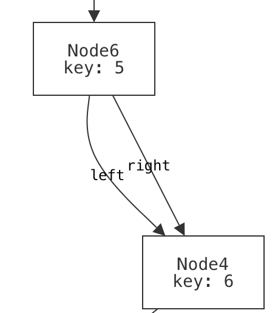

How To Read This Book
Welcome to Logic for Systems! Here are some quick hints that will help you use this book effectively.
This book is a draft, and there are some sections that are currently being filled in. If you want to use these materials and need support (e.g., you want to use the Forge homeworks that go with it, or a specific section you need is incomplete), please contact Tim_Nelson@brown.edu.
Especially during the Spring semester at Brown University, the deployed content of this book may be expanded and improved.
- If you are a Brown University student taking CSCI 1710, expect the book to be edited as the semester proceeds.
- If you are using the book in your own course or for your own studies, and want a "frozen" version to ensure consistency, we'd be happy to assist you. Please reach out to
Tim_Nelson@brown.edu.
Organization
The book is organized into a series of short sections, each of which are grouped into chapters:
- Chapter 1 (Beyond Testing) briefly motivates the content in this book and sets the stage with a new technique for testing your software.
- Chapter 2 (Modeling Static Scenarios) provides an introduction to modeling systems in Forge by focusing on systems that don't change over time.
- Chapter 3 (Discrete Event Systems) shows a common way to model the state of a system changing over time.
- Chapter 4 (Modeling Relationships) enriches the modeling language to support arbitrary relations between objects in the world.
- Chapter 5 (Temporal Specification) covers temporal operators, which are commonly used in industrial modeling and specification, and how to use them.
- Chapter 6 (Case Studies) touches on some larger applications of lightweight formal methods. Some of these will involve large models written in Forge, and others will lean more heavily on industrial systems.
- The Forge Documentation, which covers the syntax of the language more concisely and isn't focused on teaching. At the moment, this is in a separate document in order to make searching easier.
Each chapter contains a variety of examples: data structures, puzzles, algorithms, hardware concepts, etc. We hope that the diversity of domains covered means that everyone will see an example that resonates with them. Full language and tool documentation come after the main body of the book.
What does this book assume? What is its goal?
This book does not assume any prior background with formal methods or even discrete math. It does assume the reader has written programs before at the level of an introductory college course.
The goal of this chapter progression is to prepare the reader to formally model and reason about a domain of their own choosing in Forge (or perhaps in a related tool, such as an SMT solver).
With that in mind...
Do More Than Read
This book is example driven, and the examples are almost always built up from the beginning. The flow of the examples is deliberate, and might even take a "wrong turn" that is meant to teach a specific lesson before changing direction. If you try to read the book passively, you're likely to be very disappointed. Worse, you may not actually be able to do much with the material after reading.
Instead, follow along, pasting each snippet of code or Forge model into the appropriate tool, and try it! Better yet, try modifying it and see what happens. You'll get much more out of each section as a result. Forge especially is designed to aid experimentation. Let your motto be:
Navigating the Book Site
With JavaScript enabled, the table of contents (to the left, by default) will allow you to select a specific section of this book. Likewise, the search bar (enabled via the "Toggle Searchbar" icon) should allow you to search for arbitrary alphanumeric phrases in the full text; unfortunately, non alphanumeric operators are not supported by search at present.
The three buttons for popping out the table of contents, changing the color theme, and searching are in the upper-left corner of this page, by default. If you do not see them, please ensure that JavaScript is enabled.
The table of contents for the Forge documentation is expandable. Once it is open, click the ❱ icons to expand individual sections and subsections to browse more easily!
To change the color theme of the page, click this button:
To search, click this button:
Callout Boxes
Callout boxes can give valuable warnings, helpful hints, and other supplemental information. They are color- and symbol-coded depending on the type of information. For example:
If you see a callout labeled "CSCI 1710", it means that it's specifically for students in Brown University's CSCI 1710 course, Logic for Systems.
Exercises
Every now and then, you'll find question prompts, followed by a clickable header that looks like this:
Think, then click!
SPOILER TEXT
If you click the arrow, it will expand to show hidden text, often revealing an answer or some other piece of information that is meant to be read after you've thought about the question. When you see these exercises, don't skip past them, and don't just read the hidden text.
Thanks To
The current draft has benefitted from the feedback of many people, including: Shriram Krishnamurthi, Emily Nelson, Hillel Wayne, ...
Our Value Proposition
Everybody has endless demands on their time. If you're a student, you might be deciding which classes to take. There's never enough time to take them all, so you need to prioritize based on expected value. If you're a professional, you're deciding how to best use your limited "free" time to learn new skills and stay current. Either way, you're probably wondering: What good is this book? (And if you aren't asking that, you ought to be.)
You need many different skills for a successful career. This book won't teach you how to work with other people, or manage your tasks, or give and receive feedback. It won't teach you to program either; there are plenty of other books for that. Instead, this book will teach you:
- how to think more richly about what matters about a system;
- how to better express what you want from it;
- how to more thoroughly evaluate what a system actually does give you; and
- how to use constraints and constraint solvers in your work (because we'll use them as tools to help us out). It will also give you a set of baseline skills that will aid you in using any further formal-methods techniques you might encounter in your work, such as advanced type systems, program verification, theorem proving, and more.
Modeling: What really matters?
There's a useful maxim by George Box: "All models are wrong, but some are useful". The only completely accurate model of a system is that system itself, including all of its real external context. This is impractical; instead, a modeler needs to make choices about what really matters to them: what do you keep, and what do you disregard? Done well, a model gets at the essence of a system. Done poorly, a model yields nothing useful or, worse, gives a false sense of security.
I suspect that people were saying "All models are wrong" long before Box did! But it's worth reading this quote of his from 1978, and thinking about the implications.
Now it would be very remarkable if any system existing in the real world could be exactly represented by any simple model. However, cunningly chosen parsimonious models often do provide remarkably useful approximations. For example, the law relating pressure , volume and temperature of an "ideal" gas via a constant is not exactly true for any real gas, but it frequently provides a useful approximation and furthermore its structure is informative since it springs from a physical view of the behavior of gas molecules. For such a model there is no need to ask the question "Is the model true?". If "truth" is to be the "whole truth" the answer must be "No". The only question of interest is "Is the model illuminating and useful?".
(Bolding mine. The text is taken from pages 2 through 3 of the original paper.)
If you want to do software (or hardware) engineering, some amount of modeling is unavoidable. Here are two basic examples of many.
Data Models Everywhere
You might already have benefitted from a good model (or suffered from a poor one) in your programming work. Whenever you write data definitions or class declarations in a program, you're modeling. The ground truth of the data is rarely identical to its representation. You decide on a particular way that it should be stored, transformed, and accessed. You say how one piece of data relates to another.
Your data-modeling choices affect more than just execution speed: if a pizza order can't have a delivery address that is separate from the user's billing address, important user needs will be neglected. On the other hand, it is probably OK to leave the choice of cardboard box out of the user-facing order. An order has a delivery time, which probably comes with a time zone. You could model the time zone as an integer offset from UTC, but this is a very bad idea. And, since there are 24 hours in a day, the real world imposes range limits: a timezone that's a million hours ahead of UTC is probably a buggy value, even though the value 1000000 is much smaller than even a signed 32-bit int can represent.
Data vs. Its Representation
The level of abstraction matters, too. Suppose that your app scans handwritten orders. Then handwriting becomes pixels, which are converted into an instance of your data model, which is implemented as bytes, which are stored in hardware flip-flops and so on. You probably don't need, or want, to keep all those perspectives in mind simultaneously. Languages are valuable in part because of the abstractions they foster, even if those abstractions are incomplete—they can be usefully incomplete! What matters is whether the abstraction level suits your needs, and your users'.
I learned to program in the 1990s, when practitioners were at odds over automated vs. manual memory management. It was often claimed that a programmer needed to really understand what was happening at the hardware level, and manually control memory allocation and deallocation for the sake of performance. Most of us don't think that anymore, unless we need to! Sometimes we do; often we don't. Focus your attention on what matters for the task at hand.
The examples don't stop: In security, a threat model says what powers an attacker has. In robotics and AI, reinforcement learning works over a probabilistic model of real space. And so on. The key is: what matters for your needs? Box had something to say about that, too (in 1976):
Since all models are wrong the scientist must be alert to what is importantly wrong. It is inappropriate to be concerned about safety from mice when there are tigers abroad.
Specification: What do you want?
Suppose that I want to store date-and-time values in a computer program. That's easy enough to say, right? But the devil is in the details: What is the layout of the data? Which fields will be stored, and which will be omitted? Which values are valid, and which are out of bounds? Is the format efficiently serializable? How far backward in time should the format extend, and how far into the future should it reach?
And which calendar are we using, anyway?
If our programs are meant to work with dates prior to the 1600's, only their historical context can say whether they should be interpreted with the Gregorian calendar or the Julian calendar. And that's just two (Eurocentric) possibilities!
If you're just building a food delivery app, you probably only need to think about some of these aspects of dates and times. If you're defining an international standard, you need to think about them all.
Either way, being able to think carefully about your specification can separate quiet success from famous failure.
Validation and Verification: Did you get what you wanted?
Whether you're working out an algorithm on paper or checking a finished implementation, you need some means of judging correctness. Here, too, precision (and a little bit of adversarial thinking) matters in industry:
- When ordinary testing isn't good enough, techniques like fuzzing, property-based testing, and others give you new evaluative power.
- When you're updating, refactoring, or optimizing a system, a model of its ideal behavior can be leveraged for validation. Here's an example from 2014—click through the header of the linked article to read the original blog post.)
- A model of the system's behavior is also useful for test-case generation, and enable tools to generate test suites that have a higher coverage of the potential state space.
And all that's even before we consider more heavyweight methods, like model checking and program verification.
Formalism Isn't Absolute
The word "formal" has accumulated some unfortunate connotations: pedantry, stuffiness, ivory-tower snootiness, being an architecture astronaut, etc. The truth is that formalism is a sliding scale. We can take what we need and leave the rest. What really matters is the ability to precisely express your goals, and the ability to take advantage of that precision.
In fact, formalism powers many software tools that help us to reason about the systems we create. In the next section, we'll start sketching what that means for us as engineers and humans.
Logic for Systems
Setting the Stage
If you're reading this book, you've probably had to complete some programming assignments—or at least written some small program for a course or an online tutorial. Take a moment to list a handful of such assignments: what did you have to build?
Now ask yourself:
- How did you know what behavior to implement?
- How did you know which data structures or algorithms were the right ones to use?
- How did you know your program "worked", in the end?
In the context of assignments, there are expected answers to these questions. For instance, you might say you know your code worked because you tested it (very thoroughly, I'm sure)! But is that really the truth? In terms of consequences, the true bar for excellence in a programming class is the grade you got. That is:
- You knew what to do because you were told what to do.
- You probably knew which algorithms to use because they'd just been taught to you.
- You were confident that your programs worked because you were told by an authority figure.
But outside that context, as (say) a professional engineer, you lose the safety net. You might be working on a program that controls the fate of billions of dollars, tempers geopolitical strife, or controls a patient's insulin pump. Even if you had a TA, would you trust them to tell you that those programs worked? Would you trust your boss to understand exactly what needed to happen, and tell you exactly how to do it? Probably not! Instead, you need to think carefully about what you want, how to build it, and how to evaluate what you and others have built.
As engineers, we strive for perfection. But perfection is an ideal; it's not obtainable. Why? First: we're human. Even if we could read our customers' minds, that's no guarantee that they know what they really need. And even if we can prove our code is correct, we might be checking for the wrong things. Second: our environment is hostile. Computers break. Patches to dependencies introduce errors. Cosmic radiation can flip bits in memory. 100% reliability is hopeless. Anyone who tells you differently is trying to sell you something.
But that doesn't mean we should give up. It just means that we should moderate our expectations. Instead of focusing on perfect correctness, instead try to increase your confidence in correctness.
Unit Testing
Hopefully we all agree that unit testing with concrete input-output pairs has its virtues and that we should keep doing it. But let's investigate what it does and doesn't do well.
Exercise: Make two lists: What does unit testing do well? What doesn't it do well? (Hint: Why do we test? What could go wrong, and how can the sort of testing you've done in other classes let us down?)
Think, then click!
You might have observed that (for most interesting programs, anyway) tests cannot be exhaustive because there are infinitely many possible inputs. And since we're forced to test non-exhaustively, we have to hope we pick good tests---tests that not only focus on our own implementation, but on others (like the implementation that replaces yours eventually) too.
Worse, we can't test the things we don't think of, or don't know about; we're vulnerable to our limited knowledge, the availability heuristic, confirmation bias, and so on. In fact, we humans are generally ill equipped for logical reasoning, even if trained.
Humans and Reasoning
A Toy Example
Suppose we're thinking about the workings of a small company. We're given some facts about the company, and have to answer a question based on those facts. Here's an example. We know that:
- Alice directly supervises Bob.
- Bob directly supervises Charlie.
- Alice graduated Brown.
- Charlie graduated Harvale.
To keep things simple, we'll assume that all three people graduated some university.
Exercise: Does someone who graduated from Brown directly supervise someone who graduated from another University?
Think, then click.
Yes! Regardless of whether Bob graduated from Brown, some Brown graduate supervises some non-Brown graduate. Reasoning by hypotheticals, there is one fact we don't know: where Bob graduated. In case he graduated Brown, he supervises Charlie, a non-Brown graduate. In case he graduated from another school, he's supervised by Alice, a Brown graduate.
Humans tend to be very bad at reasoning by hypotheticals. There's a temptation to think that this puzzle isn't solvable because we don't know where Bob graduated from. Even Tim thought this at first after seeing the puzzle—in grad school! For logic!
Now imagine a puzzle with a thousand of these unknowns. A thousand boolean variables means cases to reason through. Want to use a computer yet?
This isn't really about logic puzzles.
A Real Scenario
There's a real cryptographic protocol called the Needham-Schroeder public-key protocol. You can read about it here. Unfortunately the protocol has a bug: it's vulnerable to attack if one of the principles can be fooled into starting an exchange with a badly-behaved or compromised agent. We won't go into specifics. Instead, let's focus on the fact that it's quite easy to get things like protocols wrong, and sometimes challenging for us humans to completely explore all possible behaviors -- especially since there might be behaviors we'd never even considered! It sure would be nice if we could get a computer to help out with that.
A pair of former 1710 students did an ISP on modeling crypto protocols, using the tools you'll learn in class. Here's an example picture, generated by their model, of the flaw in the Needham-Schroeder protocol:

You don't need to understand the specifics of the visualization; the point is that someone who has studied crypto protocols would. And this really does show the classic attack on Needham-Schroeder. You may not be a crypto-protocol person, but you probably are an expert in something subtle that you'd like to model, reason about, and understand better.
In fact, if you're reading this as part of your coursework for CSCI 1710, you will be expected to select, research, and model something yourself based on your interests. This is one of our main end-goals for the course.
Automated Reasoning as an Assistive Device
The human species has been so successful, in part, because of our ability to use assistive devices—tools! Eyeglasses, bicycles, hammers, bridges: all devices that assist us in navigating the world in our fragile meat-bodies. One of our oldest inventions, writing, is an assistive device that increases our long-term memory space and makes that memory persistent. Computers are only one in a long line of such inventions.
So, naturally, we've found ways to:
- use computers to help us test our ideas;
- use computers to exhaustively check program correctness;
- use computers to help us find gaps in our intuition about a program;
- use computers to help us explore the design space of a data structure, or algorithm, card game, or chemical reaction;
- etc.
There's a large body of work in Computer Science that uses logic to do all those things. We tend to call it formal methods, especially when the focus is on reasoning about systems. It touches on topics like system modeling, constraint solving, program analysis, design exploration, and more. That's what this book is about: the foundational knowledge to engage with many different applications of these ideas, even if you don't end up working with them directly every day.
More concretely, we'll focus on a class of techniques called lightweight formal methods, which are characterized by tradeoffs that favor ease of use over strong guarantees (although we'll sometimes achieve those as well).
Jeanette Wing and Daniel Jackson wrote a short article coining the term "lightweight FM" in the 90's, which you can find online.
When we say "systems" in this book we don't necessarily mean the kind of systems you see in a class on networks, hardware architecture, or operating systems. You can apply the techniques in this book to those subjects quite naturally, but you can also apply it to user interfaces, type systems in programming, hardware, version control systems like Git, web security, cryptographic protocols, robotics, puzzles, sports and games, and much more. So we construe the word "system" very broadly.
Here are some examples of "systems" that students have modeled in Forge: lifetimes in Rust, network reachability, and poker!


The Future of Computing
For better or worse, The shape of engineering is changing. Lots of people are excited, scared, or both about large language models like ChatGPT. This book won't teach you how to use generative AI, so it's reasonable to wonder: why learn from this book, instead of reading yet another book on another (deservedly) hot topic, like machine learning?
There are two questions that will never go out of style, and won't be answered by AI (at least, not in our lifetimes):
- What do you want to build? What does your customer really need? Answering this requires talking to them and other stakeholders, watching their processes, seeking their feedback, and adjusting your design based on it. And no matter who (or what) is writing the actual code, you need to be able to express all this precisely enough that they (or it) can succeed at the implementation.
- How will you evaluate what you get? No matter who (or what) is building the system, verification is needed before the system can be trusted.
Even setting aside the customer-facing aspects, we'll still need to think critically about what it is we want and how to evaluate whether we're getting it. The skills you learn here will remain useful (or become even more so) as engineering evolves. In the next chapter, we'll try to convince you that these skills will be useful for more than just code.
"Formal Methods"
Formal methods (FM) are ways to help you think carefully about a domain, process, or system. They use math-based techniques (which are usually implemented in tools) to help. They aren't an academic exercise; they are used widely in industry and have likely saved billions of dollars and thousands of lives.
Some industrial examples I'm fond of include:
- Amazon Web Services' Zelkova, which helps administrators author better security policies for their services. This book will give you the tools to build a policy-analysis system like Zelkova yourself.
- Microsoft's static driver verifier, which helps increase the reliability of low-level device drivers in Windows. While this book doesn't cover the techniques they used, I love to showcase this work (which helped Microsoft ship more stable drivers and, at this point, is now decades old).
- MongoDB's work on modeling replication, which found a real bug in their code. Quoting the linked page: "We've never encountered this issue in testing or in the field and only found it by reasoning about the edge cases. This shows writing and model checking ... specs is an excellent alternative way to find and verify edge cases." (Ellipsis mine.) We won't use this exact tool, but we'll cover other model checkers in this book.
We can find real applications for FM outside Computer Science too---even the law. Here's an article about the value of modeling legal concepts to find loopholes in the law. This is the sort of FM we'll be learning how to do in 1710.
This Github repository keeps a (reasonably up to date, but not exhaustive!) list of other industrial applications of formal methods. Check it out!
Exercise
Can you think of one or two domains, systems, or processes that especially interest you? Think about the kinds of "system" you interact with regularly or have learned about in your life. What would you like to understand better about those systems?
Remember that we construe the word system broadly. A cryptographic protocol is a system, but so is the game of baseball. A data structure is a system, but so are chemical reactions.
Looking Ahead: Tools
The main tool we'll use in this book is Forge, a tool for modeling systems. In the course of the book, we'll be progressing through three language levels in Forge:
- Froglet, which restricts the set of operations so that we can jump right in more easily. If you have intuitions about object-oriented programming, those intuitions will be useful in Froglet, although there are a few important differences that we'll talk about.
- Relational Forge, which expands the set of operations available to include sets, relations, and relational operators. These are useful for reasoning about complex relationships between objects and for representing certain domains, like databases or graphs.
- Temporal Forge, which helps us cleanly model how a system's state evolves over time. Temporal Forge is based on the industry-standard specification language LTL—Linear Temporal Logic.
We'll also use some other tools, like:
- Hypothesis, a testing library for Python; and
- Z3, an SMT solver library.
From Tests to Properties
We'll talk about more than just software soon. For now, let's go back to testing. Most of us have learned how to write test cases. Given an input, here's the output to expect. Tests are a kind of pointwise specification; a partial one, and not great for fully describing what you want, but a kind of specification nonetheless. They're cheap, non-trivially useful, and better than nothing.
But they also carry our biases, they can't cover an infinite input space, etc. Even more, they're not always adequate carriers of intent: if I am writing a program to compute the statistical median of a dataset, and write assert median([1,2,3]) == 2, what exactly is the behavior of the system I'm trying to confirm? Surely I'm not writing the test because I care specifically about [1,2,3] only, and not about [3,4,5] in the same way? Maybe there was some broader aspect, some property of median I cared about when I wrote that test.
Exercise: What do you think it was? What makes an implementation of median correct?
Think, then click!
There might be many things! One particular idea is that, if the input list has odd length, the median needs to be an element of the list. Or that, once the set is sorted, the median should be the "middle" element.
There isn't always an easy-to-extract property for every unit test. But this idea—encoding goals instead of specific behaviors—forces us to start thinking critically about what exactly we want from a system and helps us to express it in a way that others (including, perhaps, LLMs) can better use. It's only a short hop from there to some of the real applications we talked about last time, like verifying firewalls or modeling the Java type system.
Sometimes the input space is small enough that exhaustive testing works well. This blog post, entitled "There are only four billion floats" is an example.
Depending on your experience, this may also be a different kind from testing from what you're used to. Building a repertoire of different tools is essential for any engineer!
A New Kind of Testing
Cheapest Paths
Consider the problem of finding cheapest paths in a weighted graph. There are quite a few algorithms you might use: Dijkstra, Bellman-Ford, even a plain breadth-first search for an unweighted graph. You might have implemented one of these for another class!
The problem statement seems simple: take a graph and two vertex names and as input. Produce the cheapest path from to in . But it turns out that this problem hides a lurking issue.
Exercise: Find the cheapest path from vertex to vertex on the graph below.

Think, then click!
The path is G to A to B to E.Great! We have the answer. Now we can go and add a test case for with that graph as input and (G, A, B, E) as the output.
Wait -- you found a different path? G to D to B to E?
And another path? G to H to F to E?
If we add a traditional test case corresponding to one of the correct answers, our test suite will falsely raise alarms for correct implementations that happen to find different answers. In short, we'll be over-fitting our tests to @italic{one specific implementation}: ours. But there's a fix. Maybe instead of writing:
shortest(GRAPH, G, E) == [(G, A), (A, B), (B, E)]
we write:
shortest(GRAPH, G, E) == [(G, A), (A, B), (B, E)] or
shortest(GRAPH, G, E) == [(G, D), (D, B), (B, E)] or
shortest(GRAPH, G, E) == [(G, H), (H, F), (F, E)]
Exercise: What's wrong with the "big or" strategy? Can you think of a graph where it'd be unwise to try to do this?
Think, then click!
There are at least two problems. First, we might have missed some possible solutions, which is quite easy to do; the first time Tim was preparing these notes, he missed the third path above! Second, there might be an unmanageable number of equally correct solutions. The most pathological case might be something like a graph with all possible edges present, all of which have weight zero. Then, every path is cheapest.
This problem -- multiple correct answers -- occurs in every part of Computer Science. Once you're looking for it, you can't stop seeing it. Most graph problems exhibit it. Worse, so do most optimization problems. Unique solutions are convenient, but the universe isn't built for our convenience.
Exercise: What's the solution? If test cases won't work, is there an alternative? (Hint: instead of defining correctness bottom-up, by small test cases, think top-down: can we say what it means for an implementation to be correct, at a high level?)
Think, then click!
In the cheapest-path case, we can notice that the costs of all cheapest paths are the same. This enables us to write:
cost(cheapest(GRAPH, G, E)) = 11
which is now robust against multiple implementations of cheapest.
This might be something you were taught to do when implementing cheapest-path algorithms, or it might be something you did on your own, unconsciously. (You might also have been told to ignore this problem, or not told about it at all...) We're not going to stop there, however.
Notice that we just did something subtle and interesting. Even if there are a billion cheapest paths between two vertices in the input graph, they all have that same, minimal length. Our testing strategy has just evolved past naming specific values of output to checking broader properties of output.
Similarly, we can move past specific inputs: randomly generate them. Then, write a function is_valid that takes an arbitrary input, output pair and returns true if and only if the output is a valid solution for the input. Just pipe in a bunch of inputs, and the function will try them all. You can apply this strategy to most any problem, in any programming language. (For your homework this week, you'll be using Python.) Let's be more careful, though.
Exercise: Is there something else that cheapest needs to guarantee for that input, beyond finding a path with the same cost as our solution?
Think, then click!
We also need to confirm that the path returned by cheapest is indeed a path in the graph!
Exercise: Now take that list of goals, and see if you can outline a function that tests for it. Remember that the function should take the problem input (in this case, a graph and the source and destination vertices) and the output (in this case, a path). You might generate something like this pseudocode:
Think, then click!
isValid : input: (graph, vertex, vertex), output: list(vertex) -> bool
returns true IFF:
(1) output.cost == trustedImplementation(input).cost
(2) every vertex in output is in input's graph
(3) every step in output is an edge in input
... and so on ...
This style of testing is called Property-Based Testing (PBT). When we're using a trusted implementation—or some other artifact—to either evaluate the output or to help generate useful inputs, it is also a variety of Model-Based Testing (MBT).
There's a lot of techniques under the umbrella of MBT. A model can be another program, a formal specification, or some other type of artifact that we can "run". Often, MBT is used in a more stateful way: to generate sequences of user interactions that drive the system into interesting states.
For now, know that modeling systems can be helpful in generating good tests, in addition to everything else.
There are a few questions, though...
Question: Can we really trust a "trusted" implementation?
No, not completely. It's impossible to reach a hundred percent trust; anybody who tells you otherwise is selling something. Even if you spend years creating a correct-by-construction system, there could be a bug in (say) how it is deployed or connected to other systems.
But often, questions of correctness are really about the transfer of confidence: my old, slow implementation has worked for a couple of years now, and it's probably mostly right. I don't trust my new, optimized implementation at all: maybe it uses an obscure data structure, or a language I'm not familiar with, or maybe I don't even have access to the source code at all.
And anyway, often we don't need recourse to any trusted model; we can just phrase the properties directly.
Exercise: What if we don't have a trusted implementation?
Think, then click!
You can use this approach whenever you can write a function that checks the correctness of a given output. It doesn't need to use an existing implementation (it's just easier to talk about that way). In the next example we won't use a trusted implementation at all!
Input Generation
Now you might wonder: Where do the inputs come from?
Great question! Some we will manually create based on our own cleverness and understanding of the problem. Others, we'll generate randomly.
Random inputs are used for many purposes in software engineering: "fuzz testing", for instance, creates vast quantities of random inputs in an attempt to find crashes and other serious errors. We'll use that same idea here, except that our notion of correctness is usually a bit more nuanced.
Concretely:

It's important to note that some creativity is still involved here: you need to come up with an is_valid function (the "property"), and you'll almost always want to create some hand-crafted inputs (don't trust a random generator to find the subtle corner cases you already know about!) The strength of this approach lies in its resilience against problems with multiple correct answers, and in its ability to mine for bugs while you sleep. Did your random testing find a bug? Fix it, and then add that input to your list of regression tests. Rinse, repeat.
If we were still thinking in terms of traditional test cases, this would make no sense: where would the outputs come from? Instead, we've created a testing system where concrete outputs aren't something we need to provide. Instead, we check whether the program under test produces any valid output.
The Hypothesis Library
There are PBT libraries for most every popular language. In this book, we'll be using a library for Python called Hypothesis. Hypothesis has many helper functions to make generating random inputs relatively easy. It's worth spending a little time stepping through the library. Let's test a function in Python itself: the median function in the statistics library, which we began this chapter with. What are some important properties of median?
If you're in CSCI 1710, your first homework starts by asking you to generate code using an LLM of your choice, such as ChatGPT. Then, you'll use property-based testing to assess its correctness. To be clear, you will not be graded on the correctness of the code you prompt an LLM to generate. Rather, you will be graded on how good your property-based testing is.
Later in the semester, you'll be using PBT again to test more complex software!
Now let's use Hypothesis to test at least one of those properties. We'll start with this template:
from hypothesis import given, settings
from hypothesis.strategies import integers, lists
from statistics import median
# Tell Hypothesis: inputs for the following function are non-empty lists of integers
@given(lists(integers(), min_size=1))
# Tell Hypothesis: run up to 500 random inputs
@settings(max_examples=500)
def test_python_median(input_list):
pass
# Because of how Python's imports work, this if statement is needed to prevent
# the test function from running whenever a module imports this one. This is a
# common feature in Python modules that are meant to be run as scripts.
if __name__ == "__main__": # ...if this is the main module, then...
test_python_median()
Let's start by filling in the shape of the property-based test case:
def test_python_median(input_list):
output_median = median(input_list) # call the implementation under test
print(f'{input_list} -> {output_median}') # for debugging our property function
if len(input_list) % 2 == 1:
assert output_median in input_list
# The above checks a conditional property. But what if the list length isn't even?
# We should be able to do better!
Exercise: Take a moment to try to express what it means for median to be correct in the language of your choice. Then continue on with reading this section.
Expressing properties can often be challenging. After some back and forth, we might reach a candidate function like this:
def test_python_median(input_list):
output_median = median(input_list)
print(f'{input_list} -> {output_median}')
if len(input_list) % 2 == 1:
assert output_median in input_list
lower_or_eq = [val for val in input_list if val <= output_median]
higher_or_eq = [val for val in input_list if val >= output_median]
assert len(lower_or_eq) >= len(input_list) // 2 # int division, drops decimal part
assert len(higher_or_eq) >= len(input_list) // 2 # int division, drops decimal part
Unfortunately, there's a problem with this solution. Python's median implementation fails this test! Hypothesis provides a random input on which the function fails: input_list=[9502318016360823, 9502318016360823]. Give it a try! This is what my computer produced; what happens on yours?
Exercise: What do you think is going wrong?
Think, then click!
Here's what my Python console reports:
>>> statistics.median([9502318016360823, 9502318016360823])
9502318016360824.0
I really don't like seeing a number that's larger than both numbers in the input set. But I'm also suspicious of that trailing .0. median has returned a float, not an int. That might matter. But first, we'll try the computation that we might expect median to run:
>>> (9502318016360823*2)/2
9502318016360824.0
What if we force Python to perform integer division?
>>> (9502318016360823*2)//2
9502318016360823
Could this be a floating-point imprecision problem? Let's see if Hypothesis can find another failing input where the values are smaller. We'll change the generator to produce only small numbers, and increase the number of trials hundredfold:
@given(lists(integers(min_value=-1000,max_value=1000), min_size=1))
@settings(max_examples=50000)
No error manifests. That doesn't mean one couldn't, but it sure looks like large numbers make the chance of an error much higher.
The issue is: because Python's statistics.median returns a float, we've inadvertently been testing the accuracy of Python's primitive floating-point division, and floating-point division is known to be imprecise in some cases. It might even manifest differently on different hardware—this is only what happens on my laptop!
Anyway, we have two or three potential fixes:
- bound the range of potential input values when we test;
- check equality within some small amount of error you're willing to tolerate (a common trick when writing tests about
floatvalues); or - change libraries to one that uses an arbitrary-precision, like BigNumber. We could adapt our test fairly easily to that setting, and we'd expect this problem to not occur.
Which is best? I don't really like the idea of arbitrarily limiting the range of input values here, because picking a range would require me to understand the floating-point arithmetic specification a lot more than I do. For instance, how do I know that there exists some number before which this issue can't manifest? How do I know that all processor architectures would produce the same thing?
Between the other two options (adding an error term and changing libraries) it depends on the engineering context we're working in. Changing libraries may have consequences for performance or system design. Testing equality within some small window may be the best option in this case, where we know that many inputs will involve float division.
Takeaways
We'll close this section by noticing two things:
First, being precise about what correctness means is powerful. With ordinary unit tests, we're able to think about behavior only point-wise. Here, we need to broadly describe our goals, and tere's a cost to that, but also advantages: comprehensibility, more powerful testing, better coverage, etc. And we can still get value from a partial definition, because we can then at least apply PBT to that portion of the program's behavior.
Second, the very act of trying to precisely express, and test, correctness for median taught us (or reminded us about) something subtle about how our programming language works, which tightened our definition of correctness. Modeling often leads to such a virtuous cycle.
Intro to Modeling Systems (Part 1: Tic-Tac-Toe)
What's a Model?
A model is a representation of a system that faithfully includes some but not all of the system's complexity. There are many different ways to model a system, all of which have different advantages and disadvantages. Think about what a car company does before it produces a new car design. Among other things, it creates multiple models. E.g.,
- it models the car in some computer-aided design tool; and then
- creates a physical model of the car, perhaps with clay, for testing in wind tunnels etc.
There may be many different models of a system, all of them focused on something different. As the statisticians say, "all models are wrong, but some models are useful". Learning how to model a system is a key skill for engineers, not just within "formal methods". Abstraction is one of the key tools in Computer Science, and modeling lies at the heart of abstraction.
In this course, the models we build aren't inert; we have tools that we can use the explore and analyze them!
Don't Be Afraid of Imperfect Representations
We don't need to fully model a system to be able to make useful inferences. We can simplify, omit, and abstract concepts/attributes to make models that approximate the system while preserving the fundamentals that we're interested in.
Exercise: If you've studied physics, there's a great example of this in statics and dynamics. Suppose I drop a coin from the top of the science library, and ask you what its velocity will be when it hits the ground. Using the methods you learn in beginning physics, what's something you usefully disregard?
Think, then click!
Air resistance! Friction! We can still get a reasonable approximation for many problems without needing to include that. (And advanced physics adds even more factors that aren't worth considering at this scale.) The model without friction is often enough.
What is a "System"? (Models vs. Implementations)
When we say "systems" in this book, we mean the term broadly. A distributed system (like replication in MongoDB) is a system, but so are user interfaces and hardware devices like CPUs and insulin pumps. Git is a system for version control. The web stack, cryptographic protocols, chemical reactions, the rules of sports and games—these are all systems too!
To help build intuition, let's work with a simple system: the game of tic-tac-toe (also called noughts and crosses). There are many implementations of this game, including this one that I wrote in Python. And, of course, these implementations often have corresponding test suites, like this (incomplete) example.
Exercise: Play a quick game of tic-tac-toe by hand. If you can, find a partner, but if not, then play by yourself.
Notice what just happened. You played the game. In doing so, you ran your own mental implementation of the rules. The result you got was one of many possible games, each with its own specific sequence of legal moves, leading to a particular ending state. Maybe someone won, or maybe the game was a tie. Either way, many different games could have ended with that same board.
Modeling is different from programming. When you're programming traditionally, you give the computer a set of instructions and it follows them. This is true whether you're programming functionally or imperatively, with or without objects, etc. Declarative modeling languages like Forge work differently. The goal of a model isn't to run instructions, but rather to describe the rules that govern systems.
Here's a useful comparison to help reinforce the difference (with thanks to Daniel Jackson):
- An empty program does nothing.
- An empty model allows every behavior.
Modeling Tic-Tac-Toe Boards
What are the essential concepts in a game of tic-tac-toe?
When we're first writing a model, we'll start with 5 steps. For each step, I'll give examples from tic-tac-toe and also for binary search trees (which we'll start modeling soon) for contrast.
- What are the datatypes involved, and their fields?
- For tic-tac-toe: they might be the 3-by-3 board and the
XandOmarks that go in board locations. - For a binary search tree: they might be the tree nodes and their left and right children.
- For tic-tac-toe: they might be the 3-by-3 board and the
- What makes an instance of these datatypes well formed? That is, what conditions are needed for them to not be garbage?
- For tic-tac-toe, we might require that the indexes used are between
0and2, since the board is 3-by-3. (We could just as easily use1,2, and3. I picked0as the starting point out of habit, because list indexes start from0in the programming languages I tend to use.) - For a binary search tree, we might require that every node has at most one left child, at most one right child, a unique parent, and so on.
- For tic-tac-toe, we might require that the indexes used are between
- What's a small example of how these datatypes can be instantiated?
- For tic-tac-toe, the empty board would be an example. So would the board where
Xmoves first into the middle square. - For a binary search tree, this might be a tree with only one node, or a 3-node tree where the root's left and right children are leaves.
- For tic-tac-toe, the empty board would be an example. So would the board where
- What does the model look like when run?
- For tic-tac-toe, we should see a board with some number of
XandOmarks. - For a binary search tree, we should see some set of nodes that forms a single tree via left- and right-children.
- For tic-tac-toe, we should see a board with some number of
- What domain predicates are there? Well-formedness defines conditions that are needed for an instantiation to not be "garbage". But whatever we're modeling surely has domain-specific concepts of its own, which may or may not hold.
- For tic-tac-toe, we care a great deal if the board is a winning board or not. Similarly, we might care if it looks like someone has cheated.
- For a binary search tree, we care if the tree is balanced, or if it satisfies the BST invariant.
These steps will get us to a point we can begin to iterate: working to validate and/or refine the model as we go. It's rare that a model will do everything you need (and do so correctly) on the first try.
Why make this distinction between well-formedness and domain predicates? Because one should always hold in any instance Forge considers, but the other may or may not hold. In fact, we might want to use Forge to verify that a domain predicate always holds! And if we've told Forge that any instance that doesn't satisfy it is garbage, Forge won't find us such an instance.
Datatypes
We might list:
- the players
XandO; - the 3-by-3 game board, where players can put their marks;
- the idea of whose turn it is at any given time; and
- the idea of who has won the game at any given time.
Now let's add those ideas to a model in Forge!
#lang forge/froglet
The first line of any Forge model will be a #lang line, which says which Forge language the file uses. We'll start with the Froglet language for now. Everything you learn in this language will apply in other Forge languages, so I'll use "Forge" interchangeably.
Now we need a way to talk about the noughts and crosses themselves. So let's add a sig that represents them:
#lang forge/froglet
abstract sig Player {}
one sig X, O extends Player {}
You can think of sig in Forge as declaring a kind of object. A sig can extend another, in which case we say that it is a child of its parent, and child sigs cannot overlap. When a sig is abstract, any member must also be a member of one of that sig's children; in this case, any Player must either be X or O. Finally, a one sig has exactly one member—there's only a single X and O in our model.
We also need a way to represent the game board. We have a few options here: we could create an Index sig, and encode an ordering on those (something like "column A, then column B, then column C"). Another is to use Forge's integer support. Both solutions have their pros and cons. Let's use integers, in part to get some practice with them.
#lang forge/froglet
abstract sig Player {}
one sig X, O extends Player {}
sig Board {
board: pfunc Int -> Int -> Player
}
Every Board object contains a board field describing the moves made so far. This field is a partial function, or dictionary, for every Board that maps each (Int, Int) pair to at most one Player.
Well-formedness
These definitions sketch the overall shape of a board: players, marks on the board, and so on. But not all boards that fit the definition will be valid. For example:
- Forge integers aren't true mathematical integers, but are bounded by a bitwidth we give whenever we run the tool. So we need to be careful here. We want a classical 3-by-3 board with indexes of (say)
0,1, and2, not a board where (e.g.) row-5, column-1is a valid location.
We'll call these well-formedness constraints. They aren't innately enforced by our sig declarations, but we'll almost always want Forge to enforce them, so that it doesn't find "garbage instances". Let's write a wellformedness predicate:
-- a Board is well-formed if and only if:
pred wellformed[b: Board] {
-- row and column numbers used are between 0 and 2, inclusive
all row, col: Int | {
(row < 0 or row > 2 or col < 0 or col > 2)
implies no b.board[row][col]
}
}
Forge treats either -- or // as beginning a line-level comment, and /* ... */ as denoting a block comment. This is different from the Python code we saw in the last section! In Forge, # has a different meaning.
This predicate is true of any Board if and only if the above 2 constraints are satisfied. Let's break down the syntax:
- Constraints can quantify over a domain. E.g.,
all row, col: Int | ...says that for any pair of integers (up to the given bitwidth), the following condition (...) must hold. Forge also supports, e.g., existential quantification (some), but we don't need that yet. We also have access to standard boolean operators likeor,implies, etc. - Formulas in Forge always evaluate to a boolean; expressions evaluate to sets. For example,
- the expression
b.board[row][col]evaluates to thePlayer(if any) with a mark at location (row,col) in boardb; but - the formula
no b.board[row][col]is true if and only if there is no such `Player``.
- the expression
- A
pred(predicate) in Forge is a helper function that evaluates to a boolean. Thus, its body should always be a formula.
Notice that, rather than describing a process that produces a well-formed board, or even instructions to check well-formedness, we've just given a declarative description of what's necessary and sufficient for a board to be well-formed. If we'd left the predicate body empty, any board would be considered well-formed—there'd be no formulas to enforce!
A Few Examples
Since a predicate is just a function that returns true or false, depending on its arguments and whichever instance Forge is looking at, we can write tests for it the same way we would for any other boolean-valued function. But even if we're not testing, it can be useful to write a small number of examples, so we can build intuition for what the predicate means.
In Forge, examples are automatically run whenever your model executes. They describe basic intent about a given predicate; in this case, let's write two examples in Forge:
- A board where
Xhas moved 3 times in valid locations, and so ought to be considered well formed. - A board where a player has moved in an invalid location, and shouldn't be considered well formed.
Notice that we're not making judgements about the rules being obeyed yet—just about whether our wellformed predicate is behaving the way we expect. And the wellformed predicate isn't aware of things like "taking turns" or "stop after someone has won", etc. It just knows about the valid indexes being 0, 1, and 2.
We'll write those two examples in Forge:
-- Helper to make these examples easier to write
pred all_wellformed { all b: Board | wellformed[b]}
-- all_wellformed should be _true_ for the following instance
example firstRowX_wellformed is {all_wellformed} for {
Board = `Board0 -- backquote labels specific atoms
X = `X O = `O -- examples must define all sigs
Player = X + O -- only two kinds of player
`Board0.board = (0, 0) -> `X + -- the partial function for the board's
(0, 1) -> `X + -- contents (unmentioned squares must
(0, 2) -> `X -- remain empty, because we used "=" to say
-- "here's the function for `board0")
}
-- all_wellformed should be _false_ for the following instance
example off_board_not_wellformed is {not all_wellformed} for {
Board = `Board0
X = `X O = `O
Player = X + O
`Board0.board = (-1, 0) -> `X +
(0, 1) -> `X +
(0, 2) -> `X
}
Notice that we've got a test thats a positive example and another test that's a negative example. We want to make sure to exercise both cases, or else "always true" or "always" false could pass our suite.
Running Forge
The run command tells Forge to search for an instance satisfying the given constraints:
run { some b: Board | wellformed[b]}
(If you're curious about how Forge finds solutions, you can find a brief sketch in the Q&A for this chapter.)
When we click the play button in the VSCode extension, the engine solves the constraints and produces a satisfying instance, (Because of differences across solver versions, hardware, etc., it's possible you'll see a different instance than the one shown here.) A browser window should pop up with a visualization. You can also run racket <filename.frg> in the terminal, although we recommend the VSCode extension.
If you're running on Windows, the Windows-native cmd and PowerShell terminals will not properly load Forge's visualizer. Instead, we suggest using one of many other options on Windows that we've tested and know to work: the VSCode extension (available on the VSCode Marketplace), DrRacket, Git for Windows (e.g., git bash), Windows Subsystem for Linux, or Cygwin.
There are many options for visualization. The default which loads initially is a directed-graph based one:

(TODO: make this clickable to show it bigger? Want to see the whole window, but then the graph is small.)
This isn't very useful; it looks nothing like a tic-tac-toe board! We can make more progress by using the "Table" visualization—which isn't ideal either:

Forge also allows users to make custom visualizations via short JavaScript programs; here's an example basic visualizer for this specific tic-tac-toe model that produces images like this one:
We'll talk more about visualization scripts later. For now, let's proceed. TODO: replace img with one matching the table view TODO: add side-by-side CSS
This instance contains a single board, and it has 9 entries. Player O has moved in all of them (the 0 suffix of O0 in the display is an artifact of how Forge's engine works; ignore it for now). It's worth noticing two things:
- This board doesn't look quite right: player
Ooccupies all the squares. We might ask: has playerObeen cheating? But the fact is that this board satisfies the constraints we have written so far. Forge produces it simply because our model isn't yet restrictive enough, and for no other reason. "Cheating" doesn't exist yet. - We didn't say how to find that instance. We just said what we wanted, and the tool performed some kind of search to find it. So far the objects are simple, and the constraints basic, but hopefully the power of the idea is coming into focus.
Here, we see Board3 because the solver had a few options to pick from: we never said there should only ever be one Board, after all. So, under the hood, it was considering the potential existence of multiple boards. And then it happened to pick this one to exist in this instance.
Reflection: Implementation vs. Model
So far we've just modeled boards, not full games. But we can still contrast our work here against the Python implementation of tic-tac-toe shared above.
Exercise: How do the data-structure choices, and type declarations, in the implementation compare with the essence of the game as reflected in the model? What is shared, and what is different?
Spend a minute identifying at least one commonality and at least one difference, then move on.
Domain Predicates
Now let's write predicates that describe important ideas in the domain. What's important in the game of tic-tac-toe? Here are a few things.
Starting Boards
What would it mean to be a starting state in a game? The board is empty:
pred starting[s: Board] {
all row, col: Int |
no s.board[row][col]
}
Turns
How do we tell when it's a given player's turn? It's X's turn when there are the same number of each mark on the board:
pred XTurn[s: Board] {
#{row, col: Int | s.board[row][col] = X} =
#{row, col: Int | s.board[row][col] = O}
}
Here, we're measuring the size of 2 sets. The {row, col: Int | ...} syntax is called a set comprehension. A set comprehension defines a set. We're defining the set of row-column pairs where the board contains one of the player marks. The # operator gives the size of these sets, which we then compare.
Exercise: Is it enough to say that OTurn is the negation of XTurn? That is, we could write: pred OTurn[s: Board] { not XTurn[s: Board]}. This seems reasonable enough; why might we not want to write this?
Think, then click!
Because we defined X's turn to be when the number of X's and O's on the board are in balance. So any other board would be O's turn, including ones that ought to be illegal, once we start defining moves of the game. Instead, let's say something like this:
pred OTurn[s: Board] {
-- It's O's turn if X has moved once more often than O has
#{row, col: Int | s.board[row][col] = X} =
add[#{row, col: Int | s.board[row][col] = O}, 1]
}
Forge supports arithmetic operations on integers like add. Forge integers are signed (i.e., can be positive or negative) and are bounded by a bit width, which defaults to 4 bits. The number of available integers is always $2^k$, where $k$ is the bit width.
Forge follows the 2's complement arithmetic convention, which means that the available integers are split evenly between positive and negative numbers, but counting 0 as "positive". So with 4 bits, we can represent numbers between -8 and 7 (inclusive).
This means that (while it doesn't matter for this model yet), arithmetic operations can overflow—just like primitive integers in languages like Java! For example, if we're working with 4-bit integers, then add[7,1] will be -8. You can experiment with this in the visualizer's evaluator, which we'll be using a lot after the initial modeling tour is done.
Don't try to use + for addition in any Forge language. Use add instead; this is because + is reserved for something else (which we'll explain later).
Winning the Game
What does it mean to win? A player has won on a given board if:
- they have placed their mark in all 3 columns of a row;
- they have placed their mark in all 3 rows of a column; or
- they have placed their mark in all 3 squares of a diagonal.
We'll express this in a winner predicate that takes the current board and a player name. Let's also define a couple helper predicates along the way:
pred winRow[s: Board, p: Player] {
-- note we cannot use `all` here because there are more Ints
some row: Int | {
s.board[row][0] = p
s.board[row][1] = p
s.board[row][2] = p
}
}
pred winCol[s: Board, p: Player] {
some column: Int | {
s.board[0][column] = p
s.board[1][column] = p
s.board[2][column] = p
}
}
pred winner[s: Board, p: Player] {
winRow[s, p]
or
winCol[s, p]
or
{
s.board[0][0] = p
s.board[1][1] = p
s.board[2][2] = p
} or {
s.board[0][2] = p
s.board[1][1] = p
s.board[2][0] = p
}
}
After writing these domain predicates, we're reaching a fairly complete model for a single tic-tac-toe board. Let's decide how to fix the issue we saw above (the reason why OTurn couldn't be the negation of XTurn): perhaps a player has moved too often.
Should we add something like OTurn[s] or XTurn[s] to our wellformedness predicate? No! If we then later enforced wellformedness for all boards, that would exclude "cheating" instances where a player has more moves on the board than are allowed. But this has some risk, depending on how we intend to use the wellformed predicate:
- If we were only ever generating valid boards, a cheating state might well be spurious, or at least undesirable. In that case, we might prevent such states in
wellformedand rule it out. - If we were generating arbitrary (not necessarily valid) boards, being able to see a cheating state might be useful. In that case, we'd leave it out of
wellformed. - If we're interested in verification, e.g., we are asking whether the game of Tic-Tac-Toe enables ever reaching a cheating board, we shouldn't add
not cheatingtowellformed; becausewellformedalso excludes garbage boards, we'd probably use it in our verification—in which case, Forge will never find us a counterexample!
Notice the similarity between this issue and what we do in property-based testing. Here, we're forced to distinguish between what a reasonable board is (analogous to the generator's output in PBT) and what a reasonable behavior is (analogous to the validity predicate in PBT). One narrows the scope of possible worlds to avoid true "garbage"; the other checks whether the system behaves as expected in one of those worlds.
We'll come back to this later, when we've had a bit more modeling experience. For now, let's separate our goal into a new predicate called balanced, and add it to our run command above so that Forge will find us an instance where some board is both balanced and wellformed:
pred balanced[s: Board] {
XTurn[s] or OTurn[s]
}
run { some b: Board | wellformed[b] and balanced[b]}
If we click the "Next" button a few times, we see that not all is well: we're getting boards where wellformed is violated (e.g., entries at negative rows, or multiple moves in one square). Why is this happening?
We're getting this because of how the run was phrased. We said to find an instance where some board was well-formed and valid, not one where all boards were. Our run is satisfied by any instance where at least one Board is wellformed; the others won't affect the truth of the constraint. By default, Forge will find instances with up to 4 Boards. So we can fix the problem either by telling Forge to find instances with only 1 Board:
run { some b: Board | wellformed[b] and balanced[b]}
for exactly 1 Board
or by saying that all boards must be well-formed and balanced:
run { all b: Board | wellformed[b] and balanced[b]}
Practice with run
The run command can be used to give Forge more detailed instructions for its search.
No Boards
Exercise: Is it possible for an instance with no boards to still satisfy constraints like these?
run {
all b: Board | {
-- X has won, and the board looks OK
wellformed[b]
winner[b, X]
balanced[b]
}
}
Think, then click!
Yes! There aren't any boards, so there's no obligation for anything to satisfy the constraints inside the quantifier. You can think of the all as something like a for loop in Java or the all() function in Python: it checks every Board in the instance. If there aren't any, there's nothing to check—return true.
Adding More
This addition also requires that X moved in the middle of the board:
run {
all b: Board | {
-- X has won, and the board looks OK
wellformed[b]
winner[b, X]
balanced[b]
-- X started in the middle
b.board[1][1] = X
}
} for exactly 2 Board
Notice that, because we said exactly 2 Board here, Forge must find instances containing 2 tic-tac-toe boards, and both of them must satisfy the constraints: wellformedness, X moving in the middle, etc. You could ask for a board where X hasn't won by adding not winner[b, X].
We'll come back to tic-tac-toe soon. The next section will cover a second static example let's cover another static example.
Testing with assertions
Before we move on, I want to quickly note that example isn't the only way you can write tests in Forge. The example construct is powerful if you want to write "pointwise" tests in terms of single instances, but can quickly become verbose. If you know what properties you're interested in testing for, you can encode that into an assert in Forge. For example:
// I want to check that this predicate is satisfiable for some set of arguments,
// but I don't care about the specific instance(s) that satisfy it.
assert {some b: Board | XTurn[b]} is sat
// I want to confirm that OTurn and XTurn are mutually exclusive
// assert {} TODO ADD
Intro to Modeling Systems (Part 2: BSTs)
Now that we've written our first model—tic-tac-toe boards—let's switch to something a bit more serious: binary search trees. A binary search tree (BST) is a binary tree with an added property about its structure that allows it to efficiently answer many search queries related to the values it stores. Here's an example, drawn by hand:

Each node of the tree holds some value that the tree supports searching for. We'll call this value the search key, or just the key for each node. The common ancestor of every node in the tree is called the root.
This is obviously a binary tree, since it is a tree where every node has at most 2 children. What makes it a binary search tree is the invariant that every node obeys:
- all left-descendants of have a key less than 's key; and
- all right-descendants of have a key greater than or equal to 's key.
When you're first learning about binary search trees, it's easy to phrase the invariant wrong:
- the left child of (if any) has a key less than 's key; and
- the right child of (if any) has a key greater than or equal to 's key. With experience, it's straightforward to see that this is too weak; search will break. But at first that isn't so obvious. It would be interesting if we could use Forge to help us understand the difference and its impact on searching the tree.
Let's start modeling. As with programming, it's a good idea to start simple, and add complexity and optimization after. So we'll start with plain binary trees, and then add the invariant.
Like with tic-tac-toe, we'll follow this rough 5-step progression:
- define the pertinent datatypes and fields;
- define a well-formedness predicate;
- write some examples;
- run and exercise the base model;
- write domain predicates. Keep in mind that this isn't a strict "waterfall" style progression; we may return to previous steps if we discover it's necessary.
Datatypes
A binary tree is made up of nodes. Each node in the tree has at most one left child and at most one right child. While nodes in the tree can hold values of most any type, for simplicity we'll stick to integers.
Unlike in tic-tac-toe, this definition is recursive:
#lang forge/froglet
sig Node {
key: one Int, -- every node has some key
left: lone Node, -- every node has at most one left-child
right: lone Node -- every node has at most one right-child
}
Recall that a sig is a datatype, each of which may have a set of fields. Here, we're saying that there is a datatype called Node, and that every Node has a key, left, and right field.
Wellformedness for Binary Trees
What makes a binary tree a binary tree? We might start by saying that:
- it's single-tree-shaped: there are no cycles and all nodes have at most one parent node; and
- it's connected: all non-root nodes have a common ancestor.
It's sometimes useful to write domain predicates early, and then use them to define wellformedness more clearly. For example, it might be useful to write a helper that describes what it means for a node to be a root node, i.e., the common ancestor of every node in the tree:
#lang forge/froglet
sig Node {
key: one Int, -- every node has some key
left: lone Node, -- every node has at most one left-child
right: lone Node -- every node has at most one right-child
}
pred isRoot[n: Node] {
-- a node is a root if it has no ancestor
no n2: Node | n = n2.left or n = n2.right
}
Then we'll use the isRoot helper in our wellformed predicate. But to write this predicate, there's a new challenge. We'll need to express constraints like "no node can reach itself via left or right fields". So far we've only spoken of a node's immediate left or right child. Instead, we now need a way to talk about reachability over any number of left or right fields. Forge provides a helper, reachable, that makes this straightforward.
The built-in reachable predicate returns true if and only if its first argument is reachable from its second argument, via all of the remaining arguments. Thus, reachable[n1, anc, left, right] means: "anc can reach n1 via some sequence of left and right fields."
For reasons we'll explore later, reachable can be subtle; if you're curious now, see the Static Models Q&A for a discussion of this.
Using reachable, we can now write:
pred wellformed {
-- no cycles: no node can reach itself via a succession of left and right fields
all n: Node | not reachable[n, n, left, right]
-- all non-root nodes have a common ancestor from which both are reachable
-- the "disj" keyword means that n1 and n2 must be _different_
all disj n1, n2: Node | (not isRoot[n1] and not isRoot[n2]) implies {
some anc: Node | reachable[n1, anc, left, right] and
reachable[n2, anc, left, right] }
-- nodes have a unique parent (if any)
all disj n1, n2, n3: Node |
not ((n1.left = n3 or n1.right = n3) and (n2.left = n3 or n2.right = n3))
}
Write an example or two
Let's write a few examples of well-formed and non-well-formed trees. I've listed some possibilities below.
Just like with testing a program, it's not always immediately clear when to stop testing a model. Fortunately, Forge gives us the ability to explore and exercise the model more thoroughly than just running a program does. So, while we're not completely out of danger, we do have new tools to protect ourselves with.
Positive examples
A binary tree with no nodes should be considered well-formed.
example p_no_nodes is wellformed for {
no Node -- there are no nodes in the tree; it is empty
}
Drawing this one wouldn't be very interesting.
A binary tree with a single node should be considered well-formed.
example p_one_nodes is wellformed for {
Node = `Node0 -- there is exactly one node in the tree, named "Node0".
no left -- there are no left-children
no right -- there are no right-children
}
If we were going to draw the single-node example, we might draw it something like this:
In fact, this is what Forge's default visualizer can generate. Notice that the node has:
- a name or identity, which we supplied when we named it
Node0in the example; and - a value for its
keyfield, which we did not supply (and so Forge filled in). Be careful not to confuse these! There's a rough analogy to programming: it's very possible that (especially if we have a buggy program or model) there might be different nodes with the same key value.
(TODO: decide: discussion of partial vs. total examples goes where?)
A binary tree with more than one row should be considered well-formed.
example p_multi_row is wellformed for {
Node = `Node0 + -- row 0
`Node1 + `Node2 + -- row 1
`Node3 + `Node4 + `Node5 + `Node6 -- row 2
-- Define the child relationships (and lack thereof, for leaves)
-- This is a bit verbose; we'll learn more concise syntax for this soon!
`Node0.left = `Node1
`Node0.right = `Node2
`Node1.left = `Node3
`Node1.right = `Node4
`Node2.left = `Node5
`Node2.right = `Node6
no `Node3.left no `Node3.right
no `Node4.left no `Node4.right
no `Node5.left no `Node5.right
no `Node6.left no `Node6.right
}

Wait a moment; there's something strange here. What do you notice about the way we've visualized this tree?
Think, then click!
That visualization is not how we'd choose to draw the tree: it has the left field to the right and the right field to the left! This is because we used Forge's default visualizer. By default, Forge has no way to understand what "left" and "right" mean. We'll come back to this problem soon.
An unbalanced binary tree is still well-formed.
When we draw binary trees, often we draw them in a balanced way: nice and "bushy", with roughly even distribution of nodes to the left and right. But an unbalanced tree is still a tree, and we should make sure it counts as one.
example p_unbalanced_chain is wellformed for {
Node = `Node0 + `Node1 + `Node2 + `Node3
-- Form a long chain; it is still a binary tree.
`Node0.left = `Node1
no `Node0.right
`Node1.left = `Node2
no `Node1.right
`Node2.left = `Node3
no `Node2.right
no `Node3.left no `Node3.right
}
Negative examples
It's best to write some positive and negative examples. Why? Well, suppose you needed to test a method or function that returned a boolean, like checking whether an integer is even. Here's an example in Python:
def is_even(x: int) -> bool: return x % 2 == 0
What's wrong with this test suite?
assert is_even(0) == True
assert is_even(2) == True
assert is_even(10000) == True
assert is_even(-10000) == True
The problem isn't only the size of the suite! By testing only values for which we expect True to be returned, we're neglecting half the problem. We'd never catch buggy implementations like this one:
def is_even(x: int) -> bool: return True
Forge predicates are very like boolean-valued functions, so it's important to exercise them in both directions. Here are some negative examples:
A single node that is its own left-child is not well-formed.
example n_own_left is {not wellformed} for {
Node = `Node0
`Node0.left = `Node0
no `Node0.right
}

A single node that is its own right-child is not well-formed.
example n_own_right is {not wellformed} for {
Node = `Node0
no `Node0.left
`Node0.right = `Node0
}

A single node that's reachable via a longer cycle using both left- and right-children is not well-formed.
example n_mixed_cycle is {not wellformed} for {
Node = `Node0 + `Node1 + `Node2
`Node0.left = `Node1
no `Node0.right
no `Node1.left
`Node1.right = `Node2
`Node2.left = `Node0
no `Node2.right
}

A "forest" of multiple, disconnected trees is not well-formed.
example n_forest is {not wellformed} for {
Node = `Node0 + `Node1
no `Node0.left
no `Node0.right
no `Node1.left
no `Node1.right
}

We wouldn't normally be able to check these examples until we'd finished writing the wellformed predicate, but it can still be useful to create a few examples first, to help guide the constraints you write. Binary trees are a quite simple domain; imagine modeling something like the Java class system. Things can get tricky fast, and it's good to have a few concrete cases in mind.
Run the examples
Click the run button, and Forge will check that all of the examples satisfy (or dissatisfy) the wellformed predicate. One fails, but why? Notice two things:
- The failing example is a negative one. We expected this instance to be ruled out by
wellformed, but it was not. This points to a potential under-constraint bug inwellformed. - We intended the example to fail because it contains separate, disconnected trees. This gives us a hint about the nature of the missing constraint. Except...
We already added a constraint that forces connectivity. Didn't we?
all disj n1, n2: Node | (not isRoot[n1] and not isRoot[n2]) implies {
some anc: Node | reachable[n1, anc, left, right] and
reachable[n2, anc, left, right] }
So what's the problem?
Think, then click!
This constraint only applies for pairs of non-root nodes. That is, any two non-root nodes must have a common parent. So we ruled out forests of separate, bushy trees, but we neglected to exclude isolated roots!
In modeling, it's common for there to be a few ways to fix problems like this. We could go back and edit the constraint we wrote before, or we could write a new constraint to handle roots. In this case, let's edit the original. We said that any two non-roots have a common ancestor. Why did we say "non-root"? Because if one of the nodes happened to be a root, it would have no such ancestors.
What if we allowed the node itself to count as the common ancestor? Then we would have two obligations (as before), but each would have another way to become true.
-- for _any_ pair of nodes, there is some ancestor node, such that...
all disj n1, n2: Node | {
some anc: Node | {
-- either n1 is the ancestor itself, or the ancestor reaches n1...
((n1 = anc) or reachable[n1, anc, left, right])
-- ...and either n2 is the ancestor itself, or the ancestor reaches n2
((n2 = anc) or reachable[n2, anc, left, right])
} }
Now all of our examples pass. While that doesn't mean the constraints are exactly right yet, it does increase our confidence in them.
View some instances
Before we move on, let's at least look at some new instances of wellformed, as generated by Forge. By viewing a few of these, we can often spot issues in the initial stages of a model.
-- View a tree or two
run {wellformed} for exactly 8 Node
The run command searches for instances that satisfy the constraints it is given, and then automatically opens the visualizer to explore those instances.
By default, the visualizer will show nearly all relationships as arcs; e.g., the key field of each node will be shown as an arc from the node to the (numeric) key. If you want, you can clean this up a bit by opening the Theme drawer, selecting the key field, and checking to view the field as an attribute.
Here's something you might see in one of the instances:

This doesn't look right, does it? We have a node whose left and right child are the same; that's not tree-like. Again, we have an under-constraint bug: there's some instance(s) that are permitted by wellformed, but shouldn't be. In fact, we completely forgot to add a constraint like:
-- left+right differ (unless both are empty)
all n: Node | some n.left => n.left != n.right
With that constraint added to wellformed, we don't see any more wrong-looking binary trees.
Validation
So far we've tested our model in two ways:
- checking that specific instances satisfy, or don't satisfy, a Forge predicate; and
- manually viewing generated instances. In Forge, we have recourse to more powerful techniques.
Notice that, when we were writing binary_tree, we never said explicitly that there must be a single unique root in the instance. It should be true, of course, that such a root exists and is unique. But that is (or should be!) a consequence of what we wrote. In Forge, this is easy to test:
-- Run a test: our predicate enforces a unique root exists (if any node exists)
pred unique_root {
no Node or {
one root: Node |
all other: Node-root | other in descendantsOf[root]}}
assert binary_tree is sufficient for unique_root for 5 Node
This passes; there is no counterexample using fewer than than 6 Nodes. Our confidence increases.
You might be thinking that we could have just added the unique-root property as a constraint to wellformed directly! That's a reasonable thought, and it's true that we could have. I left it out deliberately here, for a few reasons:
- It's usually a good idea to not overload predicates with constraints that are really unnecessary. There's some wiggle room here in the service of making your model robust, but if we had added every possible property we could think of for a tree to have, the predicate would have become quite unwieldy, harder to understand, and (vitally) harder to debug.
- When we start modeling, we often don't know exactly what we want. Sure, we might be able to describe it in broad terms, but and, of course...
- it allowed demonstration of this general technique: checking that one predicate enforces another.
Now our model is looking pretty good, although we haven't yet added the "search" part of "binary search tree".
More Domain Predicates: Search Invariants
Let's express our two alternative BST invariants. As a reminder, they were:
Version 1 For all nodes :
- all left-descendants of have a key less than 's key; and
- all right-descendants of have a key greater than or equal to 's key.
Version 2 For all nodes :
- the left child of (if any) has a key less than 's key; and
- the right child of (if any) has a key greater than or equal to 's key.
Notice that both are phrased in terms of single nodes, and should apply to all nodes. For convenience, we'll split these up into 2 predicates each: one to represent the per-node requirement, and another to represent the global requirement.
pred invariant_v1[n: Node] {
-- "Every node's left-descendants..." (if any)
some n.left => {
n.left.key < n.key
all d: Node | reachable[d, n.left, left, right] => d.key < n.key
}
-- "Every node's right-descendants..." (if any)
some n.right => {
n.right.key < n.key
all d: Node | reachable[d, n.right, left, right] => d.key > n.key
}
}
pred binary_search_tree_v1 {
binary_tree -- a binary tree, with an added invariant
all n: Node | invariant_v1[n]
}
Here's the same pair of predicates for the second (wrong) invariant:
pred invariant_v2[n: Node] {
-- "Every node's immediate children..."
some n.left implies n.left.key < n.key
some n.right implies n.right.key > n.key
}
pred binary_search_tree_v2 {
binary_tree -- a binary tree, with an added invariant
all n: Node | invariant_v2[n]
}
Semantic Differencing
Forge supports a useful trick: comparing the meaning of two different predicates. What do we mean by "meaning"? Suppose that we ran diff on the two versions above. We'd get a report of where the text of the two differed. But that isn't very informative; we'd really like to know which actual binary trees the two disagree on. That's a better way of understanding how the meaning of the two might differ, and start to grasp the consequences.
-- Get examples of the difference between the two. Here we name the run "bstdiff".
bstdiff: run {not { binary_search_tree_v1 iff binary_search_tree_v2}} for 5 Node
-- But how do they differ? We'd expect the first invariant to be _stronger_ than the second:
v1_is_stronger: assert binary_search_tree_v1 is sufficient for binary_search_tree_v2 for 5 Node
The v1_is_strong test passes. The run command produces an instance (actually many) where the two invariants disagree. The test, however, passes, indicating that version 1 is strictly more selective than version 2: no matter how many times we clicked "Next", we'd only see trees where binary_search_tree_v2 is satisfied but binary_search_tree_v1 isn't.
This simple technique really is powerful. You might use it to check whether two versions of the same constraint are equivalent when debugging or optimizing your model. We'll use this idea in a few examples later, too.
We'll return to binary search trees soon, to model how the recursive descent search works. That will let us see how the different invariants impact the correctness of search. But first, let's get a bit more experience with Forge.
Ripple-Carry Adder
Let's model a third system in Froglet. We'll focus on something even more concrete, something that is implemented in hardware: a circuit for adding together two numbers called a ripple-carry adder (RCA). Along the way, even though the adder doesn't "change", we'll still learn a useful technique for modeling systems that change over time.
To understand an RCA, let's first think about adding together a pair of one-bit numbers. We might draw a table with four rows to represent this:
| Input Bit A | Input Bit B | Result Bit |
|---|---|---|
| 0 | 0 | 0 |
| 0 | 1 | 1 |
| 1 | 0 | 1 |
| 1 | 1 | 2 |
But, wait a moment. If we're building this into a circuit, and these inputs and outputs are single bits, we can't return 2 as the result. Similarly to how we might manually add 12345 and 67890 on paper, carrying a 1 in a few places...

Notice how, on paper, we sweep from right to left. That is, we handle the least-significant digits first.
Exercise: Why is that? (Your first answer may be: "Because that's how you do it." But hold yourself to a higher standard. Was there a good reason to start on the right, and move left, rather than the other way around?)
Think, then click!
Carrying! If we started to the left, we'd give answers for those digits prematurely. (To see this, try doing the above arithmetic by hand again, but starting on the left and moving right. You'll need to carry, as before, but it will be too late!)
We need to carry a bit with value 1 in the 2s place.
| Input Bit A | Input Bit B | Result Bit | Carry Bit (double value!) |
|---|---|---|---|
| 0 | 0 | 0 | 0 |
| 0 | 1 | 1 | 0 |
| 1 | 0 | 1 | 0 |
| 1 | 1 | 0 | 1 |
Suppose we've built a circuit like the above; this is called a full adder (FullAdder).
Exactly how we build that circuit is outside the scope of this example. Generally, we build them with logic gates: tiny devices that implement boolean operators like "and", "not", etc.
Now the question is: how do we build an adder that can handle numbers of the sizes that real computers use: 8-bit, 32-bit, or even 64-bit values? The answer is that we'll chain together multiple adder circuits like the above, letting the carry bits "ripple" forward as an extra, 3rd input to all the adders except the first one. E.g., if we were adding together a pair of 4-bit numbers—4 and 5, say—we'd chain together 4 adders like so:
Notice that each full adder accepts 3 input bits, just like in the above table:
- a bit from the first number;
- a bit from the second number; and
- a carry bit.
Each full adder has 2 output bits:
- the value at this bit (1s place, 2s place, etc.); and
- the carry bit, if applicable.
Our task here is to model this circuit in Forge, and confirm that it actually works correctly.
This might look "obvious", but there are things that can go wrong even at this level.
If you've studied physics or electrical engineering, you might also see that this model won't match reality: it takes time for the signals to propagate between adders, and this delay can cause serious problems if the chain of adders is too long. We'll address that with a new, more sophisticated model, later.
Datatypes
We'll start by defining a data type—Digit—for the wire values, which can be either T or F (short for "true" and "false"; you can also think of these as representing "1" and "0" or "high" and "low").
abstract sig Digit {}
one sig T, F extends Digit {}
Then we'll define a sig for full adders, which will be chained together to form the ripple-carry adder. We'll give each full adder fields representing its input bits and output bits:
sig FullAdder {
-- input value bits
a_in, b_in: one Digit,
-- input carry bit
carry_in: one Digit,
-- output (sum) value
sum_out: one Digit,
-- output carry bit
carry_out: one Digit
}
Beware confusing the Digit sig we created, and the T and F values in it, with the result of evaluating Forge constraints. Forge doesn't "know" anything special about T or F; Digit is just another datatype. If we write something like (some FullAdder) = T, Forge will give an error message. This is because, to Forge, T is just another value we defined in the model. Instead, we write just (some FullAdder) to say "there is some full adder in the instance".
This will come up again as we continue to develop the model.
Finally, we'll define the ripple-carry adder chain:
one sig RCA {
-- the first full adder in the chain
firstAdder: one FullAdder,
-- the next full adder in the chain (if any)
nextAdder: pfunc FullAdder -> FullAdder
}
Recall that a pfunc field is a partial function, sort of like a dictionary: every input is mapped to at most one output.
Notice that there is only ever one ripple-carry adder in an instance, and that it has fields that define which full adder comes first (i.e., operates on the 1s place), and what the succession is. We will probably need to enforce what these mean once we start defining wellformedness.
Wellformedness
What do we need to encode in a wellformed predicate? Right now, it seems that nothing has told Forge that firstAdder should really be the first adder, nor that nextAdder defines a linear path through all the full adders. So we should probably start with those two facts.
pred wellformed {
-- The RCA's firstAdder is "upstream" from all other FullAdders
all fa: FullAdder | (fa != RCA.firstAdder) implies reachable[fa, RCA.firstAdder, RCA.nextAdder]
-- there are no cycles in the nextAdder function.
all fa: FullAdder | not reachable[fa, fa, RCA.nextAdder]
}
Notice that we've used implies to limit the power of the all quantifier: it doesn't impose the reachability condition on all FullAdders, but rather than all of them except for RCA.firstAdder. This is a common pattern when you want to assert something is true, but only contingently.
In our model so far, FullAdder is the name of a datatype. When writing the constraints above, I said: "for every full adder..." and named this arbitrary adder fa. These two, FullAdder and fa are different. For a start, FullAdder is defined within the entire model, but fa is only defined within the scope of the all quantifier.
We've used the reachable helper before, but it's worth mentioning again: A is reachable from B via one or more applications of f if and only if reachable[A, B, f] is true. That "one or more applications" is important, and is why we needed to add the (fa != RCA.firstAdder) implies portion of the first constraint: RCA.firstAdder shouldn't be the successor of any full adder, and if it were its own successor, that would be a cycle in the line of adders. If we had left out the implication, and written just all fa: FullAdder | reachable[fa, RCA.firstAdder, RCA.nextAdder], RCA.firstAdder would need to have a predecessor, which would contradict the second constraint.
More Predicates
Before we write some examples for wellformed, let's also try to model how each adder should behave, given that it's wired up to other adders in this specific order. Let's write a couple of helpers first, and then combine them to describe the behavior of each adder, given its place in the sequence.
When is an adder's output bit set to true?
Just like predicates can be used as boolean-valued helpers, functions can act as helpers for arbitrary return types. Let's try to write one that says what the output bit should be for a specific full adder, given its input bits.
// Helper function: what is the output sum bit for this full adder?
fun adder_S_RCA[f: one FullAdder]: one Digit {
// Our job is to fill this in with an expression for the output sum bit
}
Looking at the table above, the adder's output value is true if and only if an odd number of its 3 inputs is true. That gives us 4 combinations:
A,B, andCIN(all 3 are true);Aonly (1 is true);Bonly (1 is true); orCINonly (1 is true).
This is where we need to remember that the sig T is not a Forge formula yet; to make it into one, we need to explicitly test whether each value is equal to T. We'll use two new Forge constructs to write the function body:
- The
letconstruct makes it easier to write the value for each of these wires. Aletlooks similar to a quantifier, but it only introduces some local helper syntax. If I writelet A = (f.a_in = T) | ..., I can then useAin place of the tedious(f.a_in = T). - Expression if-then-else lets us produce a value based on a condition, sort of like the
C ? X : Yoperator in languages like JavaScript. If I write something like(A and B and C) => T else Fthis evaluates toTwheneverA,B, andCare all true, andFotherwise.
Now we can write:
// Helper function: what is the output bit for this full adder?
fun adder_S_RCA[f: one FullAdder]: one Digit {
// "T" and "F" are values, we cannot use them as Forge formulas.
let A = (f.a_in = T), B = (f.b_in = T), CIN = (f.carry_in = T) |
-- Expression if-then-else: if any of these conditions holds...
(( A and B and CIN) or
( A and (not B) and (not CIN)) or
((not A) and B and (not CIN)) or
((not A) and (not B) and CIN))
-- ...then T...
=> T
-- ...otherwise F.
else F
}
It might be a bit strange to write a helper function that returns a Digit, rather than a predicate directly. We could make a pred work, but we'd still have to eventually use T and F somewhere, since they are the values that the output bits can take on.
Nope. I added it for clarity, because it's much harder to read without the extra space to make it apparent where the nots are applied. Likewise, you don't need to wrap a negation in parentheses; I just think (not A) is clearer than not A in this sort of big expression.
You can also write implies as =>. Indeed, the two keywords (=> and implies) are interchangeable in Forge! To avoid confusion, always ask yourself whether you are trying to identify a thing in an instance, like a full-adder atom or an integer, or write a constraint which may or may not be true in an instance.
When is an adder's carry bit set to true?
This one is quite similar. The carry bit is set to true if and only if 2 or 3 of the adder's inputs are true:
BandCIN(2 are true);AandCIN(2 are true);CandCIN(2 are true); orA,B, andCIN(all 3 are true). As before, we'll useletand expression if-then-else, and add (decorative) blank space to make the function more readable.
// Helper function: what is the output carry bit for this full adder?
fun adder_cout_RCA[f: one FullAdder]: one Digit {
let A = (f.a_in = T), B = (f.b_in = T), CIN = (f.carry_in = T) |
(((not A) and B and CIN) or
( A and (not B) and CIN) or
( A and B and (not CIN)) or
( A and B and CIN))
=> T
else F
}
Adder Behavior
Finally, what ought an adder's behavior to be? Well, we need to specify its output bits in terms of its input bits. We'll also add a constraint that says the full adders are connected in a line. More concretely, if there is a successor, its input carry bit is equal to the current adder's output carry bit. Here's a picture of what we want to say:
TODO: fill picture
And here's the Forge predicate:
pred fullAdderBehavior[f: FullAdder] {
-- Each full adder's outputs are as expected
f.sum_out = adder_S_RCA[f]
f.carry_out = adder_cout_RCA[f]
-- Full adders are chained appropriately
(some RCA.nextAdder[f]) implies (RCA.nextAdder[f]).carry_in = f.carry_out
}
That's a good point. The values of f.sum_out and f.carry_out are part of the full adder's behavior, but the way the wires are connected in RCA.nextAdder is not.
If I were going to re-write this model, I would probably move that line into somewhere that is responsible for connecting the adders: perhaps a predicate for the ripple-carry adder. But I haven't done that—hoping to provoke just this question!
The general design principle here is to think about compositionality and reuse: we'd like to be able to use the same predicates to reason about full adders by themselves, or what would happen if we connected them differently. As written, the fullAdderBehavior predicate doesn't allow for that; we'd have to refactor it. But I'll leave that as an exercise for now.
Finally, we'll make a predicate that describes the behavior of the overall ripple-carry adder:
// Top-level system specification: compose preds above
pred rca {
wellformed
all f: FullAdder | fullAdderBehavior[f]
}
Here's something to keep in mind for when we start the next chapter. By wiring together full adders into a sequence via the rca predicate, we are now implicitly hinting at time in our model: signal flows through each adder, in order, over time. We'll re-use this same technique in the next chapter to combine different system states into a succession of them that represents a complete run of the system.
Now we're ready to write some examples. We'll make a pair of examples for wellformed and an overall example for the full system. In practice, we'd probably want to write a couple of examples for fullAdderBehavior as well, but we'll leave those out for brevity.
Examples
Always try to write at least some positive and negative examples.
Positive Example
example twoAddersLinear is {wellformed} for {
RCA = `RCA0
FullAdder = `FullAdder0 + `FullAdder1
-- Remember the back-tick mark here! These lines say that, e.g., for the atom `RCA0,
-- its firstAdder field contains `FullAdder0. And so on.
`RCA0.firstAdder = `FullAdder0
`RCA0.nextAdder = `FullAdder0 -> `FullAdder1
}
Because we are testing wellformed, we left out fields that didn't matter to that predicate. Forge will feel free to adjust them as needed. When a field is left unspecified, the example is said to be partial, and it becomes a check for consistency. E.g., in this case, the example passes because the partial instance given can satisfy wellformed—not that it must satisfy wellformed—although in this case the difference is immaterial because wellformed really doesn't care about any of the other fields.
Negative Example
example twoAddersLoop is {not wellformed} for {
RCA = `RCA0
FullAdder = `FullAdder0 + `FullAdder1
`RCA0.firstAdder = `FullAdder0
`RCA0.nextAdder = `FullAdder0 -> `FullAdder1 + `FullAdder1 -> `FullAdder0
}
Run
Let's have a look at a ripple-carry adder in action. We'll pick a reasonably small number of bits: 4.
run {rca} for exactly 4 FullAdder
(FILL: screenshot)
Verification
Ok, we've looked at some of the model's output, and it seems right. But how can we be really confident that the ripple-carry adder works? Can we use our model to verify the adder? Yes, but we'll need to do a bit more modeling.
Exercise: What does it mean for the adder to "work"?
Think, then click!
For one thing, it had better produce a series of boolean outputs that correspond to the output we'd get if we just did the addition. That is, if we add together the numbers 2 (10) and 3 (11) we should expect to get 5—which should be 101 in binary, provided we always set the bit-width high enough to match the number of bits we're adding together.
Let's augment our model to check this. We'll ask Forge for an instance where the ripple-carry adder produces a different result (taken as the sum of the outputs of each full adder) than the expected (produced via Forge's add function).
When I'm expanding a model in this way, I like to augment instances with extra fields that exist just for verification, and which aren't part of the system we're modeling. Here, we'll keep track of the place-values of each full adder, which we can then use to compute the "true" value of its input or output. E.g., the first full adder would have place-value 1, and its successors would have place-value 2, then 4, etc.
Sometimes you'll hear this sort of new field or value referred to as a "ghost": it isn't real; it doesn't exist in the actual system.
We could store this field in the FullAdder sig, but let's keep the original unmodified, and instead add a Helper sig. This keeps the for-verification-only fields separate from the model of the system:
one sig Helper {
place: func FullAdder -> Int
}
The ripple-carry adder gives us the context we need to speak of the place value each full adder ought to have. We can write this for the first adder easily:
-- The "places" helper value should agree with the ordering that the RCA establishes.
pred assignPlaces {
-- The least-significant bit is 2^0
Helper.place[RCA.firstAdder] = 1
-- ...
}
Now we need to, in effect, write a for-loop or a recursive function that constrains places for all the other adders. But Forge has no recursion or loops! Fortunately, it does have the all quantifier, which lets us define every other adder's place value in terms of its predecessor:
-- The "places" helper value should agree with the ordering that the RCA establishes.
pred assignPlaces {
-- The least-significant bit is 2^0
Helper.place[RCA.firstAdder] = 1
-- Other bits are worth 2^(i+1), where the predecessor is worth 2^i.
all fa: FullAdder | some RCA.nextAdder[fa] => {
Helper.place[RCA.nextAdder[fa]] = multiply[Helper.place[fa], 2]
}
}
When you have quantification and helper fields, you can often avoid needing real iteration or recursion.
We'll add a helper function for convenience later:
fun actualValue[b: Digit, placeValue: Int]: one Int {
(b = T) => placeValue else 0
}
The Requirement
Let's try to express our requirement that the adder is correct. Again, we'll phrase this as: for every full adder, the true value of its output is the sum of the true values of its inputs (where "true value" means the value of the boolean, taking into account its position). We might produce something like this:
pred req_adderCorrect_wrong {
(rca and assignPlaces) implies {
all fa: FullAdder | {
actualValue[fa.sum_out, Helper.place[fa]] = add[actualValue[fa.a_in, Helper.place[fa]],
actualValue[fa.b_in, Helper.place[fa]]]
}
}
}
And then we'll use it in a test. It's vital that we have a high-enough bitwidth, so that Forge can count up to the actual expected result, without overflowing. Forge ints are signed, so we actually need a bigger bit-width than the number of full adders. If we have, say, 6 full adders, we might end up producing a 7-bit output (with carrying). A 7-bit value can conservatively hold up to . To count up to that high, we need to use 8 bits in Forge, giving the solver all the numbers between and , inclusive.
So far, we've only seen examples and assertions. Both of these are built using Forge's basic satisfiability checking. We can access this directly using the test expect feature. You can write that a run:
- should have instances (i.e., be satisfiable):
is sat; - should not have instances (i.e., be unsatisfiable, within the bounds given):
is unsat; or - should have no counterexample instances (within the bounds given):
is checked.
-- Ask Forge to check the satisfiability of something...
test expect {
-- Is it _always_ true, up to these bounds, that `req_adderCorrect` always holds?
r_adderCorrect: {req_adderCorrect} for 6 FullAdder, 1 RCA, 8 Int is checked
}
However, this requirement fails—Forge finds a counterexample.
Exercise: What's wrong? Is the adder broken, or might our property be stated incorrectly?
Think, then click!
We forgot to take carrying into account! Any time a full adder carries a bit, it's dropped by the left-hand side of the above equation.
Notice how even if the model (or system) is correct, sometimes the property itself is wrong. Always be skeptical about your properties, just like you're skeptical about your model.
Here's another attempt:
pred req_adderCorrect {
(rca and assignPlaces) implies {
all fa: FullAdder | {
-- Include carrying, both for input and output. The _total_ output's true value is equal to
-- the the sum of the total input's true value.
-- output value bit + output carry bits; note carry value is *2 (and there may not be a "next adder")
add[actualValue[fa.sum_out, Helper.place[fa]],
multiply[actualValue[fa.carry_out, Helper.place[fa]], 2]]
=
-- input a bit + input b bit + input carry bit
add[actualValue[fa.a_in, Helper.place[fa]],
actualValue[fa.b_in, Helper.place[fa]],
actualValue[fa.carry_in, Helper.place[fa]]]
}
}
}
Now when we run the check, it passes. There's just one problem—it only passes eventually. The verification step took over a minute on my laptop! That's rather slow for a model this size.
Optimizing Verification
When this sort of unexpected slowdown happens, it's often because we've given the solver too much freedom, causing it to explore a much larger search space than it should have to. This is especially pronounced when we expect an "unsatisfiable" result—then, the solver really does need to explore everything before concluding that no, there are no solutions. We're in that situation here, since we're hoping there are no counter-examples to correctness.
Exercise: What did we leave the solver to figure out on its own, that we maybe could give it some help with?
Think, then click!
There are at least two things.
- First, the exact ordering of full adders isn't something we provided. We just said "create up to 6 of them, and wire them together in a line". Considering just the 6-adder case (and not the 5-adder case, 4-adder case, etc.), how many ways are there to arrange the adders? . Unless the solver can detect and eliminate these symmetries, it's doing a lot more work than it needs to.
- Second, we said that
Helper.placemapped full adders to integers. But does the solver need to consider all integers? No! Just1,2,4,8, and so on. The vast majority of integers in the scope we provided cannot be used—and the solver will have to discover that on its own.
These both present opportunities for optimization! For now, let's just tackle the first one: we need to somehow give Forge a specific ordering on the adders, rather than letting the solver explore all possible orderings. E.g., maybe we want a series of atoms FullAdder0, FullAdder1, ..., FullAdder5, which ordering RCA.nextAdder respects.
We could try to express this as a constraint:
pred orderingOnAdders {
some disj fa0, fa1, fa2, fa3, fa4, fa5: FullAdder | {
RCA.firstAdder = fa0
RCA.nextAdder[fa0] = fa1
RCA.nextAdder[fa1] = fa2
RCA.nextAdder[fa2] = fa3
RCA.nextAdder[fa3] = fa4
RCA.nextAdder[fa4] = fa5
}
}
However, this won't be very effective.
Exercise: Why won't adding orderingOnAdders to our set of constraints actually help much, if at all?
Think, then click!
Because all of that is already implied by the other constraints we have. It's true that sometimes rephrasing a constraint like this can have a big impact on performance if the solver can figure out how to use it well, but in this case the problem is one of symmetries; the solver would just keep checking all possibilities for the fa0, fa1, etc. variables anyway.
Fortunately, there's a much better option.
Recall that Forge works by searching for satisfying instances within some large possibility space, and that this space is restricted by the bounds given. The search process is run by a sophisticated solver, but the problem that the solver itself gets looks nothing like Forge. The process of solving a Forge problem thus has three separate stages:
- express the solution space in a form the solver understands, which is usually a large set of boolean variables;
- convert the constraints into a form the solver understands, which needs to be in terms of the converted solution-space variables; and only then
- invoke the solver on the converted problem.
Adding constraints will affect the later steps, but we'd love to give hints to the translator even earlier in the process. We'll talk more about exactly how this works later, but for now, we'll add a bounds annotation to our run: that the nextAdder field is partial-linear, or nextAdder is plinear. Linearity means that the atoms which nextAdder maps should be pre-arranged in a fixed order before they get to the solver at all. Partial linearity means that the ordering may not use all of the potential atoms.
test expect {
r_adderCorrect: {req_adderCorrect} for 6 FullAdder, 1 RCA, 8 Int for {nextAdder is plinear} is checked
}
This wasn't hard to add: it's just another {}-delimited instruction that you can add to any run, test, etc. command. Now Forge finishes the check in under a second on my laptop. Eliminating symmetries can make a huge difference!
Notice that the bounds annotation is grouped after the numeric bounds, not with the constraints. This is because the two are separate. If we had tried to put nextAdder is plinear in as a constraint in our predicate, we would have gotten an error, because Forge doesn't know how to interpret it as a constraint, only how to use it to shape the solution space passed to the solver.
Anticipated Questions: Static Models
What Happens When Forge Searches?
Our first run command in Forge was from tic-tac-toe: run { some b: Board | wellformed[b]}.
How did Forge actually run the search? Surely it isn't checking all possible boards one at a time; that wouldn't scale at all, and we need to scale in order to model and reason about real systems. No; Forge can efficiently search much larger problem spaces than this.
Let's step through how Forge solves a problem. First, there's a space of potential solutions that it considers. Using the default engine, this space is finite—although possibly enormous. There are 3-by-3 tic-tac-toe boards, which isn't too bad. But a 4-by-4 board would have possibilities, and real systems might have more possible states than electrons in the observable universe. So we'd better be doing something smarter than checking one instance at a time.
The bounds of the space to search is set by the run command. In this case, no bounds were given, so defaults were used: instances may contain up to 4 atoms of each top-level sig type, and the integers through (inclusive) but no more. We can adjust that bound by adding instructions, e.g., run { some b: Board | wellformed[b]} for exactly 2 Board will only seek instances where there are 2 Board atoms.
The bounds describe the search space. This space is populated with instances, some of which satisfy the constraints being run and some of which don't. In principle, there exist other instances too—entirely outside the space being searched! E.g., if we said to search up to 4 Board atoms, an instance with 100 such atoms might (or might not) satisfy our constraints, but wouldn't be considered in the search:
Once this space is defined, and only then, a sophisticated constraint-solving engine—a boolean "SAT" or "SMT" solver—takes charge. The engine uses techniques like backtracking and heuristics to try to avoid unnecessary work in solving the problem. This divides the search space into "satisfying" and "not satisfying" areas. The solver returns the satisfying instances in some order:
If you're in CSCI 1710, one of your assignments will be to build such a constraint solver, and even to see how it performs "plugged in" to Forge and solving real run commands you write.
Performance Implications
As you may have seen in the ripple-carry adder section, these two phases of solving work very differently, and letting the solver infer constraints is often less efficient than giving it tighter bounds, because the latter restricts the overall space to be searched beforehand. Some optimization techniques in Forge need to be explicitly applied in the first phase, because the solver engine itself splits the two phases apart. For more on this, read the upcoming Q&A section for traces and events.
"Nulls" in Forge
In Forge, there is a special value called none. It's analogous (but not exactly the same!) to a None in languages like Python.
Suppose I add this predicate to our run command in the tic-tac-toe model:
pred myIdea {
-- no 2 locations can share the same mark
all rowA, colA, rowB, colB: Int |
(rowA != rowB or colA != colB) implies
Board.board[rowA][colA] !=
Board.board[rowB][colB]
}
I'm trying to express that every entry in the board is different. This should easily be true about, e.g., the initial board, as there are no pieces there at all. But do you think the empty board satisfies this predicate?
Think (or try it in Forge) then click!
It's very likely this predicate would not be satisfied by the empty board. Why?
Because none equals itself, and it's the value in each location of the board before X or O move there.
Thus, when you're writing constraints like the above, you need to watch out for none: the value for every cell in the initial board is equal to the value for every other cell!
The none value in Forge has at least one more subtlety: none is "reachable" from everything if you're using the built-in reachable helper predicate. That has an impact even if we don't use none explicitly. If I write something like: reachable[p.spouse, Nim, parent1, parent2] I'm asking whether, for some person p, their spouse is an ancestor of Nim. If p doesn't have a spouse, then p.spouse is none, and so this predicate would yield true for p.
This is why it's often advisible to qualify your use of reachable. E.g., I could write some p.spouse and reachable[p.spouse, Nim, parent1, parent2].
Some as a Quantifier Versus Some as a Multiplicity
The keyword some is used in 2 different ways in Forge:
- it's a quantifier, as in
some b: Board, p: Player | winner[s, p], which says that somebody has won in some board (and gives us a name for that board, and also for the winner); and - it's a multiplicity operator, as in
some Board.board[1][1], which says only that the middle cell of the board is populated (recall that the board indexes are0,1, and2).
Don't be afraid to use both; they're both quite useful! But remember the difference.
Guarding Quantifiers; Implies vs. "Such That"
You can read some row : Int | ... as "There exists some integer row such that ...". The transliteration isn't quite as nice for all; it's better to read all row : Int | ... as "In all integer rows, it holds that ...".
If you want to further restrict the values used in an all, you'd use implies. But if you want to add additional requirements for a some, you'd use and. Here are 2 examples:
- All: "Everybody who has a
parent1doesn't also have that person as theirparent2":all p: Person | some p.parent1 implies p.parent1 != p.parent2. - Some: "There exists someone who has a
parent1and aspouse":some p: Person | some p.parent1 and some p.spouse.
Technical aside: The type designation on the variable can be interpreted as having a character similar to these add-ons: and (for some) and implies (for all). E.g., "there exists some row such that row is an integer and ...", or "In all rows, if row is an integer, it holds that...".
There Exists some Atom vs. Some Instance
Forge searches for instances that satisfy the constraints you give it. Every run in Forge is about satisfiability; answering the question "Does there exist an instance, such that...".
Crucially, you cannot write a Forge constraint that quantifies over instances themselves. You can ask Forge "does there exist an instance such that...", which is pretty flexible on its own. E.g., if you want to check that something holds of all instances, you can ask Forge to find counterexamples. This exactly what assert ... is necessary for ... does; it searches for counterexample instances.
Tip: Testing Predicate Equivalence
Checking whether or not two predicates are equivalent is the core of quite a few Forge applications---and a great debugging technique sometimes. (We saw this very briefly for binary trees, but it's worth repeating.)
How do you check for predicate equivalence? Well, suppose we tried to write a predicate in two different ways, like this:
pred myPred1 {
some i1, i2: Int | i1 = i2
}
pred myPred2 {
not all ii, i2: Int | i1 != i2
}
assert myPred1 is necessary for myPred2
assert myPred2 is necessary for myPred1
These assert statements will pass, because the two predicates are logically equivalent. But if we had written (forgetting the not):
pred myPred2 {
all ii, i2: Int | i1 != i2
}
One of the assertions would fail, yielding an instance in Sterling you could use the evaluator with. If you get an instance where the two predicates aren't equivalent, you can use the Sterling evaluator to find out why. Try different subexpressions, discover which is producing an unexpected result!
One Versus Some
Classical logic provides the some and all quantifiers, but Forge also gives you no, one and lone. The no quantifier is fairly straightforward: if I write no row, col: Int | Board.board[row][col] = X, it's equivalent to all row, col: Int | Board.board[row][col] != X. That is, X hasn't yet put a mark on the board.
The one quantifier is for saying "there exists a UNIQUE ...". As a result, there are hidden constraints embedded into its use. one row: Int | Board.board[row][0] = X really means, roughly, some row: Int | { Board.board[row][0] = X and all row2: Int | { row2 != row implies Board.board[row][0] != X}}: there is some row where X has moved in the first column, but only one such row. The lone quantifier is similar, except that instead of saying "exactly one", it says "either one or none".
This means that interleaving one or lone with other quantifiers can be subtle. Consider what happens if I write one row, col: Int | Board.board[row][col] = X. This means that there is exactly one square on the board where X has moved. But what about one row: Int | one col: Int | Board.board[row][col] = X?
Exercise: Test this out using Forge! Try running:
run { not {
(one row, col: Int | Board.board[row][col] = X) iff
(one row: Int | one col: Int | Board.board[row][col] = X)
}}
You'll get an instance showing you that the two aren't equivalent. What's the problem?
Think, then click!
The problem is that one row, col: Int | ... says that there exists one unique pair of indexes, but one row: Int | one col: Int | ... says that there exists one unique index such that there exists one unique index... These are not the same.
Because thinking through one and lone quantifiers can be subtle, we strongly suggest not using them except for very simple constraints. (Using them as a multiplicity, like saying one Tim.office is fine.)
Satisfiability Testing and a Pitfall
The test expect syntax lets you check for satisfiability directly. This is quite powerful, and lets us illustrate a fairly common mistake. Here is a test block with 2 tests in it. Both of them may look like they are comparing myPred1 and myPred2 for equivalence:
test expect {
-- correct: "no counterexample exists"
-- Forge tries to find an instance where myPred1 and myPred2 disagree
p1eqp2_A: {
not (myPred1 iff myPred2)
} is unsat
-- incorrect: "it's possible to satisfy what i think always holds"
-- Forge tries to find an instance where myPred1 and myPred2 happen to agree
p1eqp2_B: {
myPred1 iff myPred2
} is sat
}
These two tests do not express the same thing! One asks Forge to find an instance where the predicates are not equivalent. If it can find such an instance, we know the predicates are not equivalent, and can see why by viewing the intance. The other test asks Forge to find an arbitrary instance where they are equivalent. But that needn't be true in all instances, just the one that Forge finds.
Quantifiers and Performance
Forge works by converting your model into a boolean satisfiability problem. That is, it builds a boolean circuit where inputs making the circuit true satisfy your model. But boolean circuits don't have a notion of quantifiers, so they need to be compiled out.
The compiler has a lot of clever tricks to make this fast, but if it can't apply those tricks, it uses a basic idea: an all is just a big and, and a some is just a big or. This very simple conversion process increases the size of the circuit exponentially in the depth of quantification.
Let's look at an example of why this matters. Here is a reasonable way to approach writing a predicate for a model solving the 8-queens problem, where Forge is searching for how to place 8 queens on a chessboard such that none of them can attack the other:
pred notAttacking {
-- For every pair of queens
all disj q1, q2 : Queen | {
-- There's somewhere to put them: (r1,c1) and (r2,c2)
some r1, c1, r2, c2: Int | {
// ... such that (r1,c1) and (r2,c2) aren't on a shared line of attack
} } }
The problem is: there are 8 queens, and 16 integers. It turns out this is a pathological case for the compiler, and it runs for a really long time. In fact, it runs for a long time even if we reduce the scope to 4 queens! The default verbosity option shows the blowup here, in `time-ranslation, which gives the number of milliseconds used to convert the model to a boolean circuit:
:stats ((size-variables 410425) (size-clauses 617523) (size-primary 1028) (time-translation 18770) (time-solving 184) (time-building 40)) :metadata ())
#vars: (size-variables 410425); #primary: (size-primary 1028); #clauses: (size-clauses 617523)
Transl (ms): (time-translation 18770); Solving (ms): (time-solving 184)
Ouch! To avoid this blowup, we might try a different approach that uses fewer quantifiers. In fact, *we can write the constraint without referring to specific queens at all, just 4 integers representing the positions.
If you encounter bad performance from Forge, check for this sort of unnecessary nested quantifier use. It can often be fixed by reducing quantifier nesting, or by narrowing the scope of what's being quantified over.
From Boards to Games
Now that we've gotten some experience modeling in Forge, let's start thinking about change.
What do you think a game of tic-tac-toe looks like? Crucially, a game involves moves.
Exercise: How could we model the moves between board states? (Hint: start thinking in terms of a graph—nodes and edges!)
Think, then click!
It's often convenient to use the following idiom.
Think of the game as a big graph, where the nodes are the states (possible board configurations) and the edges are transitions between states (in this case, legal moves of the game). Here's a rough sketch:

A game of tic-tac-toe is a sequence of steps in a state graph, starting from the empty board. Let's model it.
First, what does a move look like? A player puts their mark at a specific location. In Forge, we'll represent this using a transition predicate: a predicate that says when it's legal for one state to evolve into another. We'll often call these the pre-state and post-state of the transition:
pred move[pre: Board, row: Int, col: Int, p: Player, post: Board] {
// ...
}
What constraints should we add? It's useful to divide a transition predicate into:
- a guard, which allows the move only if the pre-state is suitable; and
- an action, which defines what is in the post-state based on the pre-state and the move parameters.
For the guard, in order for the move to be valid, it must hold that in the pre-state:
- nobody has already moved at the target location; and
- it's the moving player's turn.
For the action:
- the new board is the same as the old, except for the addition of the player's mark at the target location.
Now we can fill in the predicate. Let's try something like this:
pred move[pre: Board, row: Int, col: Int, p: Player, post: Board] {
-- guard:
no pre.board[row][col] -- nobody's moved there yet
p = X implies XTurn[pre] -- appropriate turn
p = O implies OTurn[pre]
-- action:
post.board[row][col] = p
all row2: Int, col2: Int | (row!=row2 and col!=col2) implies {
post.board[row2][col2] = pre.board[row2][col2]
}
}
There are many ways to write this predicate. However, we're going to stick with this general form because it calls out an important point. Suppose we had only written post.board[row][col] = p for the action, without the all on the next following lines. Those added lines, which we'll call a frame condition, say that all other squares remain unchanged; without them, the contents of any other square might change in any way. Leaving them out would cause an underconstraint bug: the predicate would be too weak to accurately describe moves in tic-tac-toe. But that's not the only source of problems...
Exercise: Could there be a bug in this predicate? (Run Forge and find out!)
Think, then click
The all row2... formula says that for any board location where both the row and column differ from the move's, the board remains the same. But is that what we really wanted? Suppose X moves at location 1, 1. Then of the 9 locations, which is actually protected?
| Row | Column | Protected? |
|---|---|---|
| 0 | 0 | yes |
| 0 | 1 | no (column 1 = column 1) |
| 0 | 2 | yes |
| 1 | 0 | no (row 1 = row 1) |
| 1 | 1 | no (as intended) |
| 1 | 2 | no (row 1 = row 1) |
| 2 | 0 | yes |
| 2 | 1 | no (column 1 = column 1) |
| 2 | 2 | yes |
Our frame condition was too weak! We need to have it take effect whenever either the row or column is different. Something like this will work:
all row2: Int, col2: Int |
((row2 != row) or (col2 != col)) implies {
post.board[row2][col2] = pre.board[row2][col2]
}
Exercise: Make the suggested fix to the predicate above. Comment out the 3 frame-condition lines and run the model. Do you see moves where the other 8 squares change arbitrarily? You should, because Forge is free to make such changes.
Property Preservation
Once someone wins a game, does their win still persist, even if more moves are made? I'd like to think so: moves never get undone, and in our model winning just means the existence of 3-in-a-row for some player. We probably even believe this property without checking it. However, it won't always be so straightforward to show that properties are preserved by the system. We'll check this one in Forge as an example of how you might prove something similar in a more complex system.
This is our first step into the world of verification. Asking whether or not a program, algorithm, or other system always satisfies some assertion is a core problem in engineering, and has a centuries-long history.
We'll tell Forge to find us pairs of states, connected by a move: the pre-state before the move, and the post-state after it. That's any potential transition in tic-tac-toe—at least, following the rules as we defined them. To apply this technique, all we need to do is add two more constraints that reflect a winner existing in the pre-state, but that there's no winner in the post-state.
pred winningPreservedCounterexample {
-- There is some pair of states
some pre, post: Board | {
-- such that the first transitions to the second
some row, col: Int, p: Player |
move[pre, post, row, col, p]
-- the first state has a winner
some p: Player | winner[pre, p]
-- the second state has no winner
all o: Player | not winner[post, p]
}
}
run {
all s: Board | wellformed[s]
winningPreservedCounterexample
}
The run is unsatisfiable. Forge can't find any counterexamples. We'll see this reported as "UNSAT" (short for "unsatisfiable") in the visualizer.
Generating Complete Games
Recall that our worldview for this model is that systems transition between states, and thus we can think of a system as a directed graph. If the transitions have arguments, we'll sometimes label the edges of the graph with those arguments. This view is sometimes called a discrete event model, because one event happens at a time. Here, the events are moves of the game. In a bigger model, there might be many different types of events.
Today, we'll ask Forge to find us full traces of the system, starting from an initial state. We'll also add a Game sig to incorporate some metadata.
-- Generate *one* game of tic-tac-toe
one sig Game {
-- What state does the game start in?
initialState: one Board,
-- How does the game evolve from state to state?
nextState: pfunc Board -> Board
}
pred traces {
-- The trace starts with an initial state
starting[Game.initialState]
no sprev: Board | Game.nextState[sprev] = Game.initialState
-- Every transition is a valid move
all s: Board | some Game.nextState[s] implies {
some row, col: Int, p: Player |
move[s, row, col, p, Game.nextState[s]]
}
}
By itself, this wouldn't be quite enough; we might see a bunch of disjoint traces. We could add more constraints manually, but there's a better option: tell Forge, at runtime, that nextState represents a linear ordering on states. This is similar to what we did back in the ripple-carry adder:
run { traces } for {nextState is linear}
It's worth recalling what's happening here. The phrase nextState is linear isn't a constraint; it's a separate annotation given to Forge alongside a run or a test. Never put such an annotation in a constraint block; Forge won't understand it. These annotations narrow Forge's bounds (the space of possible worlds to check) before the solver begins its work.
In general, Forge syntax allows such annotations after numeric bounds. E.g., if we wanted to see full games, rather than unfinished game prefixes (the default bound on any sig, including Board, is up to 4) we could have asked:
run {
traces
} for exactly 10 Board for {nextState is linear}
You might notice that because of this, some traces are excluded. That's because nextState is linear forces exact bounds on Board. This is in contrast to plinear, which we used for the ripple-carry adder, and which didn't force exact bounds. Use whichever of the two is more appropriate to your needs.
The Evaluator
Moreover, since we're now viewing a single fixed instance, we can evaluate Forge expressions in it. This is great for debugging, but also for just understanding Forge a little bit better. Open the evaluator here at the bottom of the right-side tray, under theming. Then enter an expression or constraint here:

Type in something like some s: Board | winner[s, X]. Forge should give you either #t (for true) or #f (for false) depending on whether the game includes X winning in some state.
Optimization
You might notice that this model takes a while to run. Something happened after we started reasoning about full games. Why might that be? Let's re-examine our bounds and see if there's anything we can adjust. In particular, here's what the evaluator says we've got for integers:

Wow---wait, do we really need to be able to count up to 7 for this model? Even more, do we really need to count all the way down to -8? Probably not. If we change our integer bounds to 3 Int we'll still be able to use 0, 1, and 2, and the search space is much smaller.
Back To Tic-Tac-Toe: Ending Games
Recall that we just ran this command:
run {
wellformed
traces
} for exactly 10 Board for {nextState is linear}
Without a run, an example, or a similar command, running a Forge model will do nothing.
From this run command, Forge will find traces of the system (here, games of Tic-Tac-Toe) represented as a linear sequence of exactly 10 State atoms.
Do you have any worries about the way this is set up?
Think, then click!
Are all Tic-Tac-Toe games 10 states long?Well, maybe; it depends on how we define a game. If we want a game to stop as soon as nobody can win, our exactly 10 State bound is going to prevent us from finding games that are won before the final cell of the board is filled.
Let's add the following guard constraint to the move transition predicate, which forces games to end as soon as somebody wins.
all p: Player | not winner[pre, p]
Now we've got problems, because once we add this constraint, Forge will omit games that end before all square of the board are filled.
This behavior, which may initially seem strange, exists for two reasons:
- History: Forge's ancestor language, Alloy, has something very similar to
is linear, with the same semantics. - Performance: since the
is linearannotation is almost always used for trace-generation, and trace-generation solving time grows (in the worst case) exponentially in the length of the trace, we will almost always want to reduce unnecessary uncertainty. Forcing the trace length to always be the same reduces the load on the solver, and makes trace-generation somewhat more efficient.
But now we need to work around this limitation. Any ideas? Hint: do we need to have only one kind of transition in our system?
Think, then click!
No. A common way to allow trace length to vary is by adding a "do nothing" transition. (In the literature, this is called a stutter transition.)
The trick is in how to add it without also allowing a "game" to consist of nobody doing anything. To do that requires some more careful modeling.
Let's add an additional transition that does nothing. We can't "do nothing" in the predicate body, though—an empty predicate body would just mean anything could happen. What we mean to say is that the state of the board remains the same, even if the before and after Board objects differ.
pred doNothing[pre: Board, post: Board] {
all row2: Int, col2: Int |
post.board[row2][col2] = pre.board[row2][col2]
}
Remember that row2 and col2 are just variable names that could stand for any Int; they aren't necessarily the row or column index value 2.
We also need to edit the traces predicate to allow doNothing to take place:
pred traces {
-- The trace starts with an initial state
starting[Game.initialState]
no sprev: Board | Game.nextState[sprev] = Game.initialState
-- Every transition is a valid move
all s: Board | some Game.nextState[s] implies {
some row, col: Int, p: Player | {
move[s, row, col, p, Game.nextState[s]]
}
or
doNothing[s, Game.nextState[s]]
}
}
As it stands, this fix solves the overconstraint problem of never seeing an early win, but introduces a new underconstraint problem: we don't want doNothing transitions to happen just anywhere!
Here's how I like to fix it:
pred gameOver[s: Board] {
some p: Player | winner[s, p]
}
Why a new predicate? Because I want to use different predicates to represent different concepts, and enable re-use.
When should a doNothing transition be possible? Only when the game is over!
pred doNothing[pre: State, post: State] {
gameOver[pre] -- guard of the transition
pre.board = post.board -- effect of the transition
}
If we wanted to, we could add a not gameOver[pre] guard constraint to the move predicate, enforcing that nobody can move at all after someone has won.
Do The Rules Allow Cheating?
Let's ask Forge whether a cheating state is possible under the rules.
pred cheating[b: Board] {
-- It's neither X's nor O's turn; the balance is way off!
not XTurn[b]
not OTurn[b]
}
run {
wellformed
traces
some bad: Board | cheating[bad]
} for exactly 10 State for {next is linear}
This should work—assuming we don't drop the is linear annotation. Without it, nothing says that every state must be in the trace, and so Forge could produce an instance with an "unused" cheating state that's not reachable from the start.
Checking Conjectures
When I was very small, I thought that moving in the middle of the board would guarantee a win at Tic-Tac-Toe. Now I know that isn't true. Could I have used Forge to check my conjecture?
Think, then Click!
Here's how I did it:run {
wellformed
traces
-- "let" lets us locally define an expression, which can
-- be good for clarity in the model!
-- here we say that X first moved in the middle
let second = Game.nextState[Game.initialState] |
second.board[1][1] = X
-- ...but X didn't win
all s: State | not winner[s, X]
} for exactly 10 State for {nextState is linear}
We should get a counterexample if we run that predicate.
We could also write this using an assertion (which would fail) rather than a run:
pred xWins {
all s: State | not winner[s, X]
}
assert moveInMiddle is sufficient for xWins
for exactly 10 State for {nextState is linear}
You might wonder how assert can be used for predicates that take arguments. For example, suppose we had defined wellformed to take a board, rather than quantifying over all boards in its body. The assert syntax can take (one layer of) quantification. Would move preserve wellformed-ness?
TODO: mismatch; prior sections do have a 1-ary wellformed?
Here's how we'd write that. Notice we don't even need to use the Game here (and thus don't need to give the is linear annotation)! We're just asking Forge about 2 boards at a time:
pred someMoveFromWF[pre, post: Board] {
wellformed[pre]
some r, c: Int, p: Player | move[pre, r, c, p, post]
}
assert all pre,post: Board | move[pre,post] is sufficient for wellformed[post]
Reminder: The Evaluator
If you're viewing an instance, you can always select the evaluator tray and enter Forge syntax to see what it evaluates to in the instance shown. You can enter both formulas and expressions. We also have the ability to refer to atoms in the world directly. E.g., we could try:
all s: Board | not winner[s, X]
but also (assuming Board0 is an atom in the instance we're currently viewing):
winner[Board0, X]
Going Further
This illustrates a new class of queries we can ask Forge. Given parties following certain strategies, is it possible to find a trace where one strategy fails to succeed vs. another?
Challenge exercise: Write a run that searches for a game where both parties always block immediate wins by their opponent. Is it ever possible for one party to win, if both will act to prevent a 3-in-a-row on the next turn?
Modeling Tip: Dealing with Unsatisfiability
Overconstraint bugs, where some instances may be unintentionally ruled out by our model, can be a nightmare to detect and fix. Maybe you wrote an assert and it seemed to never stop. Maybe you wrote a run command and Forge just produced an UNSAT result—after a long wait.
Getting back an unsat result can take a long time. Why? Think of the search process. If there is a satisfying instance, the solver can find it early. If there isn't, the solver needs to explore the entire space of possibilities. There are smart algorithms for this, and the solver is not really enumerating the entire space of instances, but the general idea holds.
So if you run Forge and it doesn't seem to ever terminate, it's not necessarily a Forge problem. Overconstraint bugs can produce this behavior, too.
So, how do you debug a problem like this? The first thing I like to do is reduce the bounds (if possible) and, if I still get unsat, I'll use that smaller, faster run to debug. But at that point, we're kind of stuck. UNSAT isn't very helpful.
Today I want to show you a very useful technique for discovering the problem. There are more advanced approaches we'll get to later in the course, but for now this one should serve you well.
TODO: insert unsat core, now that we have good highlighting!
The idea is: encode an instance you'd expect to see as a set of constraints, run those constraints only, and then use the evaluator to explore why it fails your other constraints. Let's do an example!
TODO: this is taken from a homework, not one of the above... should rewrite
#lang froglet
sig State {
top: lone Element
}
sig Element {
next: lone Element
}
pred buggy {
all s: State | all e: Element {
s.top = e or reachable[e, s.top, next]
}
some st1, st2: State | st1.top != st2.top
all e: Element | not reachable[e, e, next]
}
test expect {
exampleDebug: {buggy} is sat
}
This test fails. But why?
run {
some st1, st2: State |
some ele1, ele2: Element | {
st1.top = ele1
st2.top = ele2
ele1.next = ele2
no ele2.next
}
} for exactly 2 State, exactly 2 Element
Given this instance, the question is: why didn't Forge accept it? There must be some constraint, or constraints, that it violates. Let's find out which one. We'll paste them into the evaluator...
some st1, st2: State | st1.top != st2.top? This evaluates to#t(true). No problem there.all s: State | all e: Element { s.top = e or reachable[e, s.top, next] }? This evaluates to#f(false). So this is a problem.
Now we proceed by breaking down the constraint. The outer shell is an all, so let's plug in a concrete value:
all e: Element { State0.top = e or reachable[e, State0.top, next] }? This evaluates to#f. So the constraint fails forState0.
Important: Don't try to name specific states in your model. They don't exist at that point.
Which element does the constraint fail on? Again, we'll substitute concrete values and experiment:
State0.top = Element0 or reachable[Element0, State0.top, next]? This evaluates to#t. What aboutState0.top = Element1 or reachable[Element1, State0.top, next]?
Following this process very often leads to discovering an over-constraint bug, or a misconception the author had about the goals of the model or the meaning of the constraints.
Question: What's the problem here?
Think, then click!
Since the next field never changes with time, the all constraint doesn't allow states to vary the top of the stack. Instead, we need a weaker constraint to enforce that the stack is shaped like a state.
Aside: Reminder About Examples
TODO: should this part go to the Q and A for traces?
Where an assert or run is about checking satisfiability or unsatisfiability of some set of constraints, an example is about whether a specific instance satisfies a given predicate. This style of test can be extremely useful for checking that (e.g.) small helper predicates do what you expect.
Why use example at all? A couple of reasons:
- It is often much more convenient (once you get past the odd syntax) than adding
one sigs orsomequantification for every object in the instance, provided you're trying to describe an instance rather than a property that defines a set of them---which becomes a better option as models become more complex. - Because of how it's compiled, an
examplecan sometimes run faster than a constraint-based equivalent.
You may be wondering whether there's a way to leverage that same speedup in a run command. Yes, there is! But for now, let's get used to the syntax just for writing examples. Here are some, well, examples:
pred someXTurn {some s: State | XTurn[s]}
example emptyBoardXturn is {someXTurn} for {
State = `State0
no `State0.board
}
Here, we've said that there is one state in the instance, and its board field has no entries. We could have also just written no board, and it would have worked the same.
-- You need to define all the sigs that you'll use values from
pred someOTurn {some b: Board | OTurn[b]}
example xMiddleOturn is {someOTurn} for {
Board = `Board0
Player = `X0 + `O0
X = `X0
O = `O0
`Board0.board = (1, 1) -> `X0
}
What about assertions, though? You can think of assertions as generalizing examples. I could have written something like this:
pred someXTurn {some b: Board | xturn[b]}
pred emptySingleBoard {
one b: Board | true
all b: Board, r,c: Int | no b.board[r][c]
}
assert emptySingleBoard is sufficient for someXTurn
That's pretty coarse-grained, though. So let's write it in a better way:
pred emptyBoard[b: Board] { all r, c: Int | no b.board[r][c] }
assert all b: Board | emptyBoard[b] is sufficient for xturn[b]
Notice how, by adding variables to the assertion, we're able to write less-verbose assertions and re-use our predicates better.
First, examples aren't always faster. There are also some models we'll write later where example isn't supported. And, of course, as the model becomes more complex, the example becomes longer and longer as you try to define the value of all fields.
But there's a more important reason: assertions can express properties. Because they can state arbitrary constraints, there's an analogy to property-based testing: where examples are like traditional unit tests, assertions are like the checker predicates you wrote in Hypothesis.
So there's a role for both of them.
Traces: Good and Bad
We've finished our model of tic-tac-toe. We could generate a full game of up to 10 board states, and reason about what was possible in any game.
This works great for tic-tac-toe, and also in many other real verification settings. But there's a huge problem ahead. Think about verifying properties about a more complex system—one that didn't always stop after at most 9 steps. If we want to confirm that some bad condition can never be reached, how long a trace do we need to check?
Think, then click!
What's the longest (simple—i.e., no cycles) path in the transition system? That's the trace length we'd need.
That's potentially a lot of states in a trace. Hundreds, thousands, billions, ... So is this entire approach doomed from the start?
No, for at least two reasons:
- Often there are "shallow" bugs that can be encountered in only a few steps. In something like a protocol or algorithm, scaling to traces of length 10 or 20 can still find real bugs and increase confidence in correctness.
- There's more than one way to verify. Generating full traces wasn't the only technique we used to check properties of tic-tac-toe; let's look deeper at something we saw awhile back.
Proving Preservation Inductively
Let's turn to a programming problem. Suppose that we've just been asked to write the add method for a linked list class in Java. The code involves a start reference to the first node in the list, and every node has a next reference (which may be null).
Here's what we hope is a property of linked lists: the last node of a non-empty list always has null as its value for next.
How can we prove that our add method preserves this property, without generating traces of ever-increasing length? There's no limit to how long the list might get, and so the length of the longest path in the transition system is infinite: 0 nodes, 1 node, 2 nodes, 3 nodes,...
This might not be immediately obvious. After all, it's not as simple as asking Forge to run all s: State | last.next = none.
Exercise: Why not?
Think, then click!
Because that would just be asking Forge to find us instances full of good states. Really, we want a sort of higher-level all, something that says: "for all runs of the system, it's impossible for the run to contain a bad linked-list state.
This illustrates a central challenge in software and hardware verification. Given a discrete-event model of a system, how can we check whether all reachable states satisfy some property? You might have heard properties like this called invariants of the system.
One way to solve the problem without the limitation of bounded-length traces goes something like this:
- Step 1: Ask whether any starting states are bad states. If not, then at least we know that executions with no moves obey our invariant. (It's not much, but it's a start. It's also easy for Forge to check.)
- Step 2: Ask whether it's possible, in any good state, to transition to a bad state.
Consider what it means if both checks pass. We'd know that runs of length cannot involve a bad state. And since we know that good states can't transition to bad states, runs of length can't involve bad states either. And for the same reason, runs of length can't involve bad states, nor games of length , and so on.
How do we write this in Forge?
This technique isn't only applicable in Forge. It's used in many other solver-based tools, including those used in industry. And modeling linked lists in Forge is very doable, but more complicated than I'd like to do at this point. So we'll demonstrate the idea on the tic-tac-toe model.
Step 1: are there any bad states that are also starting states?
assert all b: Board | initial[b] is sufficient for balanced[b]
for 1 Board, 3 Int
Notice that we didn't need to use the next is linear annotation, because we're not asking for traces at all. We've also limited our scope to exactly 1 Board. We also don't need 4 integer bits; 3 suffices. This should be quite efficient. It should also pass, because the empty board isn't unbalanced.
Step 2: are there any transitions from a good state to a bad state?
Again, we don't need a full trace for this to work. We only need 2 boards: the pre-state and post-state of the transition:
pred moveFromBalanced[pre: Board, row, col: Int, p: Player, post: board] {
balanced[pre]
move[pre, row, col, p, post]
}
assert all pre, post: Board, row, col: Int, p: Player |
moveFromBalanced[pre, row, col, p, post] is sufficient for balanced[post]
for 2 Board, 3 Int
If both of these pass, we've just shown that bad states are impossible to reach via valid moves of the system.
That second step is still pretty slow on my laptop: around 10 or 11 seconds to yield UNSAT. Can we give the solver any help? Hint: is the set of possible values for pre bigger than it really needs to be?
Think, then click!
If we assume the pre board is well-formed, we'll exclude transitions involving invalid boards. There are a lot of these, even at 3 Int, since row and column indexes will range from -4 to 3 (inclusive). We could do this either by asserting wellformed[pre] or by refining the bounds we give Forge.
Counterexamples To Induction
This section contains a running exercise where we model binary search on an array. You'll need this exercise template to begin. For your reference, the completed version with comments from Q&A, is here.
TODO: insert reminder of what binary search is
Conceptual Setup
When we're talking about whether or not a reachable state violates a desirable property (recall we sometimes say that if this holds, is an invariant of the system), it's useful to think geometrically. Here's a picture of the space of all states, with the cluster of "good" states separated from the "bad":

If this space is large, we probably can't use trace-finding to get a real proof: we'd have to either:
- reduce the trace length (in which case, maybe there's a bad state just barely out of reach of that length but we'd never know); or
- possibly be waiting for the solver until the sun expands and engulfs the earth.
Complete-trace checking is still useful, especially for finding shallow bugs. The technique is used in industry, and inspires other, more sophisticated algorithmic techniques. But we need more than one tool in our bag of tricks, so let's keep developing the idea of only looking at 1 or 2 states at a time.
If you're interested, you can read the original paper on using solvers to find traces of bounded length by Biere, et al..
To do that, we'll go back over what we did in the last section, but in more detail.
Step 1: Initiation or Base Case
Let's break the problem down. What if we just consider reachability for traces of length ---that is, traces of only one state, an initial state?
This we can check in Forge just by asking for a state s satisfying {initial[s] and wellformed[s] and not P[s]}. There's no exponential blowup with trace length since the transition predicates are never even involved! If we see something like this:

We know that at least the starting states are good. If instead there was a region of the starting states that overlapped the bad states, then we immediately know that the property isn't invariant.
Step 1.5: Restrictions Spur Creativity
We can also check whether there are bad states within transition. We're using the transition predicate (or predicates) now, but only once. Forge can also do this; we ask for a pair of states s0, s1 satisfying {initial[s0] and someTransition[s0, s1] and not P[s1]} (where someTransition is my shorthand for allowing any transition predicate to work).
If Forge doesn't find any way for the second state to violate , it means we have a picture like this:

Note that in general, there might be overlap (as shown) between the set of possible initial states and the set of possible second states. For example, imagine if we allowed a doNothing transition at any time—then the starting state could be reached in any number of steps.
We could continue to extend this idea to 2 transitions (3 states), 3 transitions (4 states), and so on. If we keep following this process, we'll arrive back at the fully trace-based approach. And anyway, to address the exponential-blowup problem of traces, we said that we would only ever look at 1 or 2 states. But how can we ever get something useful, that is, a result that isn't limited to trace length 1?
We can (often) use these small, efficient queries to show that holds at any finite length from a starting state. But how? By giving something up. In fact, we'll give up something apparently vital: we'll stop caring whether the pre-state of the bad transition is reachable or not.
Step 2: Consecution or Inductive Case
We'll ask Forge whether {P[s0] and someTransition[s0, s1] and not P[s1]} is satisfiable for any pair of states. Just so long as the pre-state satisfies and the post-state doesn't. We're asking Forge if it can find a transition that looks like this:

If the answer is no, then it is simply impossible (up to the bounds we gave Forge) for any transition predicate to stop property from holding: if it holds in the pre-state, it must hold in the post-state.
But if that's true, and we know that all initial states satisfy , then all states reachable in transition satisfy (by what we just checked). And if that's true, then all states reachable in transitions satisfy also (since all potential pre-states must satisfy ). And so on: any state that's reachable in a finite number of transitions must satisfy .
If you've seen "proof by induction" before in another class, we've just applied the same idea here. Except, rather than using it to show that the sum of the numbers from to is (or some other toy algebraic example) we've just used it to prove that is invariant in a system.
In Tic-Tac-Toe, we let property be "cheating states can't be reached with legal moves". In an operating system, might be "two processes can never modify a block of memory simultaneously". In hardware, it might be "only one device has access to write to the bus at any point". In a model of binary search, it might be "if the target is in the array, it's located between the low and high indexes".
I think that showing a system preserves an invariant might be a far more relatable and immediately useful example of the induction principle than summation. That's not to dismiss mathematical induction! I quite like it (and it's useful for establishing some useful results related to Forge). But multiple perspectives enrich life.
Exercise: Try it! Open up the binary search model starter template. You should see a pair of tests labeled initStep and inductiveStep under a comment that says "Exercise 1". Fill these in using the logic above, and run them. Do they both pass? Does one fail?
What if Forge finds a counterexample?
What if Forge does find a transition that fails to preserve our property ? Does it mean that is not an invariant of the system?
Think, then click!
No! It just means that the pre-state that Forge finds might not itself be reachable! In that case, we'll say that while might be an invariant, it's not inductively invariant.
So, this 2-states-at-a-time technique can be a great way to quickly show that is invariant. But if it fails, we need to do more work!
We see this happen when we try to run the above checks for our binary-search model! The inductiveStep test fails, and we get a counterexample.
Fix 1: Maybe the Property is Wrong!
Sometimes there are conditions about the world that we need in order for the system to work at all. For example, we already require the array to be sorted, or binary search breaks. Are there other requirements?
It turns out that there are. Here's one: the classic way to write binary search is actually broken in most systems. If I write mid = (low + high) / 2, and I'm working with machine integers (which have a maximum value), what happens if the array is large relative to the maximum integer in the system?
Think, then click!
On a 32-bit system, the maximum int value is , and any value over that "wraps around". So if the array is just a couple billion elements long (easily reachable even in the early 2000's at Google scale), the value of (high+low) can overflow. For example:
low = 2,500,000,000
high = 3,000,000,000
low + high = 5,500,000,000 - 4,294,967,295 = 1,205,032,705
But this index isn't between low and high, and so the algorithm breaks. In Forge, we can adjust the number of bits available, and see the problem much sooner.
We're not trying to fix this problem in the algorithm. This is a real bug. Our modeling found it (admittedly, 20 years after the linked blog post). So let's remember the issue, and proceed. If the array is small enough, is the algorithm correct? We'll add a global assumption that the array is not so large. We'll add that in the safeArraySize predicate, which we'll then use in the 2 checks.
How can we express what we want: that the array is not too large?
Think, then click!
The core challenge here is that we'll never have enough integers to actually count #Int. However, we can ask for the maximum integer---max[Int]. So we could say that arr.lastIndex is less than divide[max[Int], 2]. This might be a little conservative, but it guarantees that the array is never larger than half of the maximum integer, and so it works for our purposes here.
Exercise: Try expressing this in the safeArraySize predicate, and adding it to the test that failed. Add a comment explaining why this is a requirement.
Fix 2: Enriching the Invariant
Sometimes the property we're hoping to verify is invariant in the system, but it's not preserved by the system transitions when we look at them in isolation. This would mean that the pre-state in any counterexample isn't actually reachable. In the full-trace approach, we didn't have this problem, since the trace was rooted in an initial state. This is the tradeoff of the inductive approach! We gain a big performance boost, but sometimes we have to do more work to make progress.
Concretely, we'll need to verify something stronger. At the very least, if is the pre-state of the counterexample we were given, we need to change our property to be (where is the old property) " and the state isn't ". In practice, we try to add something more general that expresses the root cause of why shouldn't be reachable.
The technique is sometimes called "enriching the invariant".
Exercise: Do you believe the counterexample you're getting is reachable? If not, what is it about the state that looks suspicious?
Exercise: Now add new constraints to the bsearchInvariant predicate that exclude this narrow criterion. Be careful not to exclude too much! An over-constrained property can be easy to verify, but may not actually give many guarantees.
But Can We Trust The Model?
Look again at the two checks we wrote. If initial were unsatisfiable, surely the Step 1 check would also be unsatisfiable (since it just adds more constraints). Similarly, unsatisfiable transition predicates would limit the power of Step 2 to find ways that the system could transition out of safety. If either of these bugs existed, Forge would find no initial bad states, and/or no bad transitions. It would look like the property was invariant, but really the check out pass because our model was overconstrained.
More concretely, Step 1 checks that all s: State | initial[s] implies good[s]. But if no s can possibly satisfy initial, then the overall constraint evaluates to true—no counterexamples are possible! This problem is called vacuity or vacuous truth, and it's a threat to modeling success.
Suppose I told you: "All my billionaire friends love Logic for Systems". I have, as far as I know anyway, no billionaire friends. So is the sentence true or false? You might (quite reasonably) say that it shouldn't be either true or false, but some sort of third value that indicates inapplicability. There are logics that work that way, but they tend to either be complicated, or to complicate building tools using them. So Forge uses classical logic, where A implies B is equivalent to (not A) or B.
The result is: Forge would say that the sentence is true. After all, there's no billionaire friend of mine who doesn't love Logic for Systems... ~~
Watch out! Pay attention! This is a problem you might first hear about in a logic or philosophy textbook. So there's a risk you'll think vacuity is silly, or possibly a topic for debate among people who like drawing their As upside down and their Es backwards, and love writing formulas with lots of Greek letters in. Don't be fooled! Vacuity is a major problem even in industrial settings, because verification tools are literal-minded.
TODO: insert industry links from EdStem ref'd in 2024
At the very least, we'd better test that the left-hand-side of the implication can be satisfied. This isn't a guarantee of trustworthiness, but it's a start. And it's easy to check with Forge that some state can be initial or some transition can be executed:
assert {some s: State | initial[s]} is sat
assert {some pre, post: State | transition[pre, post]} is sat
Make sure you're always testing vacuity. Errors like this are more common than you might think.
BSTs: Recursive Descent
When we last modeled binary search trees, we defined what it meant to be a binary tree, and had two different candidates for the BST invariant. Now we'll return to BSTs and model the classic recursive BST search algorithm. Just like games of tic-tac-toe, a BST search can be represented as a sequence of states that evolve as the algorithm advances.
As a reminder, we had defined binary-tree nodes like this:
sig Node {
key: one Int, -- every node has some key
left: lone Node, -- every node has at most one left-child
right: lone Node -- every node has at most one right-child
}
Just like in the last example, we'll start by adding a sig for the state of the system. The "system" here is the recursive search, so it should have fields that are used in that context. Really, the only thing that changes during the recursive descent is the node currently being visited:
-- Since a BST descent doesn't need to backtrack, the state can be fairly simple.
sig SearchState {
current: lone Node -- the node currently being visited
}
Then we'll define a one sig for the overall search. As with tic-tac-toe, Forge will find instances that represent a single search, embodied by the Search atom and its fields:
one sig Search {
target: one Int, -- the target of the search (never changes)
-- The first state and successor-state function for this trace
initialState: one SearchState,
nextState: pfunc SearchState -> SearchState
}
What does an initial state of the search look like? We'd better be at the root of the tree!
pred init[s: SearchState] {
isRoot[s.current]
}
Now for the more complicated part. How does a step of the recursive descent work? At any given node:
- First, it checks whether
current.key = target. If yes, it's done. - It checks whether
current.key < target. If yes, it moves to the left child if it exists, and returns failure otherwise. - It checks whether
current.key > target. If yes, it moves to the right child if it exists, and returns failure otherwise.
That's not so bad, but it feels like there are two different kinds of transition that our system might take. Let's give each of them their own predicates, just to avoid them getting tangled with each other:
descendLeftwill apply if the target is to the left.descendRightwill apply if the target is to the right. If neither can apply, the algorithm is done: either the target has been found, or the search has "hit bottom" without finding the target.
Let's start writing them, beginning with descendLeft. We'll follow the discipline of separating the guard and action of each transition pred:
pred descendLeft[pre, post: SearchState] {
-- GUARD
Search.target < pre.current.key
some pre.current.left
-- ACTION
post.current = pre.current.left
}
Because only the current node is a component of the search state, we only need to define the new current node in the action.
Exercise: Write descendRight yourself. The structure should be very similar to descendLeft.
Think, then click!
You might write something like this:
pred descendRight[pre, post: SearchState] {
-- GUARD
Search.target > pre.current.key
some pre.current.right
-- ACTION
post.current = pre.current.right
}
Let's do some basic validation:
test expect {
-- let's check that these two transitions are mutually-exclusive
r_l_together: {some s: SearchState | {descendLeft[s] and descendRight[s]}} for 7 Node is unsat
-- let's check that transitions are all possible to execute
r_sat: {some s: SearchState | descendRight[s]} for 7 Node is sat
l_sat: {some s: SearchState | descendLeft[s]} for 7 Node is sat
-- initial state is satisfiable
init_sat: {some s: SearchState | init[s]} for 7 Node is sat
}
Now we'll combine these predicates into one that defines the entire recursive descent. The shape of this predicate is somewhat boilerplate; soon we'll see how to get rid of it entirely. For now, we'll just copy from the tic-tac-toe example and make small, local changes. Namely:
- we called the trace sig
Search, notGame; - we called the state sig
SearchState, notBoard; and - we have two different transition predicates to include.
pred traces {
-- the graph is well-formed to begin with
binary_tree
-- The trace starts with an initial state
init[Search.initialState]
no sprev: SearchState | Search.nextState[sprev] = Search.initialState
-- Every transition is a valid move
all s: SearchState | some Search.nextState[s] implies {
descendLeft [s, Search.nextState[s]] or
descendRight[s, Search.nextState[s]]
}
}
Let's run it!
run {traces} for exactly 7 Node, 5 SearchState for {nextState is plinear}
The output may initially be overwhelming: by default, it will show all the atoms in the world and their relationships, including each SearchState. You could stay in the default visualizer and mitigate the problem a little by clicking on "Theme" and then "Add Projection" for SearchState. The problem is that this hides the current node indicator for the current state, since the current state becomes implicit.
Instead, let's use a custom visualization. There are multiple options included with this book:
bst.js, which visualizes the tree itself, without any regard to the descent. This is useful for debugging the basic tree model and the invariants themselves.bst_descent.js, which visualizes the descent in one picture.- (Don't run this yet!)
bst_temporal.js, which visualizes a Temporal Forge version of the model, which we'll get to soon.
If we run bst_descent.js for this instance, it will draw the tree and highlight the path taken in the recursive descent. A node with the target key will have a thick border. A node that's visited in the descent will have a red border. So a correct descent should never show a node with a thick border that isn't red.
TODO fill: how to run? Did we describe this already?
This is easier to read, but also a little worrying: we see two nodes visited, and they aren't directly connected!
Exercise: What's going on? (Hint: examine the table view. How many search states are there? Are they all in the trace?)
Think, then click!
The problem is that we allowed SearchState atoms to exist without being used in the trace. The visualizer script is highlighting a node that any SearchState uses. So we have two options:
- change the visualizer script to only look at states reachable from the first one; or
- add a constraint that forces all
SearchStateatoms to be used.
We'll go for the second fix, adding this line to the traces predicate:
-- All SearchStates are used
all s: SearchState | {
s = Search.initialState or
reachable[s, Search.initialState, Search.nextState]
}
Ok, that's better, but we still aren't seeing a complete descent. To fix that, we'll say that, eventually, the descent either reaches bottom or a node with the target value:
run {
binary_tree
traces
some s: SearchState | s.current.key = Search.target or (no s.current.left and no s.current.right)
} for exactly 7 Node, 5 SearchState for {nextState is plinear}
That's more like it. But what about the invariants? We only said binary_tree had to hold, which means that the tree being searched isn't necessarily a binary search tree yet.
Trying Different Invariants
In our original BST model, we'd sketched two different invariants:
Version 1 (invariant_v1): For all nodes :
- all left-descendants of have a key less than 's key; and
- all right-descendants of have a key greater than or equal to 's key.
Version 2 (invariant_v2): For all nodes :
- the left child of (if any) has a key less than 's key; and
- the right child of (if any) has a key greater than or equal to 's key.
We were able to look at trees that met one invariant but not another, but now we can do something much more powerful: we can ask Forge to show us how the differing invariants affect the recursive descent on the tree! If an invariant is "wrong", surely it will cause the descent to fail in some way. Since we've already modeled the descent, this should be easy. Let's try it for invariant_v2:
run {
binary_tree -- it must be a binary tree
all n: Node | invariant_v2[n] -- additionally, the tree satisfies invariant version 1
some n: Node | n.key = Search.target -- the target is present
traces -- do a search descent
-- Finally, the trace finishes the search
some s: SearchState | s.current.key = Search.target or no (s.current.left + s.current.right)
} for exactly 7 Node, 5 SearchState for {nextState is plinear}
This will show us instances of a descent for a tree following invariant_v2. To see descents for trees following the other invariant, just change invariant_v2 to invariant_v1. If you look at a few instances for invariant_v2, you should notice that one of the invariants can make the descent fail: the tree contains the target, but it's never found. You'll see something like this:
Verifying BSTs
Notice what just happened. We built up our structural model to contain a collection of related features, such as:
- binary trees with numeric node values;
- multiple possible invariants for these trees to follow; and
- a recursive-descent algorithm on those binary trees.
Before, we could only ask Forge to show us that the invariants were different, which wasn't very useful—at least not immediately. Then, in this section, we added a discrete event model of BST search atop the original, which gave us something more powerful: representations of how the different invariants might impact the search algorithm. We can even verify that invariant_v1 is correct (for reasonably-sized example trees).
Exercise: Do this now! Write either a run or test expect confirming that if invariant_v1 holds for all nodes, then the recursive descent will be successful at finding a present target value.
Think, then click!
I'll write my version as a run, so we can better match the one above.
run {
binary_tree
all n: Node | invariant_v1[n]
some n: Node | n.key = Search.target -- the target is present
traces
-- The trace finishes the search without finding the target
some s: SearchState | no (s.current.left + s.current.right)
no s: SearchState | s.current.key = Search.target
} for exactly 7 Node, 5 SearchState for {nextState is plinear}
Bonus Exercise: Do the numeric bounds in the commands above seem OK to you? Is there any situation you might be worried about, beyond example trees that are bigger than 7 nodes?
Think, then click!
Trees aren't always balanced. It's possible that there could be 7 nodes arranged like a linear list, with the target value at the bottom-most node. In this case, 5 states wouldn't be enough; Forge wouldn't ever even look for such a situation, because we said that the descent ended when it reached the bottom of the tree, and we lack the states to get there.
This is a great example of how carefully considering bounds and exploring the structural model before doing more complex verification is vital. To really be complete for 7-node trees, we would need up to 7 SearchState atoms as well.
Looking Ahead
Of course, this is still a very simple model. Binary Search Trees are much less complicated than many other data structures, and even complex data structures are only part of a larger system.
Validating Models
As we start modeling more complex systems, models become more complex. The more complex the model is, the more important it is to test the model carefully. Just like in software testing, however, you can never be 100% sure that you have tested everything. Instead, you proceed using your experience and following some methodology.
Let's get some practice with this. Before we start modifying our locking algorithm model, we should think carefully---both about testing, but also about how the model reflects the real world.
Principle 1: Are you testing the model, or the system?
When you write a test, it's important to know whether you're actually writing it to validate the model (i.e., check whether the model accurately reflects the system you're modeling) or to confirm some property you expect of the system (via a hopefully-good model). The difference is sometimes subtle, but important.
Here's an example. Back when we modeled recursive descent on binary-search trees, we wrote a test like this:
assert {some s: SearchState | {descendLeft[s] and descendRight[s]}} is unsat for 7 Node
Is this testing the model, or testing the system?
Think, then click!
This is a test of the model. We're checking that these two transition predicates we wrote can't execute at the same time. If this wasn't true, we wouldn't be faithfully modeling the recursive descent, because it would mean that sometimes, the two branches of the algorithm's if conditional would execute in parallel.
We then wrote a check like this:
pred bs_correct {
all n: Node | {
n.key = SearchState.target =>
eventually SearchState.current = n }}
assert {binary_search_tree_v1 and searchTrace}
is sufficient for bs_correct for 5 Node
What is this testing?
Think, then click!
This is checking that, assuming our model is correct, the system gives us a property that we care about. When it passes, we gain knowledge about binary search trees—not so much about our model of them.
Of course, if it failed we'd learn that our model was wrong, but only because we know that BSTs work! And if it passes, it's still possible that the model is wrong. This is why, in practice, we test the model. For example, if searchTrace turned out to be unsatisfiable, that would make this property check pass for the wrong reasons. So we'll test:
assert {searchTrace} is sat for 5 Node
Principle 2: Test both Inclusion and Exclusion
Predicates are akin to boolean-valued functions. If I write a test like this:
assert {some s: SearchState | descendLeft[s]} is sat for 5 Node
it is testing that some state can take the descendLeft transition. We call this a test of inclusion because it checks for something being included in what a predicate accepts. But there's no guarantee yet that descendLeft doesn't just accept everything! So we also write tests of exclusion, which investigate what the predicate does not accept:
assert {some s: SearchState | {descendLeft[s] and descendRight[s]}} is unsat for 7 Node
Whenever you write an is necessary or is sufficient assertion, it always is a test of exclusion. Why is that?
Think, then click!
Because assert A is sufficient for B means that it should be impossible to find a way to satisfy A but not satisfy B. That is, we can always rewrite the assertion as:
assert {A and not B} is unsat
The direction of implication (i.e., whether we use is necessary or is sufficient) has no bearing on whether the test is for inclusion or exclusion! These two are simply always tests of exclusion, just like is unsat.
Takeaways
It's very easy to fool ourselves when modeling. When we're writing tests for a piece of software, there are two major threats to consider:
- It's possible that the software is has bugs in it. We hope to discover this via testing.
- It's also possible that our tests are wrong or overfit.
But in the modeling context, there are even more ways that our intuition could be off. E.g.:
- It's possible that the system we're modeling has bugs in it. We hope to discover this via modeling, even if we're not working directly with an implementation.
- It's possible that our model has bugs in it, and thus can't be relied upon to help us understand the system.
- It's also possible that our tests are wrong...
Add to this the fact that we are unlikely to be able to model all aspects of a system to their full depth. We can model a binary-tree descent or a locking algorithm, but that's no guarantee that a specific implementation will be correct. This is especially true when the published algorithm is imprecise or underspecified, leading to incorrect implementations.
Modeling is powerful. But it's not a cure-all, and its benefits don't come for free.
I like to clearly label my testing file to indicate where in the 2-by-2 grid an example, check or assertion lies: model vs. system, inclusion vs. exclusion. Often I'll even use separate files for the system vs. model distinction!
Q&A: Event Systems
TODO: consider advanced question: correspondence??? is there one between the array version and the tree version?
More on Optimization: inst Syntax
The syntax that you use in examples and to say is linear for a field (like you saw in the ripple-carry adder) is more expressive than you've seen so far. Recall that Forge has two phases: deliniating the allowed search space, and solving the constraints within that search space. This new syntax lets you define a partial instance, which affects the first phase to limit the possible instances the solver will consider.
You can even define a reusable partial instance using the inst command, and use it in the same place you'd use {next is linear} in a run, assert, etc. For example, we could pre-define the set of full adders in the ripple-carry adder model, giving each an atom name:
inst fiveBits {
FA = `FA0 + `FA1 + `FA2 + `FA3 + `FA4 + `FA5
}
run {rca} for exactly 1 RCA for {fiveBits}
Because this defines the set of FA atoms that must exist, it does something quite similar to just saying for exactly 5 FA. If we then add entries for the RCA's fields, we manually accomplish what nextAdder is linear would as well, while simultaneously making sure the first full adder in that ordering is what we see in RCA.firstAdder:
inst fiveBits {
RCA = `RCA0
FA = `FA0 + `FA1 + `FA2 + `FA3 + `FA4 + `FA5
-- Remember the back-tick mark here before atom names!
`RCA0.firstAdder = `FA0
`RCA0.nextAdder = `FA0 -> `FA1 + `FA1 -> `FA2 + `FA2 -> `FA3 +
`FA3 -> `FA4 + `FA4 -> `FA5
}
run {rca} for exactly 1 RCA for {fiveBits}
So far this is just a long-handed way of doing what we've already done. But partial instances are far more flexible. Remember the optimization we had to do in tic-tac-toe games, where we reduced the bitwidth from 4 to 3? Partial instances give us a much finer degree of control. Where for 3 Int still allows any integer between -4 and 3 to be used, we can use a partial instance to force well-formedness, before the solver ever sees a constraint:
inst ttt_indexes {
Board = `Board0
X = `X O = `O
Player = X + O
board in Board -> (0 + 1 + 2) -> (0 + 1 + 2) -> Player
}
This says that any entry in any board's board field can only use the values 0 through 2, inclusive. It has an impact very similar to the wellformed pred we wrote, but can be much more efficient. (You'll learn more about why in the next chapter.)
Exercise: Compare the statistical info for the original tic-tac-toe game run with and without this added partial instance information. Do you notice any changes? What do you think might be going on, here?
Think, then click!
The statistical information is reporting runtime, but also something else: the number of "clauses" and "variables". It turns out these express how big the boolean constraint problem is before the solver gets it. Partial instances can reduce these, and thus make the problem easier for the solver.
Modeling Boolean Logic (Syntax, Semantics, and Sets)
In this chapter, we'll start writing a new model from scratch to meet 3 broad goals:
- expanding Forge's expressive power to support sets and relations;
- modeling more recursive concepts in a language without recursion; and
- modeling a syntax for a language, along with its semantics.
You can find the completed models here.
Modeling Boolean Formulas
If you've spent time writing programs, then you've already spent a lot of time working with boolean formulas. E.g., if you're building a binary search tree in Java, you might write something like this to check the left-descent case:
if(this.getLeftChild() != null &&
this.getLeftChild().value < goal) {
...
}
The conditional inside the if is a boolean formula with two boolean variables (also sometimes called atomic propositions) corresponding to leftChild == null and leftChild.value < goal. A ! (not) negates the equality check, and a single && (and) combines the conditions. The syntax of the conditional forms a tree, with atoms for the two boolean variables, the not and the and:
Modeling Boolean Formulas
Let's define some types for formulas. Like we've done before when defining a hierarchy of types, we'll make an abstract sig to represent the collection of all kinds of formulas, and have child sigs that represent specific kinds:
-- Syntax: formulas
abstract sig Formula {}
sig Var extends Formula {}
sig Not extends Formula {child: one Formula}
sig Or extends Formula {o_left, o_right: one Formula}
sig And extends Formula {a_left, a_right: one Formula}
-- If we really wanted to, we could add `Implies`, `IFF`, etc. in the same way.
Forge doesn't allow re-use of field names between sigs. If you try, you'll get an error that says the name is already used. So we need to name the left and right children of the And and Or types differently. Hence the o_ and a_ prefixes.
Wellformedness
As always, we need a notion of wellformedness. What would make a formula tree "garbage"? Well, if the syntax tree contained a cycle, the tree wouldn't be a tree, and the formula wouldn't be a formula! We'll write a wellformed predicate where an assertion like this will pass:
pred trivialLeftCycle {
some a: And | a.a_left = a
}
pred notWellformed { not wellformed }
assert trivialLeftCycle is sufficient for notWellformed
(TODO: I don't like the need to create a secondary helper notWellformed. Discuss with SP.)
Like in binary trees, there are multiple fields that a cycle could use. Then, we only needed to worry about left and right; here there are many more. Let's build a helper predicate that evaluates whether a formula is a smaller part of another:
-- IMPORTANT: remember to update this if adding new formula types!
pred subFormulaOf[sub: Formula, f: Formula] {
reachable[sub, f, child, a_left, o_left, a_right, o_right]
}
At first, this might seem like a strange use of a helper. There's just one line, and all it does is call the reachable built-in predicate. However, we probably need to check for subformulas in multiple places in our model. And, we might anticipate a need to add more formula types (maybe we get around to adding Implies). Then we need to remember to add the fields of the new sig everywhere that reachable is used. And if we leave one out, we probably won't get an error. So making this helper is just good engineering practice; this way, we minimize the number of places that need the change.
pred wellformed {
-- no cycles
all f: Formula | not subFormulaOf[f, f]
}
Recall that we use wellformed to exclude "garbage" instances only, analogously to filtering an input generator in property-based testing. The stuff we might want to verify (or build a system to enforce) goes elsewhere—or else Forge will exclude any potental counterexamples.
We'll want to add wellformed to the first example we wrote, but it should still pass. Let's run the model and look at some formulas! We could just run {wellformed}, but that might be prone to giving uninteresting examples. Let's try identifying the root node in our run constraint, which would let us ask for something more complex:
run {
wellformed
some top: Formula | {
all other: Formula | top != other => {
subFormulaOf[other, top]
}
}
} for exactly 8 Formula
Try running this. You should see some example formula trees; we've modeled the syntax of boolean logic.
Exercise: Write at least one more positive and one more negative test for wellformed in this model.
Exercise: Why didn't we add a constraint to prevent nodes from having multiple parents? That is, why didn't we prevent an instance like this? (And, in light of that, is it really fair to call these "trees"?)

TODO: add image
Think, then click!
If we wanted to exlude "sharing" of child formulas, we'd need to allow multiple nodes to have the same meaning. E.g., if we had a variable x, we'd need to allow multiple Var atoms to represent x, which would greatly complicated the model and increase the size of its instances. Instead, we let one Var atom be re-used in multiple contexts.
So, while the instances aren't (strictly speaking) trees, they represent trees in an efficient way.
The Meaning Of Boolean Circuits
What's the meaning of a formula? So far they're just bits of syntax in isolation; we haven't defined a way to understand them or interpret them. This distinction between syntax and its meaning is really important, and touches every aspect of computer science. Indeed, it deeply affects anywhere we use a language.
To see why, let's go back to that Java BST example, with the boolean conditional:
if(this.getLeftChild() != null && this.getLeftChild().value < goal) {
...
}
Exercise: Suppose that the getLeftChild() method increments a counter whenever it is called. Suppose the counter is 0 before this if statement runs. What will it be afterward?
Think, then click!
It depends!
- If the left-child is non-null, the counter will hold
2afterward, becausegetLeftChild()will be called twice. - If the left-child is null, and we're working in a language like Java, which "short circuits" conditionals, the counter would be
1since the second branch of the&&wouldn't execute.
In another language, one that didn't have short-circuiting conditionals, the counter might be 2 in both cases. And in yet another language, where getLeftChild() might be cached and only called once, both counters might be 1!
What's the point?
If we don't know the meaning of that if statement and the and within it, we don't actually know what will happen! Syntax can mislead us, especially if we have pre-existing intuitions. And if we want to reason about what a piece of syntax does, we need to understand what the syntax means.
Right now we're modeling boolean formulas. So let's understand the meaning of formulas; sometimes this is called their semantics.
Exercise: What can I do with a formula? What kind of operations is it meant to enable?
Think, then click!
If I have a formula, I can plug in various values into its variables and read off the result: does the overall formula evaluate to true or false when given those values? This is what we want to encode in our model.
Let's think of a boolean formula like a function from sets of variable values to a result boolean.
We'll need a way to represent "sets of variable values". Sometimes these are called a "valuation", so let's make a new sig for that.
sig Valuation {
-- [HELP: what do we put here? Read on...]
}
We have to decide what fields a Valuation should have. Once we do that, we might start out by writing a recursive predicate or function, kind of like this pseudocode:
pred semantics[f: Formula, val: Valuation] {
f instanceof Var => val sets the f var true
f instanceof And => semantics[f.a_left, val] and semantics[f.a_right, val]
...
}
This won't work! Forge is not a recursive language; you won't be able to write a predicate that calls itself like this. So we've got to do something different. Let's move the recursion into the model itself, by adding a mock-boolean sig:
one sig Yes {}
and then adding a new field to our Formula sig (which we will, shortly, constrain to encode the semantics of formulas):
satisfiedBy: pfunc Valuation -> Yes
This works but it's a bit verbose and quite tangled. It'd be more clear to just say that every formula has a set of valuations that satisfy it. But so far we haven't been able to do that.
Language change!
First, let's change our language to #lang forge. This gives us a language with more expressive power, but also some subtleties we'll need to address.
This language is called Relational Forge, for reasons that will become apparent. For now, when you see #lang forge rather than #lang froglet, expect us to say "relational", and understand there's more expressivity there than Froglet gives you.
Now, we can write that every formula is satisfied by some set of valuations:
abstract sig Formula {
-- Work around the lack of recursion by reifying satisfiability into a field.
-- f.satisfiedBy contains an instance IFF that instance makes f true.
-- [NEW] Relational Forge lets us create fields that contain _sets_ of values.
satisfiedBy: set Valuation
}
We can now infer what field(s) Valuation should have. A Valuation isn't a formula, so it won't have a satisfiedBy field, but it does need to contain something.
Exercise: What does a Valuation contain, and how does that translate to its field(s) in Forge?
Think, then click!
sig Valuation {
trueVars: set Var
}
Now we can encode the meaning of each formula as a predicate like this:
-- IMPORTANT: remember to update this if adding new fmla types!
-- Beware using this fake-recursion trick in general cases (e.g., graphs with cycles)
-- It's safe to use here because the data are tree shaped.
pred semantics
{
-- [NEW] set difference
all f: Not | f.satisfiedBy = Valuation - f.child.satisfiedBy
-- [NEW] set comprehension, membership
all f: Var | f.satisfiedBy = {i: Valuation | f in i.trueVars}
-- ...
}
Exercise: We still need to say what f.satisfiedBy is for Or and And formulas. What should it be? (You might not yet know how to express it in Forge, but what should satisfy them, conceptually? Hint: think in terms of what satisfies their left and right subformulas.)
Think, then click!
We'd like Or to be satisfied when either of its children is satisfied. In contrast, And requires both of its children to be satisfied. We'll use union (+) and intersection (&) for this.
pred semantics
{
-- [NEW] set difference
all f: Not | f.satisfiedBy = Valuation - f.child.satisfiedBy
-- [NEW] set comprehension, membership
all f: Var | f.satisfiedBy = {i: Valuation | f in i.trueVars}
-- [NEW] set union
all f: Or | f.satisfiedBy = f.o_left.satisfiedBy + f.o_right.satisfiedBy
-- [NEW] set intersection
all f: And | f.satisfiedBy = f.a_left.satisfiedBy & f.a_right.satisfiedBy
}
In hindsight: yes, this is why you can't use + for integer addition in Froglet; we reserve the + operator to mean set union.
Is That All?
No. In fact, there are some Forge semantics questions you might have. That's not a joke: are you sure that you know the meaning of = in Forge now? Suppose I started explaining Forge's set-operator semantics like so:
- Set union (
+) in Forge produces a set that contains exactly those elements that are in one or both of the two arguments. - Set intersection (
&) in Forge produces a set that contains exactly those elements that are in both of the two arguments. - Set difference (
-) in Forge produces a set that contains exactly those elements of the first argument that are not present in the second argument. - Set comprehension (
{...}) produces a set containing exactly those elements from the domain that match the condition in the comprehension.
That may sound OK at a high level, but you shouldn't let me get away with just saying that.
Exercise: Why not?
Think, then click!
What does "produces a set" mean? And what happens if I use + (or other set operators) to combine a set and another kind of value? Am I even allowed to do that? If so, what values can I combine with sets?
This isn't a new question! It comes up in programming contexts, too.
- What happens when you add together a
floatand anintin Python? The result is automatically converted to afloat. - What happens if you do the same in (say) OCaml? You'll get a type error unless you explicitly say to convert the
intto afloat.
So, by analogy, which of these options does Forge use?
In conversation, we're often dismissive of semantics. You'll hear people say, in an argument, "That's just semantics!" (to mean that the other person is being unnecessarily pedantic and quibbling about technicalities, rather than engaging). But when we're talking about how languages work, precise definitions matter a lot!
In Relational Forge, all values are sets. A singleton value is just a set with one element, and none is the empty set. So = is always set equality in Relational Forge. From now on, we'll embrace that everything in Relational Forge is a set, but introduce the ideas that grow from that fact gradually, resolving potential confusions as we go.
The fact that all values in Relational Forge are sets means that +, &, etc. and even = are always well-defined. However, our natural intuitions about how sets are different from objects can cause problems with learning Forge like this to start, and the learner's background is a major factor. Not everyone has had a discrete math class (or remembers their discrete math class). So, we start in a language where the power of sets is drastically reduced so that we can focus early on essential concepts like constraints and quantification.
On the other hand, sets are incredibly useful. Hence this chapter.
Returning to well-formedness
Now we have a new kind of ill-formed formula: one where the semantics haven't been properly applied. So we enhance our wellformed predicate:
pred wellformed {
-- no cycles
all f: Formula | not subFormulaOf[f, f]
-- the semantics of the logic apply
semantics
}
Some Validation
Here are some examples of things you might check in the model. Notice that some are:
- validation of the model (e.g., that it's possible to have instances that disagree on which formulas they satisfy); and others are
- results about boolean logic that we might prove in a math course, like De Morgan's Laws.
Consistency Checks
-- First, some tests for CONSISTENCY. We'll use test-expect/is-sat for these.
test expect {
nuancePossible: {
wellformed
-- [NEW] set difference in quantifier domain
-- Exercise: why do we need the "- Var"?
some f: Formula - Var | {
some i: Valuation | i not in f.satisfiedBy
some i: Valuation | i in f.satisfiedBy
}
} for 5 Formula, 2 Valuation is sat
---------------------------------
doubleNegationPossible: {
wellformed
some f: Not | {
-- [NEW] set membership (but is it "subset of" or "member of"?)
f.child in Not
}
} for 3 Formula, 1 Valuation is sat
}
Properties of Boolean Logic
-- What are some properties we'd like to check?
-- We already know a double-negation is possible, so let's write a predicate for it
-- and use it in an assertion. Since it's satisfiable (above) we need not worry
-- about vacuous truth for this assertion.
pred isDoubleNegationWF[f: Formula] {
f in Not -- this is a Not
f.child in Not -- that is a double negation
wellformed
}
pred equivalent[f1, f2: Formula] {
-- Note that this predicate is always with respect to scopes/bounds. That is, "equivalent"
-- here isn't real logical equivalence, but rather whether there is a Valuation in a given
-- instance on which the two formulas disagree.
f1.satisfiedBy = f2.satisfiedBy
}
assert all n: Not | isDoubleNegationWF[n] is sufficient for equivalent[n, n.child.child]
for 5 Formula, 4 Valuation is unsat
-- de Morgan's law says that
-- !(x and y) is equivalent to (!x or !y) and vice versa. Let's check it.
-- First, we'll set up a general scenario with constraints.
pred negatedAnd_orOfNotsWF[f1, f2: Formula] {
wellformed
-- f1 is !(x and y)
f1 in Not
f1.child in And
-- f2 is (!x or !y)
f2 in Or
f2.o_left in Not
f2.o_right in Not
f2.o_left.child = f1.child.a_left
f2.o_right.child = f1.child.a_right
}
assert all f1, f2: Formula |
negatedAnd_orOfNotsWF[f1, f2] is sufficient for equivalent[f1, f2]
for 8 Formula, 4 Valuation is unsat
-- If we're going to trust that assertion passing, we need to confirm
-- that the left-hand-side is satisfiable!
test expect {
negatedAnd_orOfNotsWF_sat: {
some f1, f2: Formula | negatedAnd_orOfNotsWF[f1, f2]
} for 8 Formula, 4 Valuation is sat
}
Looking Forward
It turns out that sets are remarkably useful for describing relationships between objects in the world. We'll explore that further in the next sections.
Relations and Reachability
Consider this small Relational Forge model:
#lang forge
sig Person {
friends: set Person,
followers: set Person
}
one sig Nim, Tim extends Person {}
pred wellformed {
-- friends is symmetric (followers might not be)
all disj p1, p2: Person | p1 in p2.friends implies p2 in p1.friends
-- you cannot follow or friend yourself
all p: Person | p not in p.friends and p not in p.followers
}
run {wellformed} for exactly 8 Person
Let's run it, get a reasonably large instance, and try to figure out how to express some goals in the evaluator.
EXERCISE: You'll be following along with each of these questions. Use the evaluator heavily---it's great for figuring out what different expressions evaluate to.
Expression: Nim's followers
Think, then click!
This is just Nim.followers.
Formula: Nim is reachable from Tim via "followers"
Think, then click!
We can use the reachable built-in: reachable[Nim, Tim, followers].
Expression: Nim's followers' followers
Think, then click!
Another application of the field! Nim.followers.followers.
But wait, what does this really mean? Since Nim.followers is a set, rather than a Person, should I be able to apply .followers to it? If we try this in the evaluator, it works, but we're no longer just doing a "field access"; something more must be going on.
Formula: Nim is reachable from Tim via the inverse of "followers" (what we might call "following")?
Think, then click!
Hmm. This seems harder. We don't have a field called following, and the reachable built-in takes fields!
...it does take fields, right? Or might it take something more flexible? Can we use set operations to adjust the potential edges that reachable looks at?
To figure that out, let's try something else.
Formula: Nim is reachable from Tim via followers, but not including Tim's friends?
Think, then click!
We might try reachable[Nim, Tim, (followers-Tim.friends)] but this will produce an error. Why? Well, one reason we might give is:
...because
followersis a field butTim.friendsis a set.
But is that the real answer? The error complains about "arity": 2 vs 1. Let's type those two expressions into the evaluator and see what we get. For followers, we get a set of pairs of people. But Tim.friends is a set of singletons.
Arity is another word for how wide the elements of a set are. Here, we'd say that followers has arity 2 since elements of followers are pairs of atoms. Similarly, Tim.friends has arity 1 since its elements are singletons. So Forge is pointing out that taking the set difference of these two makes no sense; their elements are shaped differently.
When we're talking about sets in this way, we sometimes call them relations. E.g., the followers field is a binary relation because it has arity 2. We'll call elements of relations tuples. E.g., if Nim follows Tim, the tuple (Tim, Nim) would be present in followers.
In Relational Forge, reachable doesn't take "fields"; it takes relations. Specifically, binary relations, which define the steps it can use to connect the two objects. That's the fact we'll use to solve the 2 problems above.
(Attempt 2) Formula: Nim is reachable from Tim via the inverse of "followers" (what we might call "following")?
Now that we know followers is a binary relation, we can imagine flipping it to get its inverse. How can we do that? Well, there are multiple ways! We could write a set-comprehension:
{p1, p2: Person | p1 in p2.followers}
The order matters here! If p1 is in p2.followers, then there is an entry in the relation that looks like (p2, p1). We could make this more explicit by writing:
{p1, p2: Person | p2->p1 in followers}
Now that we know followers is a set, this makes sense! The product (->) operator combines p2 and p1 into a binary tuple, which may (or may not) be in followers.
Forge provides an operator that does this directly for binary relations: transpose (~). So we could write instead:
~followers
Which should you use? It's up to you! Regardless, we could now answer this question with:
reachable[Nim, Tim, ~followers]
(Attempt 2) Formula: Nim is reachable from Tim via followers, but not including Tim's friends?
Everything is a set, so let's build the subset of followers that doesn't involve anyone in Tim.friends. We can't write followers-(Tim.friends), since that's an arity mismatch. Somehow, we need to remove entries in followers involving one of Tim's friends and anybody else.
One way is to use the product operator to build the binary relation we want reachable to use. E.g.:
reachable[Nim, Tim, followers-(Tim.friends->Person)]
You may notice that we've now used -> in what seems like 2 different ways. We used it to combine specific people, p1 and p2 above into a single tuple. But now we're using it to combine two sets into a set of tuples. This flexibility is a side effect of sets being the fundamental concept in Relational Forge:
- the product of
((Tim))and((Nim))is((Tim, Nim)); - the product of
((Person1), (Person2))and((Person3), (Person4))is((Person1, Person3), (Person1, Person4), (Person2, Person3), (Person2, Person4)).
Formally, -> is the cross-product operation on sets.
You'll see this apparently double-meaning when using in and =, too: singletons are single-element sets, where the element is a one-column tuple.
What is Dot, Really?
In Relational Forge, the dot operator is called relational join. The expression A.B combines two arbitrary relations A and B by seeking out rows with common values in their rightmost (in A) and leftmost (in B) columns. Concretely, if A is an -ary relation, and B is -ary, then A.B equals the -ary relation:
That's a lot, so let's work through some examples. Suppose that we have the following relation for the friend field of Person:
| column 1 | column 2 |
|---|---|
Tim | Person0 |
Tim | Person1 |
Person0 | Person1 |
Person0 | Tim |
Person1 | Person0 |
Person1 | Person2 |
Person1 | Tim |
Person2 | Person1 |
Person2 | Nim |
Nim | Person2 |
We know that join can often work like field access. So we'd expect Tim.friend to produce a set containing Person0 and Person1. Why? Because we see Tim in the left column of 2 rows, and the right columns of those rows contain Person0 and Person1.
But what about each of the following?
To build intuition for ., try expressions like this in the evaluator after reading the following examples.
friend.Tim
Here we run the same process that gave us a value for Tim.friend, but in reverse. Which rows do we see Tim in the right column?
Because friend is symmetric, it's the same: friend.Tim is the same as Tim.friend, a set containing Person0 and Person1.
friend.friend
Before trying to compute the value, first answer:
Exercise: What is the arity of friend.friend?
Think, then click!
Well, friend has arity 2, and a join subtracts one column from each side. So we expect friend.friend to have arity 1+1=2.
Now, what's the value? Start by looking for matches. Here are some of them (the ones on Person0):
Continuing, we'll find matches on Person1, Tim, and others. Because some people have a lot of friends, the graph is getting difficult to read, but notice what's happening: we're identifying matching pairs of rows in each relation.

Finally, we generate a new row in the result for every pair of matching rows, deleting the inner columns we matched on: Tim->Person1 is in the result because Tim->Person0 is in friends (the left-hand side of the join) and Person0->Person1 is in friends (the right-hand side of the join). We'll get one row for every match (but we won't keep duplicates):
| column 1 | column 2 |
|---|---|
Tim | Person1 |
Tim | Person2 |
Tim | Tim |
Person0 | Person0 |
Person0 | Person1 |
Person0 | Person2 |
Person0 | Tim |
Person1 | Person0 |
Person1 | Person1 |
Person1 | Tim |
Person1 | Nim |
Person2 | Person0 |
Person2 | Person2 |
Person2 | Tim |
Nim | Nim |
Nim | Person2 |
This is the set of friend-of-friend relationships. If we computed friend.friend.friend, we'd get the friend-of-friend-of-friend relationships, and so on.
TODO: double-check this
Exercise: What about Tim.Tim?
Think, then click!
This will give an error because the result has arity 0.
How Reachability Works
If we wanted to encode reachability without using the built-in reachable predicate, we could start by writing a helper predicate:
pred reachable2[to: Person, from: Person, via: Person -> Person]: set Person {
to in
from.via +
from.via.via +
from.via.via.via
-- ...and so on...
}
But we always have to stop writing somewhere. We could write the union out to 20 steps, and still we wouldn't catch some very long (length 21 or higher) paths. So we need some way to talk about unbounded reachability, or at least reachability up to a path length that's influenced by the problem bounds.
Forge's reachable built-in does this, but it's just a facade over a new relational operator: transitive closure (^R).
The transitive closure ^R of a binary relation R is the smallest binary relation such that:
- if
x->yis inR, thenx->yis in^R; and - if
x->zis inRandz->yis in^Rthenx->yis inR.
That is, ^R encodes exactly what we were trying to achieve above. The reachable[to, from, f1, ...] built-in is just syntactic sugar for:
to in from.^(f1 + ...)
You might remember that reachable always evaluates to true if we give none as its first argument. This is because of the translation above: if to is the empty set, then it is a subset of anything.
More Sets and Induction (Mutual Exclusion)
If you have two independent threads of execution running concurrently, many subtle bugs can manifest. For instance, if both threads can write to the same region of memory, they might overlap their writes. A great example of this is simply incrementing a counter. In most computer systems, an operation like:
counter = counter + 1;
is not atomic by itself. Thus, the following sequence of operations would be problematic:
- Thread 1: read the current value of
counter - Thread 2: read the current value of
counter - Thread 1: add
1to that value - Thread 1: write the new value to
counter - Thread 2: add
1to that value - Thread 2: write the new value to
counterbecause then the counter's value is only1higher than its original value.
We often call the property that such traces can't exist mutual exclusion, and the piece of code that shouldn't ever be run by 2 threads at once the critical section. Today we'll model a very simple approach to mutual-exclusion—which turns out not to work, but is a first step on the way to something that does.
The idea comes from how we as humans negotiate access to a shared resource like the spoken-communication channel in a meeting. If we want to talk, we raise our hand.
A Simplified Mutual-Exclusion Algorithm
Consider the pseudocode below, and imagine it running on two separate threads of execution. I've marked program locations in square brackets---note how they correspond to the spaces in between lines of code executing.
TODO: incorporate Pamela's comments on this; return to validation
while(true) {
// [state: uninterested]
this.flag = true;
// [state: waiting]
while(other.flag == true);
// [state: in-cs]
run_critical_section_code(); // does whatever; we don't care about details
this.flag = false;
}
Both processes will always continuously try to access the critical section. When they become interested, they set a public flag bit to true. Then, they don't enter until their counterpart's flag is false. When they're done executing the critical section, they lower their flag and restart.
Notice we aren't modeling the critical section itself. The exact nature of that code doesn't matter for our purposes; we just want to see whether both process can be at the in-cs location at once. If so, mutual exclusion fails!
Modeling
Let's start with a simple model. We'll critique this model as the semester progresses, but this will be useful enough to get us started.
abstract sig Location {}
one sig Uninterested, Waiting, InCS extends Location {}
abstract sig Process {}
one sig ProcessA, ProcessB extends Process {}
sig State {
loc: func Process -> Location,
flags: set Process
}
An initial state is one where all processes are uninterested, and no process has raised its flag:
pred init[s: State] {
all p: Process | s.loc[p] = Uninterested
no s.flags
}
We then have three different transition predicates, each corresponding to one of the lines of code above, and a transition predicate delta that represents any currently-possible transition:
pred raise[pre: State, p: Process, post: State] {
pre.loc[p] = Uninterested
post.loc[p] = Waiting
post.flags = pre.flags + p
all p2: Process - p | post.loc[p2] = pre.loc[p2]
}
pred enter[pre: State, p: Process, post: State] {
pre.loc[p] = Waiting
pre.flags in p -- no other processes have their flag raised
post.loc[p] = InCS
post.flags = pre.flags
all p2: Process - p | post.loc[p2] = pre.loc[p2]
}
pred leave[pre: State, p: Process, post: State] {
pre.loc[p] = InCS
post.loc[p] = Uninterested
post.flags = pre.flags - p
all p2: Process - p | post.loc[p2] = pre.loc[p2]
}
-- the keyword "transition" is reserved
pred delta[pre: State, post: State] {
some p: Process |
raise[pre, p, post] or
enter[pre, p, post] or
leave[pre, p, post]
}
We won't create a Trace sig or traces predicate at all, because we're going to apply induction rather than trace generation.
Model Validation
We should do some quick validation at this point. The most basic would be checking that each of our transitions is satisfiable:
test expect {
canEnter: {
some p: Process, pre, post: State | enter[pre, p, post]
} is sat
canRaise: {
some p: Process, pre, post: State | raise[pre, p, post]
} is sat
canLeave: {
some p: Process, pre, post: State | leave[pre, p, post]
} is sat
}
In a real modeling situation, we would absolutely add more checks. Even here, we might regret not testing more...
Does Mutual Exclusion Hold?
Before we run Forge, ask yourself whether the algorithm above guarantees mutual exclusion. (It certainly has another kind of error, but we'll get to that later. Focus on this one property for now.)
It seems reasonable that the property holds. But if we try to use the inductive approach to prove that:
pred good[s: State] {
#{p: Process | s.loc[p] = InCS} <= 1
}
pred startGoodTransition[s1, s2: State] {
good[s1]
delta[s1,s2]
}
assert all s: State | init[s] is sufficient for good[s] for exactly 1 State
assert all pre, post: State | startGoodTransition[pre, post] is sufficient for good[post] for exactly 2 State
The inductive case fails. Let's see what the counterexample is:
run {
not {
all pre, post: State |
delta[pre, post] and good[pre] implies good[post]
}
} for exactly 2 State
Yields, in the table view:

Notice that neither process has raised its flag in either state. This seems suspicious, and might remind you of the binary-search model, where the good predicate wasn't strong enough to be inductive, but the counterexample Forge found wasn't actually reachable. This is another such situation.
Refresher: Enriching The Invariant
This counterexample shows that the property we wrote isn't inductive. But it might still an invariant of the system—it's just that Forge has found an unreachable prestate. To prevent that, we'll add more conditions to the good predicate (recall: we call this enriching the invariant; it's a great demo of something apparently paradoxical: proving something stronger can be easier). Let's also say that, in order for a process to be in the critical section, its flag needs to be true:
pred good2[s: State] {
-- enrichment: if in CS, flag must be raised
all p: Process | s.loc[p] = InCS implies p in s.flags
-- original: mutual exclusion
#{p: Process | s.loc[p] = InCS} <= 1
}
We re-run this, and the inductive case still fails! Look closely at the counterexample. The problem now is that the flag also has to be raised if a process is Waiting.
pred good3[s: State] {
-- enrichment: if in CS or Waiting, flag must be raised
all p: Process | (s.loc[p] = InCS or s.loc[p] = Waiting) implies p in s.flags
-- original: mutual exclusion
#{p: Process | s.loc[p] = InCS} <= 1
}
Notice again that we're only strengthening the thing we're trying to prove---not altering the model itself in any way.
At this point, the inductive check passes. We've just shown that this algorithm satisfies mutual exclusion. It might not give us some other properties we want, but this one is guaranteed.
Validating the Check
We should probably make sure the two proof steps (the base case and the inductive step) aren't passing vacuously:
test expect {
baseCaseVacuity: {
some s: State | init[s] and good1[s]
} for exactly 1 State is sat
inductiveCaseVacuity: {
some pre, post: State |
delta[pre, post] and good3[pre]
} for exactly 2 State is sat
}
Fortunately, these both pass. So far, so good. But does this algorithm do everything we want?
Going Beyond Assertions
In the last section, we were modeling this simplified (and perhaps buggy) mutual-exclusion protocol:
while(true) {
// [location: uninterested]
this.flag = true; // visible to other threads!
// [location: waiting]
while(other.flag == true);
// [location: in-cs] // "critical section"
this.flag = false;
}
I'm going to use the terms "process" and "thread" interchangably for this model. The difference is vital when programming, but it's not important for our purposes today.
Exercise: If there are 3 possible locations for each process, and 2 possible flag values for each process, how many possible states are there overall in the system (without considering reachability)?
Think, then click!
Every process has possible states. If 2 processes are executing this loop, there are possible states overall in the system. (Of course, we hope that not all of them are reachable!)
Our mutual exclusion property, which says that at most one process can be running the critical section at a time, is a statement that 4 specific states are unreachable: the ones where both processes are in the critical-section location (with any possible combination of boolean flags).
That property wasn't "inductive": Forge could find transitions with a good prestate that end in one of those 4 bad states. So we enriched the invariant to also say that any thread in the waiting or critical-section locations must also have a raised flag. This prevented Forge from using many prestates it could use before: , for example.
Now we're going to do two things:
- build intuition for how the above actually worked; and
- talk about how we could approch verifying other, richer, kinds of property.
Drawing The Picture
I really don't want to draw 36 states along with all their corresponding transition arcs. But maybe I don't need to. Let's agree that there are, in principle, 36 states, but just draw the part of the system that's reachable. We'll start with the initial state: and abbrieviate location tags to make writing them convenient for us: for "uninterested", for "critical section", and for "waiting".
TODO: redraw with "un" rather than "dis"

Fill in the rest of the reachable states and transitions; don't add unreachable states at all. You should find the picture is significantly smaller than it would be if we had drawn all states.

Keep going! In diagrams like this, where there are only 2 processes, I like to split the state and draw the transition arcs for each process moving separately in different directions. (We're assuming, for now, that only one process moves at a time, even though they are executing concurrently.)

I've marked the inability of a process to make progress with an "X"; it's a transition that can't be taken.
By drawing the entire graph of reachable states, we can see that the "bad" states are not reachable. This protocol satisfies mutual exclusion (as Forge showed us in the last section).
Other Properties
Just mutual exclusion isn't good enough! After all, a protocol that never gave access to the critical section would guarantee mutual exclusion. We need at least one other property, one that might turn out to be more complex. We'll get there in 2 steps.
Property: Deadlock Freedom
If, at some point, nobody can make progress, then surely the protocol isn't working. Both processes would be waiting forever, unable to ever actually get work done.
A state where no process can transition is called a deadlock state. Verifying that a system is free of deadlocks is a common verification goal.
Exercise: Does the system above satisfy deadlock-freedom? (You can check using the diagram we produced.)
No. The state is reachable, but has no exit transitions: neither thread can make progress in that state. Once the system is there, it's stuck there. And we can see that just by doing a visual search of the sub-system for the reachable states.
This kind of verification problem---checking properties of a transition system---is called model checking. Interestingly, there are other kinds of verification tools that use this graph-search approach, rather than the logic- and solver-based approach that Forge uses; you'll hear these tools referred to as explicit-state model checkers and symbolic model checkers respectively.
Exercise: How could we check for deadlocks using just the graph we drew and our eyes?
Think, then click!
In the same way we looked for a failure of mutual exclusion. We seek a reachable state with _no_ transitions out. And in this case, we find such a state.Exercise: How could we check for deadlock in Forge?
We could either try the inductive approach, or use the finite-trace method. In the former, we would express that a "good" state is one where some transition is enabled---that is, one where the guard portion of some transition evaluates to true.
Exercise: Working from the graph you drew, how could we fix the problem?
We could add a transition from the deadlock state. Maybe we could allow the first thread to always take priority over the second:

This might manifest in the code as an extra way to escape the while loop. Of course, if we prioritize the first thread, the second thread is going to be very unhappy with this fix! But, regardless, adding this transition technically fixes the deadlock problem, and this property will now pass as well.
Property: Non-Starvation
Even if there are no deadlocks, it's still possible for one thread to be waiting forever. We'd prefer a system where it's impossible for one thread to be kept waiting while the other thread continues to completely hog the critical section. This property is called non-starvation; more formally, it says that every thread must always (at any point) eventually (at some point) get access to the resource.
Exercise: How could we check non-starvation in this graph?
Think, then click!
Not by looking for a single "bad state". That won't suffice.
Safety Versus Liveness: Intuition
Notice the differences between these properties. In particular, consider what a full counterexample trace for each must look like, if we were inclined to produce one.
- For mutual-exclusion and (in this formulation) deadlock-freedom, a counterexample trace could be finite. After some number of transitions, we'd reach a state where a deadlock or failure of mutual-exclusion has occurred. At that point, it's impossible for the system to recover; we've found an issue and the trace has served its purpose.
- For a failure of non-starvation, on the other hand, no finite trace can suffice. It's always possible that just ahead, the system will suddenly recover and prevent a thread from being starved. So here, we need some notion of an infinite counterexample trace such that some thread never, ever, gets access.
The difference here is a fundamental distinction in verification. We call properties that have finite counterexamples safety properties, and properties with only infinite counterexamples liveness properties.
People often describe safety properties as "something bad never happens" and liveness properties as "something good must happen". I don't like this wording, because it assumes an understanding of "goodness" and "badness". Instead, think about what a counterexample needs to look like. Then, one kind of property really is fundamentally different from the other, without requiring a notion of "good" or "bad".
You'll usually find that a liveness property is more computationally complex to check. This doesn't mean that verifying liveness properties is always slower. It's just that we, and Forge, usually have to bring some additional tricks to bear. In the context of a finite state system, searching for an infinite counterexample amounts to looking for a reachable cycle in the graph, rather than just a single bad state.
We'll take a short break in the next section to say more about how Forge works. Then we'll return to the problem of defining infinite counterexample traces.
Bounds and Booleans: How Forge Works
"The world is everything that is the case. The world is the totality of facts, not of things. The world is determined by the facts, and by these being all the facts."
Ludwig Wittgenstein (Tractatus Logico-philosophicus)
How Does Forge Work?
We've hinted about this a bit in the past, but now we'll go a bit deeper into how Forge works.
Recall that every run (or test, or example) command defines a search problem: find some instance that satisfies the given constraints and is within the given bounds. When you click "Run", Forge compiles this search problem into a boolean satisfiability problem, which it then gives to an external boolean solver package.
There are complications, though. The search problem Forge needs to solve is in terms of atomic objects: objects of particular types, which can go into sets and relations and so on. In contrast, a boolean problem is in terms of just boolean variables: atomic truths that can be combined with and, or, etc. Somehow, we need to bridge that gap from object to boolean.
What Boolean Solvers Understand
As an example of where Forge needs to end up, here's an example of a real problem to pass to a boolean solver. It's in a standard format called DIMACS, and it describes a way to find a solution to the 4-queens puzzle. There are many other ways to express this problem, but we'll focus on this one. What do you think it's saying, exactly?
Click to expand the DIMACS problem definition
c DIMACS for 4 queens
c
p cnf 16 84
1 2 3 4 0
-1 -2 0
-1 -3 0
-1 -4 0
-2 -3 0
-2 -4 0
-3 -4 0
5 6 7 8 0
-5 -6 0
-5 -7 0
-5 -8 0
-6 -7 0
-6 -8 0
-7 -8 0
9 10 11 12 0
-9 -10 0
-9 -11 0
-9 -12 0
-10 -11 0
-10 -12 0
-11 -12 0
13 14 15 16 0
-13 -14 0
-13 -15 0
-13 -16 0
-14 -15 0
-14 -16 0
-15 -16 0
1 5 9 13 0
-1 -5 0
-1 -9 0
-1 -13 0
-5 -9 0
-5 -13 0
-9 -13 0
2 6 10 14 0
-2 -6 0
-2 -10 0
-2 -14 0
-6 -10 0
-6 -14 0
-10 -14 0
3 7 11 15 0
-3 -7 0
-3 -11 0
-3 -15 0
-7 -11 0
-7 -15 0
-11 -15 0
4 8 12 16 0
-4 -8 0
-4 -12 0
-4 -16 0
-8 -12 0
-8 -16 0
-12 -16 0
-1 -6 0
-1 -11 0
-1 -16 0
-2 -7 0
-2 -12 0
-2 -5 0
-3 -8 0
-3 -6 0
-3 -9 0
-4 -7 0
-4 -10 0
-4 -13 0
-5 -10 0
-5 -15 0
-6 -11 0
-6 -16 0
-6 -9 0
-7 -12 0
-7 -10 0
-7 -13 0
-8 -11 0
-8 -14 0
-9 -14 0
-10 -15 0
-10 -13 0
-11 -16 0
-11 -14 0
-12 -15 0
Even without parsing it with a computer, the format tells us a lot about what a purely boolean solver understands. Here are a few facts about DIMACS:
- Boolean variables in DIMACS are represented by integers greater than zero.
- If
pis a variable, thennot pis represented as the integer-p. - Lines starting with a
care comments. - The line
p cnf 16 84says there are 16 variables and 84 clauses. A clause is a set of variables (or negated variables) all combined withor. E.g.,4 8 12 -16 0means4 or 8 or 12 or (not 16). (The0is a line-terminator.) - To satisfy the input, every clause must be satisfied.
A set of constraints expressed as a set of clauses, each of which must hold true, is said to be in Conjunctive Normal Form (CNF). Boolean solvers often expect input in CNF, for algorithmic reasons we'll soon see.
Now that you know how to read the input format, you might be able to see how the boolean constraints work to solve the 4-queens problem. Any ideas?
Think, then click!
There's one variable for every square on the squares. 1 2 3 4 says that there must be a queen somewhere on the first row. -1 -2 says that if there is a queen at there cannot also be a queen at . And so on.
"The world is that which is the case"
Consider this Forge model and corresponding run command:
abstract sig Person {
followers: set Person
}
one sig Alice, Bob, Charlie extends Person {}
run {some followers} for exactly 3 Person
How many potential instances are there? Note that there can only ever be exactly 3 people, since Person is abstract.
Think, then click!
There are always exactly 3 people, and the only relation that can vary is followers, which has 2 columns. That means potential pairs of people, and the field contains a set of those. The set either contains or does not contain each pair. So there are potential instances.
Notice how we reached that number. There are 9 potential pairs of people. 9 potential follower relationships. 9 essential things that may, or may not, be the case in the world. Nothing else.
If you run Forge on this model, you'll see statistics like these:
#vars: (size-variables 10); #primary: (size-primary 9); #clauses: (size-clauses 2)
Transl (ms): (time-translation 122); Solving (ms): (time-solving 1)
The timing may vary, but the other stats will be the same. The thing to focus on is: 9 primary variables. Primary variables correspond to these atomic truths, which in this case is just who follows who in our fixed 3-person world: the number of rows that are potentially in the followers relation.
Let's try increasing the size of the world:
run {some followers} for 4 Person
Now we have a 4th person---or rather, we might have a 4th person. When we run, Forge shows:
#vars: (size-variables 27); #primary: (size-primary 17); #clauses: (size-clauses 18)
We've gone from 9 to 17 primary variables. Why?
Think, then click!
There is another potential Person in the world; the world may be either size 3 or 4. Whether or not this fourth person exists is 1 new Boolean variable. And since there are 4 potential people in the world, there are now potential follower relationships.
This equals 17 variables.
This is how Forge translates statements about atoms into statements about booleans.
Intermediate Representation: Lower Bounds, Upper Bounds
Not every potential boolean needs to actually be considered, however. You might remember that annotations like {next is linear} or partial instances defined by example or inst further limit the set of variables before the boolean solver encounters them. To understand this better, let's increase the verbosity setting in Forge. This will let us look at what Forge produces as an intermediate problem description before converting to boolean logic.
option verbose 5
Let's focus on a few lines. First, you should see this somewhere:
(univ 20)
This tells the compiler that there are 20 potential objects in the world. (Why 20? Because the default bitwidth is 4: that's 16 integers, plus 4 potential people.) These objects get assigned integer identifiers by the compiler.
This is an unfortunate overlap in the backend solver engine's language: all atoms, including atoms of type Int, get assigned integers by the engine. Moreover, the boolean solver itself uses integer indexes for boolean variables. These are not the same thing!
Next, the compiler gets provided a lower and upper bound for every relation in the model.
- The lower bound is a set of tuples that must always be in the relation.
- The upper bound is a set of tuples that may be in the relation.
For example, here are the bounds on Int:
(r:Int [{(0) (1) (2) (3) (4) (5) (6) (7) (8) (9) (10) (11) (12) (13) (14) (15)} :: {(0) (1) (2) (3) (4) (5) (6) (7) (8) (9) (10) (11) (12) (13) (14) (15)}])
The lower bound comes first, then a ::, then the upper bound. These singleton tuples containing 0 through 15 are actually the representatives of integers -8 through 7. This is an artifact of how the solver process works.
Here's the bound on Person and its three sub-sigs:
(r:Person [{(16) (17) (18)} :: {(16) (17) (18) (19)}])
(r:Alice [{(16)} :: {(16)}])
(r:Bob [{(17)} :: {(17)}])
(r:Charlie [{(18)} :: {(18)}])
The lower bound on Person contains 3 object identifiers, because there must always be 3 distinct objects (representing our three one sigs). There's an object in the upper, but not the lower, bound, because that fourth person may or may not exist. Alice, Bob, and Charlie are exactly set to be those 3 different always-present objects.
Finally, let's look at a field's bounds:
(r:followers [(-> none none) :: {(16 16) (16 17) (16 18) (16 19) (17 16) (17 17) (17 18) (17 19) (18 16) (18 17) (18 18) (18 19) (19 16) (19 17) (19 18) (19 19)}])
The followers relation may be empty, and it may contain any of the 16 ordered pairs of potential Person objects.
Any tuple in the upper bound of a relation, that isn't also in the lower bound, gets assigned a boolean variable.
- If a tuple isn't in the upper bound, it can never exist in an instance---it would always be assigned false---and so we needn't assign a variable.
- If a tuple is in the lower bound, it must always exist in an instance---it would always be assigned true---and so we can again omit a variable.
From Forge Constraints to Boolean Constraints
Once we know the set of Boolean variables we'll use, we can translate Forge constraints to purely Boolean ones via substitution. Here's an example of how a basic compiler, without optimizations, might work. Suppose we have the constraint:
all p: Person | Alice in p.followers
There are no all quantifiers in Boolean logic. How can we get rid of it?
Think, then click!
An all is just a big and over the upper bound on Person. So we substitute (note here we're using as if it were defined in our model, because it's a potential part of every instance):
Alice in Alice.followers
Alice in Bob.followers
Alice in Charlie.followers
(Person3 in Person) implies Alice in Person3.followers
There are similar rules for other operators: a some becomes a big or, a relational join becomes a some-quantified statement about the existence of a value to join on, which then becomes a big or, etc.
Example optimization: Skolemization
Forge performs a process called Skolemization, named after the logician Thoralf Skolem, to convert specific some quantifiers into supplemental relations.
The idea is: to satisfy a some quantifier, some atom exists that can be plugged into the quantifier's variable x to make the child formula true. Skolemization reifies that object witness into the model as a new relational constant $x. This:
- makes debugging easier sometimes, since you can immediately see what might satisfy the quantifier constraint; and
- sometimes aids in efficiency, especially in a "target poor" environment like an unsatisfiable problem.
By convention, these variables are prefixed with a $. So if you see a relation labeled $x, it's a Skolem relation that points to a value for a some quantified variable x. The relation will grow wider for every all quantifier that wraps the some quantifier being Skolemized. To see why that happens, suppose that we have a constraint: all p: Person | all b: Bank | hasAccount[p,b] implies some i: Int | bankBalance[p,b,i]. This constraint says that if a person has a bank account at a certain bank, there's a balance entered for that account. That balance isn't constant! It's potentially different for every Person-Bank pairing. Thus, $i would have arity 3: 2 for the "input" and 1 for the "output".
You can change how deeply some quantifiers will get Skolemized by using the skolem_depth option in Forge.
Symmetry Breaking
Let's return to the original Followers model:
abstract sig Person {
followers: set Person
}
one sig Alice, Bob, Charlie extends Person {}
run {some followers} for exactly 3 Person
We decided it probably had instances. But does it really? Let's hit Next a few times, and count! Actually, that sounds like a lot of work. Let's simplify things a bit more, instead:
abstract sig Person {
follower: one Person -- changed: replace `set` with `one`
}
one sig Alice, Bob, Charlie extends Person {}
run {} for exactly 3 Person -- changed: don't run any predicates
Now everybody has exactly one follower. There are still 9 potential tuples, but we're no longer storing sets of them for each Person. Put another way, every instance corresponds to an ordered triplet of Person objects (Alice's follower, Bob's follower, and Charlie's follower). There will be instances. And indeed, if we click "Next" 26 times, this is what we see. (Whew.)
Now suppose we didn't name the 3 people, but just had 3 anonymous Person objects:
sig Person {
follower: one Person
}
run {} for exactly 3 Person -- changed: no named people
The math is still the same: instances. But now we only get before hitting the unsat indicator of "no more instances" in the visualizer.
What's going on?
Forge tries to avoid showing you the same instance multiple times. And, if objects are un-named and the constraints can never distinguish them, instances will be considered "the same" if you can arrive at one by renaming elements of the other. E.g.,
Person1 follows Person2
Person2 follows Person3
Person3 follows Person1
would be considered equivalent to:
Person2 follows Person1
Person3 follows Person2
Person1 follows Person3
since the individual Person atoms are anonymous to the constraints, which cannot refer to atoms by name. We call these instances isomorphic to each other, and say that there is a symmetry between them. Formally, Forge finds every instance "up to isomorphism". This is useful for:
- increasing the quality of information you get from paging through instances; and
- (sometimes) improving the runtime on problems, especally if solutions are very rare.
This process isn't always perfect: some equivalent instances can sneak in. Removing all equivalent instances turns out to sometimes be even more expensive than solving the problem. So Forge provides a best-effort, low cost attempt based on a budget for adding additional constraints to the problem, specifically to eliminate symmetries.
You can adjust the budget for symmetry breaking via an option:
option sb 0turns off symmetry breaking; andoption sb 20is the default.
If we turn off symmetry-breaking, we'll get the expected number of instances in the above run: .
Forge doesn't just filter instances after they're generated; it adds extra constraints that try to rule out symmetric instances. These constraints are guaranteed to be satisfied by at least one element of every equivalence class of instances. There's a lot of research work on this area, e.g., this paper from 2020.
Relational Forge Q&A
The Truth About Dot
This part of the notes is meant to reinforce what we'd previously done with relational join in Forge. We'll cover some of this in class, but the rest is here for your reference.
Let's go back to the directed-graph model we used before:
#lang forge
sig Person {
friends: set Person,
followers: set Person
}
one sig Nim, Tim extends Person {}
pred wellformed {
-- friendship is symmetric
all disj p1, p2: Person | p1 in p2.friends implies p2 in p1.friends
-- cannot follow or friend yourself
all p: Person | p not in p.friends and p not in p.followers
}
run {wellformed} for exactly 5 Person
pred reachableIn1To7Hops[to: Person, from: Person, fld: Person->Person] {
to in from.fld or
to in from.fld.fld or
to in from.fld.fld.fld or
to in from.fld.fld.fld.fld or
to in from.fld.fld.fld.fld.fld or
to in from.fld.fld.fld.fld.fld.fld or
to in from.fld.fld.fld.fld.fld.fld.fld
-- ... and so on, for any finite number of hops
-- this is what you use the transitive-closure operator (^)
-- or the reachable built-in predicate for.
}
We said that chaining field access with . allows us to compute reachability in a certain number of hops. That's how reachableIn1To7Hops works.
However, there's more to . than this.
Beyond Field Access
Let's run this model, and open up the evaluator. I'll show the first instance Forge found using the table view:

We saw that Tim.friends produces the set of Tim's friends, and that Tim.friends.friends produces the set of Tim's friends' friends. But let's try something else. Enter this into the evaluator:
friends.friends
This looks like a nonsense expression: there's no object to reference the friends field of. But it means something in Forge:

What do you notice about this result? Recall that this is just a parenthetical way to show a set of tuples: it's got in it, and so on.
Think, then click!
This seems to be the binary relation (set of 2-element tuples) that describes the friend-of-friend relationship. Because we said that friendship is symmetric, everyone who has friends is a friend-of-a-friend of themselves. And so on.
The . operator in Forge isn't exactly field access. It behaves that way in Froglet, but now that we have sets in the language, it's more powerful. It lets us combine relations in a path-like way.
Relational Join
Here's the precise definition of the relational join operator (.):
If R and S are relations (with and columns, respectively), then R.S is defined to be the set of -column tuples:
That is, whenever the inner columns of the two relations line up on some value, their join contains some tuple(s) that have the inner columns eliminated.
In a path-finding context, this is why Tim.friends.friends.friends.friends has one column, and all the intermediate steps have been removed: Tim has one column, and friends has 2 columns. Tim.friends is the -column relation of Tim's friends. And so on: every time we join on another friends, 2 columns are removed.
Let's try this out in the evaluator:


Does this mean that we can write something like followers.Tim? Yes; it denotes the set of everyone who has Tim as a follower:

Note that this is very different from Tim.followers, which is the set of everyone who follows Tim:

Testing Our Definition
We can use Forge to validate the above definition, for relations with fixed arity. So if we want to check the definition for pairs of binary relations, up to a bound of 10, we'd run:
test expect {
joinDefinitionForBinary: {
friends.followers =
{p1, p2: Person | some x: Person | p1->x in friends and
x->p2 in followers}
} for 10 Person is checked
}
Notice that we don't include wellformed here: if we did, we wouldn't be checking the definition for all possible graphs.
What's Join Good For?
Here's an example. Suppose you're modeling something like Dijkstra's algorithm. You'd need a weighted directed graph, which might be something like this:
sig Node {
edges: Node -> Int
}
But then edges has three columns, and you won't be able to use either reachable or ^ on it directly. Instead, you can eliminate the rightmost column with join: edges.Int, and then use that expression as if it were a set field.
Liveness and Lassos
Let's return to thinking about our mutual-exclusion model. We had noticed that "every thread, whenever it becomes interested in the critical section, will eventually get access" is a different kind of property—one that requires an infinite counterexample to disprove about the system. We called this sort of property a liveness property.
In a finite-state system, checking a liveness property amounts to looking for a bad cycle: some trace, starting from an initial state, that loops back on itself. Since these traces don't always loop back to the first state, we'll often call these lasso traces, named after a loop of rope. Here's an example. Consider the (reachable states only) transition system we drew last time:
Exercise: Can you find a lasso trace that violates our liveness property?
Think, then click!
Here's one of them:- ; then
- ; then
- ; then back to
- .
This lasso trace does just happen to loop back to its first state. It shows the second process executing forever, and the first process remains uninterested forever.
Is this good or bad? It depends on how we write the property, and what we mean when we write it. If we want to say that no process can WAIT forever, then maybe this is OK. (Or is it?)
Checking Liveness In Forge (Attempt 1)
How could we encode this sort of check in Forge? We wouldn't be able to use the inductive method—at least not in the same way—because we're looking for a bad cycle, not a bad state. So let's use the full finite-trace approach we used to generate games of Tic-Tac-Toe, but expand it to search for a bad cycle.
Setting Up
We'll add the same finite-trace infrastructure as before. This time we're able to use full Forge, so we can use the transpose (~) operator to say that the initial state has no predecessors.
one sig Trace {
initialState: one State,
nextState: pfunc State -> State
}
pred trace {
no Trace.initialState.~(Trace.nextState)
init[Trace.initialState]
all s: State | some Trace.nextState[s] implies {
delta[s, Trace.nextState[s]]
}
pred lasso {
trace
all s: State | some Trace.nextState[s]
}
Let's test our lasso predicate to make sure it's satisfiable. And, because we're careful, let's make sure it's not satisfiable if we don't give the trace enough states to loop back on itself:
test expect {
lassoVacuity: { lasso } is sat
lassoVacuityNotEnough: { lasso } for 2 State is unsat
}
Beware...
There is actually a hidden overconstraint bug in our lasso predicate. It's not so extreme as to make the predicate unsatisfiable---so the test above passes!
Exercise: What's the problem?
Think, then click!
We said that the initial state has no predecessor. This will prevent the lasso from looping back to the start—it must always have some states before the cycle begins. If the bug we're looking for always manifests as a loop back to the starting state, we would be lulled into a false sense of success by Forge, because it would fail to find the counterexample.
In fact, this would be a problem in the current model, since the counterexample we'd like to find does loop back to the original state.
Watch out for this kind of bug!
This is why thinking through vacuity testing is important. It's also a reason why, maybe, we'd like to avoid having to write all this temporal boilerplate (and potentially introduce bugs when we make a mistake).
Identifying A Bad Cycle
If we know that the trace is a lasso, we can write a predicate that identifies some process being starved. This isn't easy, though. To see why, look at this initial attempt, which says that our property fails if ProcessA never enters the critical section:
pred badLasso {
lasso
all s: State | s.loc[ProcessA] != InCS
}
test expect {
checkNoStarvation: { badLasso } is unsat
}
This is unsatisfiable; the test passes. Could anything potentially be going wrong in our model, though?
We might first wonder, as we usually should, whether the test allocates enough states to reasonably find a counterexample. We've got 8 reachable states, so maybe we'd need 8 (or 9?) states in the test. That's true! There's something else wrong here, and it's more subtle. We'll need to address both of these problems to make progress.
Exercise: What else is wrong?
Think, then click!
The badLasso predicate wouldn't hold true if the system allowed ProcessA to enter the critical section once (and only once). We want ProcessA to be able to get access (eventually) whenever it needs that access. That is, we need to say that the loop of the lasso contains no states where ProcessA is in the critical section, no matter what happens before the cycle starts.
That sounds like a lot of work: we'd need to identify the sub-sequence of states representing the cycle and properly apply the constraint to only those states. More importantly, it sounds really easy to get this wrong if we write it ourselves, at this low level of abstraction, because the specifics might change as the model evolves.
There's a better way. Forge has another language level—Temporal forge—that provides all of this automatically.
Temporal Forge
Temporal Forge works by adding additional operators to the language. You can still do everything you could before (with one exception that we'll get to) in Relational Forge, but you get new operators—new operators like always and eventually—that make describing properties and specifying systems easier. Moreover, these operators are standard in industrial model-checking tools.
Temporal Forge takes away the need for you to explicitly model traces, and gives some convenient syntax for describing what can change over time. But there is something to watch out for: Temporal Forge forces the engine to only ever find lasso traces. It's very convenient if that's what you want, but don't use it if you don't want a lasso trace!
Example: Integer Counter
Here's a quick example that motivates how Temporal Forge works, and some pitfalls that can occur when you use it. Suppose that we're modeling a system with a single integer counter:
#lang forge/temporal
-- enable traces of up to length 10
option max_tracelength 10
one sig Counter {
-- The value of the "counter" field may vary over time.
var counter: one Int
}
run {
-- Temporal-mode formulas are interpreted from an implicit current time. By default,
-- we're talking about the start of the trace. So, the counter starts at 0.
Counter.counter = 0
-- `always` means "now and at every time in the future". The prime (') operator
-- says "value in the next state". So this means that the counter is incremented
-- with every transition:
always Counter.counter' = add[Counter.counter, 1]
} for 3 Int
First, notice that we didn't need to define the structure of a trace. We got that for free by using Temporal Forge, which only ever finds traces.
Second, this is satisfiable, as we might expect. But what happens if you change the bound on Int to for 4 Int?
Exercise: Try it. What happens? Why do you think it did happen?
Think, then click!
It's unsatisfiable with the new bound. This is strange: usually when we increase the scope on a sig, without using the exactly keyword, we only ever make something satisfiable (because we're increasing the possible sizes of instance that Forge checks).
The problem is that, because only lasso traces are found, Forge can only satisfy this model by exploiting integer overflow. At 3 Int, which supports values between -4 and 3, the counter progresses like this: 0, 1, 2, 3, (overflow to) -4, -3, -2, -1, 0 and so on. We have 10 states to work with, which is enough to wrap around back to 0.
In contrast, at 4 Int, the values range from -8 to 7. Overflow will happen as normal, but only when moving from 7 to -8. The 10 states we have won't be enough to actually loop back around to 0—and there must be a loop somewhere in a lasso trace. So Temporal Forge says that the model is unsatisfiable at trace length 10, for 4 Int.
Converting to Temporal Forge
Let's convert the mutual-exclusion model into Temporal Forge. We'll add the necessary options first:
#lang forge/temporal
option max_tracelength 10
Be sure to include the underscore! Misspellings like maxtracelength aren't a valid option name.
Now we'll update the data definitions. We no longer have a State sig. Or rather, we do, but we would only have one of them and let its fields vary with time. Because both the flags and loc fields change over time, we'll make both of them var, and we'll change the name of State to avoid confusion:
one sig World {
var loc: func Thread -> Location,
var flags: set Thread
}
At any moment in time, every thread is in exactly one location. And, at any moment in time, each thread has either raised or lowered its flag.
Now for the predicates. In Temporal Forge, we don't have the ability to talk about specific pre- and post-states: the language handles the structure of traces for us. This means we have to change the types of our predicates. For init, we have:
-- No argument! Temporal mode is implicitly aware of time
pred init {
all p: Process | World.loc[p] = Uninterested
no World.flags
}
The loss of a State sig is perhaps disorienting. How does Forge evaluate init without knowing which state we're looking at? In Temporal Forge, every constraint is evaluated not just in an instance, but in that instance at some moment in time. You don't need to explicitly mention the moment. So the formula no World.flags is true exactly when, at the current time, there's no flags raised. Using init is like saying "are we in an initial state right now?"
Similarly, we'll need to change our transition predicates:
-- Only one argument; same reason as above
pred raise[p: Process] {
// pre.loc[p] = Uninterested
// post.loc[p] = Waiting
// post.flags = pre.flags + p
// all p2: Process - p | post.loc[p2] = pre.loc[p2]
// GUARD
World.loc[p] = Uninterested
// ACTION
World.loc'[p] = Waiting
World.flags' = World.flags + p
all p2: Process - p | World.loc'[p2] = World.loc[p2]
}
I've left the old version commented out so you can contrast the two. Again, the predicate is true subject to an implicit moment in time. The priming (') operator means "this expression in the next state"; so if raise holds at some point in time, it means there is a specific relationship between the current and next moments.
We'll convert the other predicates similarly, and then run the model:
run {
-- start in an initial state
init
-- in every state of the lasso, the next state is defined by the transition predicate
always {some t: Thread | raise[t] or enter[t] or leave[t]}
}
This is the general shape of things! There are still some potential problems remaining, but we'll get to them shortly. First, we need to talk about how to view a Temporal Forge instance.
Running A Temporal Model
When we run, we get something that looks like this:

New Buttons!
In temporal mode, Sterling has 2 "next" buttons, rather than just one.
- The "Next Trace" button will hold all non-
varrelations constant, but ask for a new trace that varies thevarrelations. - The "Next Config" button forces the non-
varrelations to differ. Having different buttons for these two ideas is useful, since otherwise Forge is free to change the value of any relation, even if it's not what you want changed.
Trace Minimap
In Temporal Forge, Sterling shows a "mini-map" of the trace in the "Time" tab. You can see the number of states in the trace, as well as where the lasso loops back.
It will always be a lasso, because Temporal Forge never finds anything but lassos.
You can use the navigation arrows, or click on specific states to move the visualization to that state:

Theming works as normal, as do custom visualizers (although read the documentation if you're writing your own visualizer; there are some small changes like using instances instead of instance to access data).
So what's missing?
Do not try to use example in temporal mode. The example and inst constructs define bounds for all states at once in Temporal forge. While inst can still be very useful for optimization, example will prevent anything it binds from ever changing in the trace, which isn't very useful for test cases. Instead, use constraints.
Linear Temporal Logic
Formally, the temporal operators Forge provides come from a language called Linear Temporal Logic (or LTL). It's temporal because it has time-aware operators like always and eventually, and it's linear because it's interpreted over (infinite) linear traces.
LTL is commonly used in industry. And even where it isn't used directly, many other temporal specification languages are either related to LTL (e.g., branching-time logics like CTL) or inspired by it (e.g., Lamport's and other more recent languages). There are a lot of industrial model-checking tools out there, using a lot of different languages, but learning LTL will help you build intuition for nearly all of them.
And, on the research side of things, there's a lot of temporal logic use as well. For example, this paper on using temporal logics in AI to specify robot behaviors.
How To Read A Temporal Formula
Recall that:
- time is implicit in temporal mode, and
- temporal mode only ever finds lasso traces.
When you write a constraint in temporal mode, it's true with respect to an instance (which is always a lasso trace) and a time index into that trace. Thus the init predicate may be true, or not true, depending on which state you're looking at.
Evaluation always starts at the first state. This corresponds to the top-level run command or test. I didn't say "the initial state", because if we've got a predicate that encodes "initial state", it won't be enforced unless we've told Forge to do so. This is why, usually, you'll start by putting: init (or whatever your initial-state predicate is named) in your top-level run.
As soon as temporal operators become involved, however, the "evaluate in the first state" rule starts to change because the current time index may change.
Moving Forward In Time
You can refer to the next state (relative to the current one, whatever it is) by using the next_state operator. If I wanted to say that the second and third states would also need to be initial states, I'd write more in the top-level run block:
init
next_state init
next_state next_state init
It's rare you'd do something like this in practice, but it's a good first demonstration of the operator.
```admonish note title="Why next_state?"
The keyword is, admittedly, a little verbose. But it was the best of the various candidates at hand:
- In many settings, this LTL operator is usually called
X, which is not very descriptive. (When I readX, I think "variable"!) - In Forge's parent language, Alloy 6, the operator is called
after, but this can lead to some misconceptions sinceA after Bmight be misinterpreted as a binary operator, and Forge and Alloy both have implicitandvia newlines, soA after Bwould actually meanA and (after B). - I've heard
afterwardsuggested, but that risks confusion withalwaysoreventually.
## Quantifying Over Time
What does it mean for something to `always` be true, or to `eventually` hold? These terms quantify over time: if something is `always` true, it's true at all time indexes (starting now). If something is `eventually` true, it's true at _some_ time index (possibly now).
So if we wanted to say that every state in the trace transitions to its successor in accordance with our `move` predicate, we'd say: `always move`. In the last section, because we had multiple predicates, and each took an argument, we wrote:
```forge
always {some t: Thread | raise[t] or enter[t] or leave[t]}
Nesting Operators
Just like you can nest all and some, you can nest always and eventually. We'll need to do this to express properties like non-starvation. In fact, let's think about how to express non-starvation now!
We had informally written non-starvation in our mutex model as something like "once a process becomes interested, it eventually gets access". How would you write this using temporal operators, assuming that interested and access were predicates describing the process becoming interested and getting access respectively?
Exercise: Try this!
Think, then click for a possible solution.
We might start with: interested => eventually access. That would be a reasonable start: if the process is interested, it eventually gets access. The problem is that the interest is measured now---that is, at whatever time index Forge is currently looking.
Clearly we need to add some sort of temporal operator that prevents the above issue. Here's a possible candidate: (eventually interested) => (eventually access).
Exercise: What's wrong with this one?
Think, then click!
The problem here is that there's no connection between the time at which the left-hand side holds, and the time at which the right-hand side holds. To force that relationship (access after interest) we need to nest the two temporal quantifiers.
How about eventually (interested => (eventually access))?
Think, then click!
This constraint isn't strong enough. Imagine a trace where the process never gets access, but is interested only (say) half the time. Then any of those disinterested states will satisfy the subformula interested => (eventually access).
Why? Think about how an implication is satisfied. It can be satisfied if the right-hand side is true, but also if the left-hand side is false—in the case where no obligation needs to be incurred! So the implication above evaluates to true in any state where the process isn't interested. And using eventually means any single such state works...
It seems like we need a different temporal operator! What if we combine always and eventually?
Exercise: Give it a try.
Think, then click!
We'll say: always {interested => eventually access}. Now, no matter what time it is, if the process is interested, it has to eventually get access.
This sort of always-eventually pattern is good for (contingent) "infinitely often" properties, which is exactly what non-starvation is.
Let's Try It Out!
I'm going to ask you to play the role of Forge. I've listed some temporal constraints below, and would like you to come up with some instances (lasso traces) that satisfy them. Don't use Forge unless you've already tried, and are stumped.
For all examples, you may come up with your own shape of the world. That is, you might pick a University (where a state is a semester, with courses offered and taken) or your experience waiting for an elevator in the CIT, or anything else from your life! I'll use A, B and C to denote arbitrary facts that might be true, or not true---your job is to plug in specifics, and then find a satisfying trace!
I'll use a lot of parentheses, to avoid confusion about operator precedence...
Exercise: eventually (always (A or B))
Think, then click!
Suppose A stands for weekday, and B for weekend. Then the normal progression of time satisfies the constraint: after some point (perhaps right now) it will always be either a weekday or a weekend.
I am probably abstracting out some important details here, like the heat-death of the universe. But that's not really the point. The point is that alternation between A and B is allowed---it's always either one or the other, or possibly even both.
Exercise: always (eventually (X and (next_state Y)))
Think, then click!
Suppose A stands for "Saturday", and B for "Sunday". Then it's always true that, at any point in time, there is a Saturday-Sunday pair of days in the future.
Exercise: always ((eventually X) or (always Y)))
Think, then click!
Suppose A stands for "final exam or demo", and B for "graduated". Then, at any point in time, either there's a final in your future or you've graduated (and stay graduated forever).
Note that this doesn't mean you can't take a final exam after graduating if you want to. Both sides of the or can be true. It just means that, at any point, if you haven't graduated permanently, you must eventually take an exam.
Non-Starvation in our Lock Model
A deadlock state is one where no outgoing transitions are possible. How can we write a test in Temporal Forge that tries to find a reachable deadlock state? There are two challenges:
- How do we phrase the constraint, in terms of the transition predicates we have to work with?
- How do we even allow Forge to find a deadlock, given that temporal mode only ever finds lasso traces? (A deadlock in a lasso trace is impossible, since a deadlock prevents progress!)
Let's solve the second challenge first, since it's more foundational.
Finding Deadlocks Via Lassos
We could prevent this issue by allowing a doNothing transition from every state. Then from Forge's perspective there's no "deadlock", and a lasso trace can be found. We can add such a transition easily enough:
pred doNothing {
flags' = flags
loc' = loc
}
run {
init
always {
(some p: Process | {raise[p] or enter[p] or leave[p]})
or doNothing
}
}
But we have to do so carefully, or the fix will cause new problems. If we allow a doNothing transition to happen anywhere, then Forge can find traces when nothing ever happens. In that case, our liveness property is definitely going to fail, even if we were modeling a smarter algorithm. So we need to reduce the power of doNothing somehow.
Put another way: we started with an overconstraint bug: if only lassos can be found, then we can't find a trace exhibiting deadlock. Adding a powerful doNothing fixes the overconstraint but adds a new underconstraint, because we'll get a lot of garbage traces where the system can just pause arbitrarily (while the trace continues).
We saw this phenomenon earlier when we were modeling tic-tac-toe games, and wanted to work around the fact that the is linear annotation forces exact bounds. We can use the same ideas in the fix here.
Finding Deadlock
Let's look at one of our transitions:
pred raise[p: Process] {
// GUARD
World.loc[p] = Disinterested
// ACTION
World.loc'[p] = Waiting
World.flags' = World.flags + p
all p2: Process - p | World.loc'[p2] = World.loc[p2]
}
Notice it's split into a "guard" and an "action". If all the constraints in the guard are true, the transition can occur. Formally, we say that if all the guard constraints hold, then the transition is enabled. When should doNothing be enabled? When no other transition is. What if we made an "enabled" predicate for each of our other transitions? Then we could write:
pred doNothing {
-- GUARD (nothing else can happen)
not (some p: Process | enabledRaise[p])
not (some p: Process | enabledEnter[p])
not (some p: Process | enabledLeave[p])
-- ACTION (no effect)
flags' = flags
loc' = loc
}
We won't create a separate enabledDoNothing predicate. But we will add doNothing to the set of possible moves:
always {
(some p: Process | {raise[p] or enter[p] or leave[p]})
or doNothing
}
And we'd also better create those 3 enabled predicates, too. E.g., we might write:
pred raiseEnabled[t: Thread] {
World.loc[t] = Uninterested
}
which we would then use in the raise transition predicate.
Finally, we can write a check looking for deadlocks:
test expect {
noDeadlocks_counterexample: {
-- setup conditions
init
always {
(some p: Process | {raise[p] or enter[p] or leave[p]})
or doNothing
}
-- violation of the property
not always {
some p: Process |
enabledRaise[p] or
enabledEnter[p] or
enabledLeave[p]
}
} is sat
}
which fails. Why? The counterexample (at least, the one I got) is 3 states long. And in the final state, both processes are Waiting. Success! Or, at least, success in finding the deadlock. But how should we fix the algorithm? And how can we avoid confusion like this in the future?
Obligations and The Past
- Remember the definition of "configuration": the value of all relations that aren't marked
var. Thus, if you click the Sterling button that asks for a new configuration, the solver will always find a new trace that varies on one or more of those relations. - Do not try to use
examplein temporal mode. In fact, it's disabled; you'll get an error message. For reasons we'll get to soon (when we talk about how Forge works)exampleandinstboth constrain all states in temporal mode, and so an example will prevent anything it binds from ever changing in the trace. This can still be useful for optimization, but isn't so great if you're trying to write an example where things change over time. Start usingassertmore often!
Consult the Forge documentation if you want further clarification on temporal operators.
Suppose we've written a model where stopped and green_light are predicates that express our car is stopped, and the light is green. Now, maybe we want to write a constraint like, at the current moment in time, it's true that:
- the light must eventually turn green; and
- the
stoppedpredicate must hold true until the light turns green.
We can write the first easily enough: eventually green. But what about the second? We might initially think about writing something like: always {not green implies stopped}. But this doesn't quite express what we want.
Exercise: Why not?
Think, then click!
The formula always {not green implies stopped} says that at any single moment in time, if the light isn't green, our car is stopped. This isn't the same as "the stopped predicate holds until the light turns green". For one thing, the latter applies until green happens, and after that there is no obligation remaining on stopped for the rest of the trace.
In LTL, the until operator can be used to express a stronger sort of eventually. If I write stopped until green_light, it encodes the meaning above. This operator is a great way to phrase obligations that might hold only until some releasing condition occurs.
Some logics include a "weak" until operator that doesn't actually enforce that the right-hand side ever holds, and so the left-hand side can just be true forever. But, for consistency with industrial specification languages (at least, most of those we're familiar with) Forge's until is "strong": it requires the right-hand side hold eventually.
The until operator doesn't prevent its left side from being true after its right side is. E.g., stopped until green_light doesn't mean that the car has to move immediately (or indeed, ever) once the light is green. It just means that the light eventually turns green, and the car can't move until then.
The Past (Rarely Used, but Sometimes Useful)
Forge also includes temporal operators corresponding to the past. This isn't standard in some LTL tools, but we include it for convenience. It turns out that past-time operators don't increase the expressive power of the language, but they do make it much easier and sometimes much more concise to write some constraints. Here are some examples:
prev_state init
This means that the previous state satisfied the initial-state predicate. Beware: traces are infinite in the forward direction, but not infinite in the backward direction. For any subformula myPredicate, prev_state myPredicate is false if the current state is the first state of the trace.
Past-Time always and eventually: historically and once
We can use historically to mean that something held in all past states and in the current one. I can write "I've never been skydiving" as historically {not skydiving[Tim]}. But if I go skydiving tomorrow, that formula won't be true tomorrow.
Likewise, once means that there was a time in the past (or currently) where something held. If I've been skydiving at all in my life, or if I'm skydiving right now, I could write once {skydiving[Tim]}.
Peterson Lock and Fairness
Let's finally fix the broken locking algorithm we modeled before. We decided that it would be a bother to encode lasso traces manually in Relational Forge, but it seems like Temporal Forge might give us exactly what we need.
The final version of the model will be in peterson.frg.
Fixing Deadlock
Our little algorithm is 90% of the way to a working mutex called the Peterson lock. The Peterson lock just adds one extra bit of state, and one transition to set that bit. In short, if our current algorithm is analogous to raising hands for access, the other bit added is like a "no, you first" when two people are trying to get through the door at the same time; that's exactly the sort of situation our both-flags-raised deadlock represented.
TODO: add transition diagram here, and probably for lock1
To represent which process (if any) has most recently said "no, you go first", we'll add a polite: lone Process field to each Process. The algorithm now needs to take a step to set this value. It goes something like this (in pseudocode) after the process becomes interested:
// location: uninterested
this.flag = true
// location: halfway (NEW)
polite = me
// location: waiting
while(other.flag == true || polite == me) {} // hold until their flag is lowered _or_ the other is being polite
// location: in CS
run_critical_section_code(); // don't care details
this.flag = false
Because we're modeling individual operations executing, we'll need to add a new location to the state, which I'll call Halfway. We'll also need a new transition (and to change existing transitions in some places). The new transition might look something like this:
pred enabledNoYou[p: Process] {
World.loc[p] = Halfway
}
pred noYou[p: Process] {
-- GUARD
enabledNoYou[p]
-- ACTION
World.loc'[p] = Waiting
World.flags' = World.flags
World.polite' = p
all p2: Process - p | World.loc'[p2] = World.loc[p2]
}
We'll need a small edit in raise, to set
World.loc'[p] = Halfway
instead of
World.loc'[p] = Waiting
and a modification to the enter transition so that it's enabled if either nobody else has their flag raised or the current process isn't the one being polite anymore:
pred enabledEnter[p: Process] {
World.loc[p] = Waiting
-- no other processes have their flag raised *OR* this process isn't the polite one
(World.flags in p or World.polite != p)
}
Then we add the new transition to the overall transition predicate, to doNothing, to the deadlock check test—anywhere we previously enumerated possible transitions.
We also need to expand the frame conditions of all other transitions to keep polite constant if we aren't explicitly modifying it.
Beware of forgetting (or accidentally including) primes. This can lead to unsatisfiable results, since the constraints won't do what you expect between states. E.g., an accidental double-prime will mean "in the state after next".
Let's Check Non-Starvation
noStarvation: {
lasso implies {
all p: Process | {
always {
-- Beware saying "p in World.flags". Why? Read on...
p in World.flags =>
eventually World.loc[p] = InCS
}
}
}
} is checked
This passes. Yay!
That was really easy. Everything seems to be working perfectly. Maybe we can stop early and go get ice cream.
But we should probably do some validation to make sure we haven't missed something. Here's a question: is our domain model realistic enough to trust these results?
Abstraction Choices We Made
We made a choice to model processes as always eventually interested in accessing the critical section. There's no option to remain uninterested, or even to terminate (as many processes do in real life). Suppose we allowed processes to become uninterested and go to sleep. How could this affect the correctness of our algorithm, or threaten our ability to verify the non-starvation property with the current model?
Think, then click!
The property might break because a process's flag is still raised as it is leaving the critical section, even if it never actually wants access again. So the implication is too strong. It is more correct to say World.loc[p] = Waiting => ... than p in World.flags, which is why we use it in the above.
But even the correct property will fail in this case: there's nothing that says one process can't completely dominate the overall system, locking its counterpart out. Suppose that ProcessA is Waiting and then ProcessB stops being interested. If we modeled disinterest as a while loop, perhaps using doNothing or a custom stillDisinterested transition, then ProcessA could follow that loop forever, leaving ProcessB enabled, but frozen, because our model only lets one process transition at a time.
Let's deal with that second problem now.
Fairness
In the real world, it's not just the process itself that says whether or not it runs forever; it's also up to the operating system's scheduler, the system's hardware, etc. Thus, non-starvation is contingent on some preconditions that the domain must provide. Without the scheduler being at least somewhat fair, even the best algorithm can guarantee very little.
Let's add the precondition, which we'll call "fairness". Again, keep in mind that, in this context, fairness is not a property our locking system must guarantee. Rather, it's something our locking system needs from its environment. This is a common thing to see in verification and, for that matter, in all of computer science. To underscore this point, you might review the binary search tree invariant. Is the BST invariant a properties for the search to guarantee, or a precondition for its correctness? Of course, the status of a given property can shift depending on our perspective: if we're modeling the algorithm to add to the binary search tree, preserving the invariant is now very important.
Is Dijkstra's algorithm always correct, on any weighted directed graph? Is RSA encryption absolutely secure, no matter how powerful or how lucky the adversary is?
Expressing Fairness
There are many ways to phrasing fairness, and since we're making it an assumption about the world outside our algorithm, we'd really like to pick something that suffices for our needs, but isn't any stronger than that. Once we add the weakFairness predicate below as an assumption, the properties pass.
pred weakFairness {
all p: Process | {
(eventually always
(enabledRaise[p] or
enabledEnter[p] or
enabledLeave[p] or
enabledNoYou[p]))
=>
(always eventually (enter[p] or raise[p] or leave[p] or noYou[p]))
}
}
This may initially look a little strange. It still looks rather strange to me, years after learning it. It just happens that there are multiple ways to express fairness. Hillel Wayne has a great blog post on the differences between them. (Unfortunately it's in a different modeling language, but the ideas come across well.) Regardless, "weak" fairness is sufficient for our needs! It says that if a process remains ready to move forward forever (possibly via a different transition per state), it must be allowed to proceed infinitely often.
Validation in a Temporal Setting
We had previously discussed some methodology for testing. Now that we've started using Temporal Forge and begun modeling more robust systems, we should revisit the topic of validation.
We had two principles to follow before:
- Principle 1: Are you testing the model, or the system?
- Principle 2: Test both Inclusion and Exclusion.
Now we'll add 2 more considerations.
Principle 3: What's the Domain? What's the System?
Systems don't run in isolation: there's usually an external environment that the system influences and is influenced by. Sometimes (but not always) this division is straightforward. In a model of networks, one might see:
- connectivity, packets, queues, etc. as the domain model; and
- forwarding policies, router behavior, etc. as the system.
When we're writing a model, it's useful to know when we're talking about the system, and when we're talking about the domain that the system is operating on. Let's look at the Peterson lock in this light.
- The domain has a set of behaviors it can perform. In this example, the threads represent the domain: programs running concurrently. As yet, there's no restriction on how the threads behave; the set of behaviors is enormous.
- The system restricts that set of behaviors. In this example, the Peterson lock is the system. Usually the system functions by putting limits and structure on otherwise unfettered behavior. (E.g., without a locking algorithm in place, threads would still run! They just might violate mutual exclusion.)
- Because we usually have goals about how, exactly, the system constrains the domain, we often state requirements (i.e., properties about the system) in terms of how the domain behaves in the system's presence.
- The domain has some state , and the system has some state . The domain cannot always "see" everything in , and the system cannot always directly affect everything . The variables on which they communicate (that is, ) are called the interface. We'll strive to phrase our requirements for the system in terms of —in terms of what can be observed outside the details of the system. (Of course, our validation tests for the model itself may refer to whatever state is needed.)
Principle 2: What Can Happen?
Ask what behaviors might be important in the domain, but not necessarily always happen. These are sometimes referred to as optional predicates, because they may or may not hold. In real life, here are some optional predicates:
- we have class today;
- it's raining today;
- homework is due today; etc.
Exercise: What are some optional predicates about the domain in our locking algorithm model?
Think, then click!
We might see, but won't necessarily always see:
- different sequences of the threads taking steps forward;
- threads that are both simultaneously interested;
- threads that are uninterested;
- etc.
As the model includes more domain complexity, the set of optional predicates grows.
Notice that we wrote actual tests to confirm when these behaviors could (or couldn't) happen.
We'll consider questions of atomicity (how granular should transitions be?), and model a different variation of this lock.
Satisfiability Solving
Suppose I asked you to solve a boolean constraint problem. Maybe it comes from Forge, and maybe it doesn't. Here's an example, in "Java syntax":
x1 and (x1 implies x2)
Is there a satisfying instance for this constraint?
- If yes, what is it, and how did you obtain it?
- If no, how did you reach that conclusion?
Here's another:
(x1 or !x2) and (x1 or x2) and (x2 or !x1) and (!x2 or !x1)
Same question. Is there a satisfying instance for this constraint?
- If yes, what is it, and how did you obtain it?
- If no, how did you reach that conclusion?
Truth Tables
We could build the table of all possibilities, and use it to search like so:
x1 | x2 | (x1 implies x2) | x1 and (x1 implies x2) |
|---|---|---|---|
| T | T | T | T |
| T | F | F | F |
| F | T | T | F |
| F | F | T | F |
We've found a solution! But we needed to build the entire set of possibilities to do so.
Can We Do Better?
We don't actually know (at time of writing) whether it's possible to solve boolean satisfiability for arbitrary inputs without worst-case time exponential in the size of the input. This is one of the biggest unsolved questions, and certainly one of the most famous, in computer science. But we shouldn't let that discourage us. Plenty of problems are worst case exponential (or even more difficult) and we still solve them all the time.
It turns out that if you can solve boolean SAT in polynomial worst-case time, you can also solve many other important problems in worst-case polynomial time. There are many such problems (e.g., graph coloring, longest simple path, bin packing, ...) but SAT is the most well-known.
If you take 1010, you'll learn more about the specifics.
Let's Try Anyway
Maybe we can do better sometimes. Let's just start, and see where we get to.
The "code" in today's notes is pseudocode. The goal is to motivate the core ideas coming up, although you could certainly add a bit of extra detail to get runnable code.
A First Try
Here's a solution that recursively tries all combinations. It's kind of like building the truth table, except that instead of creating the table (which always uses exponential space) it just explores all possibilities (always using exponential time but not exponential space).
def solve(formula: BooleanFormula) -> bool:
remaining = variables_in(formula) # get list of variables used in the formula
if remaining.isEmpty():
return simplify(formula) # no variables left; simplify to true or false
else:
branch = remaining[0] # guess based on first variable v
true_result = solve(substitute(formula, branch, True)) # try v = true
false_result = solve(substitute(formula, branch, False)) # try v = false
return true_result || false_result # true if and only if _some_ guess worked
The function relies on three helpers, which we've left out for brevity:
simplify, which evaluates a formula with no variables. E.g., it turnsTrue and Falseto justTrue.substitute, which replaces a variable with a concrete boolean value. E.g., callingsubstitute(x1 and x2, x1, True)would produceTrue and x2.variables_in, which returns the set of variables used in a formula.
Again, this program doesn't actually build the entire table at any one time. It explores the entire set of possible instances, and so takes time worst-case exponential in the number of variables. But it doesn't need that much space, which is already an improvement.
However, its best case time is also exponential, which is rather disappointing. Surely we can do a lot better.
Maybe Luck Is With Us
The issue with the last solution is that it always explores, even if it doesn't need to. Instead, how about we only check one value at a time. If we find a True result for one specific substitution, we're done!
def solve(formula: BooleanFormula) -> bool:
remaining = variables_in(formula)
if remaining.isEmpty():
return simplify(formula)
else:
branch = remaining[0]
true_result = solve(substitute(formula, branch, True))
if true_result: # same as last version
return True # but allow early termination
else:
false_result = solve(substitute(formula, branch, False))
return false_result
Now, suddenly, the best-case and the worst-case aren't the same. The solver could be lucky: consider a formula like x1 and x2 and x3 and x4 and x5. The above algorithm only needs 5 recursive calls to return True; the previous one would need .
Of course, luck won't always be with us. Right? What's an example formula that would still need an exponential number of calls with the above code?
Think, then click!
How about: !x1 and !x2 and !x3 and ...? The first guess of True is always wrong for a formula like this.
Imposing Structure
Let's look back at our first example: x1 and (x1 implies x2). You may have taken advantage of some structure to figure out a satisfying instance for this formula. Namely, if we know that x1 holds, then we can propagate that knowledge into x1 implies x2 to deduce that x2 must hold---without needing to guess and try a value. There's nothing like this deduction in either of our programs so far.
The trouble is: if we're given an arbitrary formula, it's hard to pick out that (say) x1 is definitely true. But if we impose a little bit of structure on the input, it becomes easy in many cases. Let's do that now.
Conjunctive Normal Form
First, three definitions:
A literal is a variable or its negation. E.g., x1 and !x1 are both literals, but !!x1 and x1 or x2 are not.
A clause is a set of literals combined with "or"; you may sometimes hear this called a disjunction of literals. Because we can always rewrite an "or" as implication (and vice versa) in classical boolean logic, a clause can be viewed as a number of different potential implications.
A formula is said to be in conjunctive normal form (CNF) if it comprises a set of clauses that are implicitly combined with "and". We call it this because "conjunction" is just another name for "and"; a "normal form" is just a way of saying that a formula's shape follows a certain (often useful) structure.
If the input to our solver is in CNF, as the example formula x1 and (x1 implies x2) is (or rather, it would be if we'd wrote it equivalently as x1 and (!x1 or x2)), we can spot these opportunities to propagate knowledge quite quickly, just by searching for clauses of only one element.
A unit clause is a 1-element clause: a variable or its negation.
The empty clause is a 0-element clause, and is equivalent to False. Why is the empty clause equivalent to False?
Think, then click!
A clause is a big "or", and an "or" gives a set of ways the formula could evaluate to True. But an empty clause gives no such options!
From now on, we'll assume that we always have input in CNF. There's a trick to accomplish this, so let's keep focused on the solving, not on the conversion for now.
A Powerful Idea: Unit Propagation
If our input was x1 and (!x1 or x2), and we'd stored it as a set, that would be {x1, (!x1 or x2)}. We can check for unit clauses in time linear in the number of clauses. And if there is a unit clause, we can see whether there are opportunities to propagate that knowledge. This idea is called unit propagation.
But how does that actually work? Suppose we've identified a unit clause, in this case x1. Then, for every other clause C in the set, we can check whether:
- the clause
Ccontains the same literal as the unit clause; - the clause contains the opposite literal as in the unit clause; or
- neither of the above.
In the third case, we probably can't do any propagation, because there's no connection between the clauses. But what do you think we can do in either of the first two cases?
Think, then click!
- Does the clause
Ccontain the same literal as the unit clause?- If so, then
Cis subsumed by the unit clause:Cmust be satisfied givenx1holds! Delete the entire clauseC.
- If so, then
- Does the clause contain the opposite literal as in the unit clause?
- If so, then the clause
Ccannot possibly be made true by that opposite literal. Delete that literal fromC.
- If so, then the clause
Exercise: Here's a CNF formula. Solve it using unit propagation.
x1 and (x1 or x2 or x3) and (!x3 or x2 or !x4) and (!x2 or !x1) and x3
Think, then click!
First, we notice 2 unit clauses: x1 and x3. Then:
- Propagate
x1, which lets us remove a clause entirely, and simplify another:x1 and (!x3 or x2 or !x4) and !x2 and x3. But now we have a new unit clause, as a result of simplifying! - Propagating
x3gives us:x1 and (x2 or !x4) and !x2 and x3. - Propagating
!x2gives usx1 and !x4 and !x2 and x3.
This is starting to look suspiciously like a boolean instance. The unit clauses are assignments to boolean variables, and part of this process deduces new ones.
Exercise: Here's a CNF formula. Solve it using unit propagation.
x1 and (x1 or x2 or x3) and (!x3 or x2 or !x4)
Notice this formula is a strict subset of the earlier one. Because the earlier one is satisfiable, so is this one! But does unit propagation alone suffice to discover the satisfiability?
Think, then click!
No. Unit propagating x1 will produce x1 and (!x3 or x2 or !x4), but we need some other way---besides just unit propagation---of breaking down the larger clause that remains.
Fortunately, if we mix unit propagation with our prior "guessing" algorithm, we make significant progress.
Adding Unit Propagation
def solve(formula: Set[Clause]) -> bool:
# are there any unit clauses? if so, propagate them
# keep doing so until there are no more changes
# Beware: mutation can be a source of bugs here...
old_formula, formula = propagate_unit_clauses(formula)
while formula <> old_formula:
old_formula, formula = propagate_unit_clauses(formula)
# Did we produce the empty clause? (We might represent the e.c. as {} or [] etc.)
if EmptyClause in formula:
return False
# Do we otherwise have only unit clauses remaining? (What could go wrong in this check?)
elif formula == units_in(formula):
return True
else:
branch = remaining[0]
# no longer substitute; instead, _add_ a unit clause to represent the "True" guess
true_result = solve(formula + {branch})
if true_result:
return True
else:
# no longer substitute; instead, _add_ a unit clause to represent the "False" guess
false_result = solve(formula + {!branch})
return false_result
Again, the amount of information we get from unit propagation is subject to luck (or, rather, the dependencies between variables and clauses in the formula we're given).
In prior versions, we substituted True or False into the formula. Now, we're adding a unit clause to represent the guess instead. Why did we make this change? One reason is that it's easier to explicitly represent the flow of this algorithm via the addition of unit clauses, since half of it is about unit propagation. More reasons may appear as we continue.
This idea---a recursive, backtracking search paired with unit propagation---is the foundation of one of the most famous boolean solver algorithms: DPLL (named after the authors: Davis, Putnam, Logemann, and Loveland). DPLL still forms the core of how most modern SAT-solvers work (although there are more ideas and optimizations not yet incorporated, such as learning from failure and deciding which variable to branch on).
DPLL technically has one more feature: pure-literal elimination. I'm glossing over that here. It's technically interesting, but not central to where we are right now. The idea is: if a variable appears in only one "polarity" (that is, only positive or negative throughout all clauses) then if the clause set is satisfiable at all, it must be satisfiable by some instance that agrees with the polarity of that variable. So if we just want to find a satisfying instance, why not just set that variable's value right away?
Returning more than a boolean
Returning just a boolean seems bad for the caller. After all, if Forge were using this solver, it would want the instance itself, not just that the instance exists. But there's another problem with returning a boolean: something related to testing. What is it?
Think, then click!
If we wanted to do property-based testing on the solver, returning True would force the testing predicate to solve the problem again. But if we returned an instance, the predicate would be much easier: just evaluate the formula in the instance, and see if it indeed satisfies the formula.
But how should we go about returning an instance, rather than True? To find out, let's actually look at the tree of recursive calls, and see what information we have, or could recover. Let's solve:
(!x1 or !x2) and (!x1 or !x3) and (x2 or x3)

In that bottom left call, how do we conclude "conflict?" In the other bottom call, how do we conclude "success"?
Think, then click!
Because there's one more unit-propagation step in each case that I haven't drawn! Unit propagating x3 when !x3 is present will produce the empty clause: False. And similarly in the other case: unit propagating x2 will eliminate the entire x2 or x3 clause.
Notice that every time we make a recursive call, there's an implicit set of assumptions involved. That is, there's always a partial instance of previously-selected guesses in effect at any point. We can make this explicit by adding a parameter to the function, and returning the guesses that produce a success:
# Note new input and output types
def solve(formula: Set[Clause], assumptions: Set[Literal]) -> Set[Literal]:
old_formula, formula = propagate_unit_clauses(formula)
while formula <> old_formula:
old_formula, formula = propagate_unit_clauses(formula)
remaining = variables_in(formula)
if remaining.isEmpty():
if simplify(formula):
return assumptions
else:
return False
else:
branch = remaining[0]
true_result = solve(formula + {branch}, assumptions + {branch : true})
if true_result <> False:
return assumptions
else:
false_result = solve(formula + {!branch}, assumptions + {branch : False})
return false_result
Does this actually work? Let's think about testing. We can use PBT to test our solver! What do we need?
- A generator for clause sets;
- A predicate that tests whether an instance satisfies a clause set.
If we try this out, we may find a potential issue. Here's an example we might be concerned about (but notice how many contingencies are involved in generating it!):
(x1 or x2)
(!x1 or x3)
If our solver uses lexical order to decide what to branch on first, it's going to pick x1 before the others. And if it tries True first, we'll end up unit-propagating to:
x1
x3
because the first original clause is subsumed by x1, and the second can be unit-propagated into. Yet, if we only return the assumptions, rather than all derived unit clauses, we'll return {x1: True}, not {x1: True, x3: True}. Beware!
Total or Partial Instances?
So far, our algorithm will avoid making assumptions if it doesn't need to. This is good from a performance perspective but bad if the caller expects a total instance that maps every variable to a boolean. But unit propagation can delete clauses, resulting in variables just disappearing from the problem. E.g., solving x1 and (x1 or x5).
If our goal is to produce a total solver (and it usually is---Forge, for example, needs values for every possible tuple in every relation, even if they aren't constrained at all), we'll need to post-process the result and pick arbitrary values for variables that have no value in the assumption set. Traditionally, we'll make this easier on ourselves by passing a 3rd argument to the solver: the number of variables.
Heuristics: Which Variables? Which Values?
There are a bunch of heuristics for picking variables to branch on, picking boolean values, etc. that are beyond the scope of this class. There is also a second brilliant idea that powers model solvers: learning from failure. In these solvers, reaching a conflict results in learning a "conflict clause" which is added to know the knowledge base, and the solver leverages this to backtrack further than one level of recursion if it's able.
If you're curious about how solvers are built, check out CSCI 2951-O.
Converting to CNF
How should we convert an arbitrary boolean formula to CNF?
Naive Approach: Distributivity
We could start by using the distributive law: x1 and (x2 or x3) is equivalent to (x1 or x2) and (x1 or x3).
So if we have:
(x1 and x2) or (x3 and x4)
We could convert it to CNF by applying the distributive law twice to get:
(x1 or x3) and (x1 or x4) and (x2 or x3) and (x2 and x4)
There's a fundamental problem here, though. What do you see?
Think, then click!
This process will increase formula size exponentially in the worst case. That's unacceptable. (Consider what happens if we keep adding terms to the above shape: making the inner and formulas bigger and adding more of them.)
This is again pretty disappointing: if there is no equivalent CNF available for some formulas that isn't exponentially bigger, how can we practically use the algorithm we just invented?
The Tseitin Transformation
There's something else we could do. If we can't find an equivalent CNF, maybe we could make a trade-off. To help us on the way, here are a couple of definitions:
Two formulas A and B over some set of boolean variables V are said to be logically equivalent if they are satisfied by the exact same instances.
Two formulas A and B are said to be equisatisfiable when A is satisfiable if and only if B is satisfiable. Note that equisatisfiability doesn't require A and B to use the same variable sets; the instances can be over different variables.
Of course, mere equisatisfiability doesn't immediately guarantee any structural connection between the two formulas. For this to work, we need to be able to map a solution to problem B back to the original problem A. So maybe there's a way we could productively add variables to the original, retaining the meaning of the original variables, and still somehow avoid the exponential blowup in CNF conversion?
Let's look at that formula again: (x1 and x2) or (x3 and x4). View it as a boolean circuit.

What if we assigned a new variable for every internal node of the tree? We'd have a1 and a2 for the and nodes, and o1 for the or node. The formula is true if and only if the or node is, so we'd have a unit clause: o1 in the new formula.
But what makes o1 true? Here's a definition in 3 constraints:
a1 implies o1,a2 implies o1, ando1 implies (a1 or a2).
We can rewrite these in CNF:
!a1 or o1,!a2 or o1, and!o1 or a1 or a2.
The and nodes have similar definitions:
(x1 and x2) implies a1a1 implies (x1 and x2)(x3 and x4) implies a2a2 implies (x3 and x4)which can be rewritten:!x1 or !x2 or a1!a1 or x1!a1 or x2!x3 or !x4 or a2!a2 or x3!a2 or x4
Together, these constraints are equisatisfiable with the original formula.
Moreover, they're something more than equisatisfiable. Just like we wanted, there's a useful relationship between the original variables and the new variables. We can always read off the values of x1, x2, x3, and x4 in a solution to the new constraints and get a solution to the original constraints. The values of the newly added variables express values for the intermediate nodes of the boolean circuit.
And that's how Forge's translation layer works.
Example of a "real" solver
You can see example code solving the N-queens problem via SAT here. I'm using the parallel Glucose solver, but you can plug in any solver you want; this Python script just builds a DIMACS standard CNF file.
Resolution Proofs
Context: Proofs vs. Instances
Almost all of our work in this book so far has focused on satisfiability. We've put instances first: the things that either satisfy or dissatisfy a set of constraints.
But there's a second perspective, one that focuses on necessity, deduction, and contradiction—on justifying unsatisfiability with proof. This chapter is about exploring proofs in a way that's immediately applicable to what we already know. We'll cover a form of proof called resolution, and show how a basic version of a modern SAT solver can return a proof of unsatisfiability. This proof can then be processed to understand why a set of constraints is unsatisfiable.
We'll start simple, from CNF and unit propagation, and move on from there.
A Chain Rule For CNF
Suppose I know two things:
- it's raining today; and
- if it's raining today, we can't hold class outside.
I might write this more mathematically as the set of known facts: , where means "rain" and means "class outside".
Because the vast majority of the materials you might find on this topic are written using mathematical notation, I'm using for implies and for not. If you go reading elsewhere, you might also see for and and for or.
Given this knowledge base, can we infer anything new? Yes! We know that if it's raining, we can't hold class outside. But we know it's raining, and therefore we can conclude that class needs to be indoors. This intuition is embodied formally as a logical rule of inference called modus ponens:
The horizontal bar in this notation divides the inputs to the rule from the outputs. For any and , if we know , and we know , we can use modus ponens to deduce .
Modus ponens is very closely related to unit propagation. Indeed, that connection is what we're going to leverage to get our solvers to output proofs.
I like to think of rules of inference as little enzymes that operate on formula syntax. Modus ponens recognizes a specific pattern of syntax in our knowledge base and rewrites that pattern into something new. We can check rules like this for validity using a truth table:
| 0 | 0 | 1 |
| 0 | 1 | 1 |
| 1 | 0 | 0 |
| 1 | 1 | 1 |
In any world where both and are true, must be true.
Beyond Modus Ponens
Suppose we don't have something as straightforward as to work with. Maybe we only have:
- if it's raining today, we can't hold class outside; and
- if Tim is carrying an umbrella, then it's raining today.
That is, we have a pair of implications: . We cannot conclude that it's raining from this knowledge base, but we can still conclude something: that if Tim is carrying an umbrella, then we can't hold class outside. We've learned something new, but it remains contingent: .
This generalization of modus ponens lets us chain together implications to generate new ones:
Like before, we can check it with a truth table. This time, there are 8 rows because there are 3 inputs to the rule:
| 0 | 0 | 0 | 1 | 1 | 1 |
| 0 | 0 | 1 | 1 | 1 | 1 |
| 0 | 1 | 0 | 1 | 0 | 1 |
| 0 | 1 | 1 | 1 | 1 | 1 |
| 1 | 0 | 0 | 0 | 1 | 0 |
| 1 | 0 | 1 | 0 | 1 | 1 |
| 1 | 1 | 0 | 1 | 0 | 0 |
| 1 | 1 | 1 | 1 | 1 | 1 |
Note: This rule works no matter what form , , and take, but for our purposes we'll think of them as literals (i.e., variables or their negation).
Propositional Resolution
The resolution rule is a further generalization of what we just discovered. Here's the idea: because we can view an "or" as an implication, we should be able to apply this idea of chaining implications to clauses.
First, let's agree on how to phrase clauses of more than 2 elements as implications. Suppose we have a clause . Recall that:
- a clause is a big "or" of literals;
- a literal is either a variable or its negation; and
- is just another way of writing "or".
We might write as an implication in a number of ways, e.g.:
So if we have a large clause, there may be more ways of phrasing it as an implication than we'd want to write down. Instead, let's make this new rule something that works on clauses directly.
How would we recognize that two clauses can be combined like the above? Well, if we see something like these two clauses:
- ; and
- then, if we wanted to, we could rewrite them as:
- ; and
- and then apply the rule above to get:
- . We could then rewrite the implication back into a clause:
- .
Notice what just happened. The two opposite literals have cancelled out, leaving us with a new clause containing everything else that was in the two original clauses.
This is called the binary propositional resolution rule. It generalizes to something like this (where I've labeled literals in the two clauses with a superscript to tell them apart):
Resolution Proofs
What is a proof? For our purposes today, it's a tree where:
- each leaf is a clause in some input CNF; and
- each internal node is an application of the resolution rule to two other nodes.
Here's an example resolution proof that shows the combination of a specific 4 clauses is contradictory:

This tree is not a paragraph of text, and it isn't even a picture written on a sheet of paper. It is a data structure, a computational object, which we can process and manipulate in a program.
Soundness and Completeness
Resolution is a sound proof system. Any correct resolution proof tree shows that its root follows unavoidably from its leaves.
Resolution is also refutation complete. For any unsatisfiable CNF, there exists a resolution proof tree whose leaves are taken from that CNF and whose root is the empty clause.
Resolution is not complete in general; it can't be used to derive every consequence of the input. There may be other consequences of the input CNF that resolution can't produce. For a trivial example of this, notice that we cannot use resolution to produce a tautology like from an empty input, even though a tautology is always true.
Getting Some Practice
Here's a CNF:
(-1, 2, 3)
(1)
(-2, 4)
(-3, 5)
(-4, -2)
(-5, -3)
Can you prove that there's a contradiction here?
Prove, then click!
Let's just start applying the rule and generating everything we can...

Wow, this is a lot of work! Notice two things:
- we're going to end up with the same kind of 4-clause contradiction pattern as in the prior example;
- it would be nice to have a way to guide generation of the proof, rather than just generating every clause we can. An early form of DPLL did just that, but the full algorithm added the branching and backtracking. So, maybe there's a way to use the structure of DPLL to guide proof generation...
Notice that one of the resolution steps you used was, effectively, a unit propagation step. This should help motivate the idea that unit propagation (into a clause were the unit is negated) is a special case of resolution:
You might wonder: what about the other aspect of unit propagation---the removal of clauses entirely when they're subsumed by others?
Think, then click!
This is a fair question! Resolution doesn't account for subsumption because a proof is free to disregard clauses it doesn't need to use. So, while subsumption will be used in any practical solver, it's an optimization, not a critical component for guaranteeing refutation-completeness.
Don't try to "run resolution on multiple variables at once". To see why not, try resolving the following two clauses:
(1, 2, 3)
(-1, -2, 4)
It might initially appear that these are a good candidate for resolution. However, notice what happens if we try to resolve on both 1 and 2 at the same time. We would get:
(3, 4)
which is not a consequence of the input! In fact, we've mis-applied the resolution rule. The rule says that if we have and we have we can deduce . These letters can correspond to any formula---but they have to match! If we pick (say) for , then we need a clause that contains , which is , which is equivalent to . That's not possible to see in clause; a clause has to be a big "or" of literals only. So we simply cannot run resolution in this way.
Following the rule correctly, if we only resolve on one variable, we'd get something like this:
(2, -2, 3, 4)
which is always true, and thus usless in our proof, but at least not unsound. So remember:
- always resolve on one variable at a time; and
- if resolution produces a result that's tautologous, you can just ignore it.
Learning From Conflicts
Let's return to that CNF from before:
(-1, 2, 3)
(1)
(-2, 4)
(-3, 5)
(-4, -2)
(-5, -3)
Instead of trying to build a proof, let's look at what a DPLL implementation might do when given this input.
Depending on the context in which you're reading this book, you may be working on an assignment that implements DPLL. If that's the case, you should follow along in your own code as we proceed with this example. Your own implementation may be slightly different, of course.
- Called on:
[(-1, 2, 3), (1), (-2, 4), (-3, 5), (-4, -2), (-5, -3)] - Unit-propagate
(1)into(-1, 2, 3)to get(2, 3) - There's no more unit-propagation to do, so we need to branch. We know the value of
1, so let's branch on2and tryTruefirst. - Called on:
[(2), (2, 3), (1), (-2, 4), (-3, 5), (-4, -2), (-5, -3)] - Unit-propagate
(2)into(-2, 4)to get(4). - Remove
(2, 3), as it is subsumed by(2). - Unit-propagate
(4)into(-4, -2)to get(-2). - Remove
(-2, 4), as it is subsumed by(4). - Unit-propagate
(-2)into(2)to get the empty clause.
Upon deriving the empty clause, we've found a contradiction. Some part of the assumptions we've made so far (here, only that 2 is True) contradicts the input CNF.
Because the assumptions we made to reach a contradiction are not a productive path, we could learn a new clause that applies or to the negation of each assumption made: one of those variables must be set differently in order to find a satisfying instance.
But there might be many assumptions in general, so it would be good to do some sort of fast blame analysis: learning a new clause with 5 literals is a lot better than learning a new clause with 20 literals!
Here's the idea, in two steps:
- We're going to record the unit-propagation steps the solver makes, and use those to derive a resolution proof that the input CNF plus some of the current assumptions lead to the empty clause.
- We'll then reduce that proof into a "conflict clause". This is one of the key ideas behind a modern improvement to DPLL: CDCL, or Conflict Driven Clause Learning. We won't talk about all the tricks that CDCL uses here, nor will you have to implement them. If you're curious for more, consider shopping CSCI 2951-O. For now, it suffices to be aware that reasoning about why a conflict has been reached can be useful for improving performance, too.
In the above case, what did we actually use to derive the empty clause? Let's work backwards. We'll try to produce a linear proof where the leaves are input clauses or assumptions, and the internal nodes are unit-propagation steps (remember that these are just a restricted kind of resolution). We ended with:
- Unit-propagate
(-2)into(2)to get the empty clause.
The (2) was an assumption. The (-2) was derived:
- Unit-propagate
(4)into(-4, -2)to get(-2).
The (-4, -2) was an input clause. The (4) was derived:
- Unit-propagate
(2)into(-2, 4)to get(4).
The (-2, 4) was an input clause. The (2) was an assumption.
Now we're done; we have a proof:

Using only those two input clauses, we know that assuming (2) won't be productive, and (because we have a proof) we can explain why. And, crucially, because the proof is a data structure, we can manipulate it if we need to.
Explaining Unsatisfiable Results
This is promising: we have a piece of the overall proof of unsatisfiability that we want. But we can't use it alone as a proof that the input is unsatisfiable: the proof currently has an assumption (2) in it. We'd like to convert this proof into one that derives (-2)---the negation of the assumption responsible---from just the input.
Let's rewrite the proof we generated before. We'll remove assumptions from the tree and recompute the result of every resolution step, resulting in a proof of something weaker that isn't contingent on any assumptions. To do this, we'll recursively walk the tree, treating inputs as the base case and resolution steps as the recursive case. In the end, we should get something like this:

Notice that we need to re-run resolution after processing each node's children to produce the new result for that node. This suggests some of the structure we'll need:
- If one child is an assiumption, then "promote" the other child and use that value, without re-running resolution. (Think: Why is this safe to this? It has to do with the way DPLL makes guesses.)
- Otherwise, recur on children first, then re-run resolution on the new child nodes, then return a new node with the new value.
Combining sub-proofs
Suppose you ran DPLL on the false branch (assuming (-2)) next. Since the overall input is unsatisfiable, you'd get back a proof of (2) from the inputs. And, given a proof tree for (-2) and a proof tree for (2), how could you combine them to show that the overall CNF is unsatisfiable?
Think, then click!
Just combine them with a resolution step! If you have a tree rooted in (2) and another tree rooted in (-2), you'd produce a new resolution step node with those trees as its children, deriving the empty clause.
Takeaway
This should illustrate the power of being able to treat proofs as just another data structure. Resolution proofs are just trees. Because they are trees, we can manipulate them programatically. We just transformed a proof of the empty clause via assumptions into a proof of something else, without assumptions.
Property-Based Testing (the unsatisfiable case)
Given one of these resolution proofs of unsatisfiability for an input CNF, you can now apply PBT to your solver's False results, because they are no longer just False.
What properties would you want to hold?
Think, then click!
For the tree to prove that the input is unsatisfiable, you'd need to check:
- the internal nodes of the tree are valid resolution steps;
- the leaves of the tree are taken only from the input clauses; and
- the root of the tree is the empty clause.
Satisfiability Modulo Theories (SMT)
Boolean solvers are powerful, but not very expressive. If you want to use them to solve a problem involving (e.g.) arithmetic, you need to encode that idea with booleans. Forge does this with a technique called "bit-blasting": one boolean variable per bit in a fixed bitwidth, along with formulas that build boolean adders, multipliers, etc. as needed. This works well for small examples, but can quickly run into performance issues—and if you need actual mathematical integers (to say nothing of real numbers!) you're out of luck.
An SMT solver is a SAT solver that can handle various domain-specific concepts beyond boolean logic. Hence "modulo theories", where "modulo" means "with respect to". SMT solvers solve satisfiability, but with the addition of (say) the theory of linear integer arithmetic or the theory of strings.
From a certain point of view, Forge is an "SMT" solver, because it includes concepts like relations and bit-vector integers. But this isn't usually how people understand the term these days.
SMT solvers can be either "eager" or "lazy". An eager solver translates all the domain-specific constraints to boolean logic and then uses a boolean solver engine. That is Forge's approach. In contrast, a lazy solver actually implements domain-specific algorithms and integrates those with a purely-boolean solver core. Most modern SMT solvers tend to be lazy, and so they can benefit from clever domain algorithms.
In the logic community, theory is just another word for set of constraints. So when we say "the theory of linear integer arithmetic" we mean the axioms that define the domain of linear integer arithmetic.
Here are some common domains that SMT solvers tend to support:
- uninterpreted functions with equality;
- integer arithmetic (linear nearly always, non-linear sometimes);
- real arithmetic;
- lists and algebraic datatypes;
- strings;
- bit vectors;
- arrays; and
- datatypes.
Of course, there are many others implemented in various solvers. The solver we'll use this week supports many of these, but not all.
A Key Difference: Universal Quantifiers
Most modern SMT solvers don't have "bounds" in the same way Forge does. You can declare a datatype that's bounded in size, but the engine doesn't process that in the same way that Forge does. And the addition of domains like mathematical integers or lists means that the set of possible objects is infinite. This complicates universal (all) quantification.
What does it mean to say "For all of type , is true?" In Forge, always has an upper bound, and so the quantifier can always be converted to a big, but finite, "and" constraint. But suppose the type is actual mathematical integers? There are infinitely many integers, which means the solver can't convert the quantifier to a (finite) boolean constraint. This is such an important factor in designing SMT solvers that SMT literature often refers to universal quantification as just "quantification".
For now, try to avoid universal quantification in SMT if you can. You can't always avoid it, but make sure you really need it to express your goals.
Universal quantifiction isn't the only issue. Even without it, the domain-specific algorithms the solver uses might not be guaranteed to terminate. (This is a consequence of the fact that some of the problems SMT solvers can express are undecidable, which means it is impossible to produce an always-correct, always-terminating algorithm to solve the general problem.) Because of this, the solver is always working under a timeout. If the solver times out, it will give a new result type, other than "sat" and "unsat": "unknown".
The Z3 Solver
Let's first step through some of the new things we can express with an SMT solver.
Setup
We'll be using the Python bindings for the Z3 solver, available here. You can also install via pip:
pip3 install z3-solver
To update to the latest version of the solver, you can run:
pip3 install z3-solver --upgrade
Another great solver is CVC5. Although we won't use it in class, it supports some things that Z3 doesn't (and vice versa). For instance: relations!
Boolean
We've still got the boolean-logic capabilities of a normal SAT solver:
def demoBool():
# Create a new solver
s = Solver()
# declare some boolean *solver* variables
p, q = Bools('p q')
s.add(Or(p, q))
if s.check() == sat:
print(s.model()) # remember, "model" ~= "instance" here
# (Think: how would we get a different instance?)
# getting at pieces of a model for programmatic use
print(s.model().evaluate(p)) # can pass a formula
When we run this, we get:
[p = True, q = False]
True
Different communities use different terminology. In this book, we use the word model to describe the definitions and constraints you use to model a system, just like an automotive engineer might build a computer model of a car. This is generally what the software-engineering community means by the word.
The logic community, on the other hand, uses model to mean the same thing that we call an instance in Forge: the valuation that either satisfies or dissatisfies a set of constraints. There are good historical reasons for this, but for now, just be aware that Z3 will use the word "model" like a logician, not a software engineer.
Uninterpreted Functions And Integer Inequalities
If a symbol (function, relation, constant, ...) is interpreted, then its meaning is encoded via constraints built into the solver. In Forge, we'd say that:
addis an interpreted function, since Forge assigns it a meaning innately; but- relations you add as sig fields are uninterpreted, since without constraints you add yourself, Forge treats their values as arbitrary.
Failed with:
TOML parsing error: TOML parse error at line 1, column 9
|
1 | warning
| ^
expected `.`, `=`
Original markdown input:
~~~admonish warning title=Functions, not relations"
With some exceptions, SMT solvers usually focus on functions, not relations. This is another reason for Froglet to be about functions: they're more useful as a foundation in other tools!
~~~
Here is a Z3 function that demonstrates the difference between interpreted and uninterpreted functions:
def demoUninterpreted():
s = Solver()
# Solver variables: Ints and an uninterpreted functions
a, b = Ints('a b')
f = Function('f', IntSort(), IntSort())
s.add(And(b > a, f(b) < f(a)))
if s.check() == sat:
print(s.model())
print(s.model().evaluate(f(a)))
print(s.model().evaluate(f(b)))
print(s.model().evaluate(f(1000000)))
When we run this, we get:
[b = 1, a = 0, f = [0 -> 0, else -> -1]]
0
-1
-1
Notice how the solver is reporting the function. It's not a table like it would be in Forge, but something much more like an if-then-else.
Numbers: Integers vs. Reals
Let's try something that involves arithmetic, and also explore how the solver handles real numbers vs. integers. Here's a small example of how numbers work in Z3:
def demoReals():
s = Solver()
x = Real('x')
s.add(x*x > 4)
s.add(x*x < 9)
result = s.check()
if result == sat:
print(s.model())
else:
print(result)
When we run this, we get an answer. But if we change the Real to Int, we won't because there is no integer between 2 and 3.
Factoring
Here's another example: factoring polynomials.
We could use a universal quantifier here, but perhaps we don't need one. How we frame the problem can drastically affect how Z3 performs—in cases like this, the solver can often automatically handle the quantifier. But not always.
def demoFactoringIntWithUniversal():
s = Solver()
# (x - 2)(x + 2) = x^2 - 4
# Suppose we know the RHS and want to find an *equivalent formula* LHS.
# We will solve for the roots:
# (x - ROOT1)(x + ROOT2) = x^2 - 4
xi, r1i, r2i = Ints('x root1 root2') # int vars
# Note: don't use xi ** 2 -- gives unsat?
s.add(ForAll(xi, (xi + r1i) * (xi + r2i) == (xi * xi) - 4 ))
result = s.check()
if result == sat:
print(s.model())
else:
print(result)
s.reset()
# Try another one:
# (x + 123)(x - 321) = x^2 - 198x - 39483
s.add(ForAll(xi, (xi + r1i) * (xi + r2i)
== (xi * xi) + (198 * xi) - 39483))
result = s.check()
if result == sat:
print(s.model())
else:
print(result)
# Note how fast, even with numbers up to almost 40k. Power of theory solver.
def demoFactoringReals():
s = Solver()
x, r1, r2 = Reals('x root1 root2') # real number vars
# ^ As before, solve for r1, r2 because they are unbound in outer constraints
# x is quantified over and therefore not a var to "solve" for
# (x + ???)(x + ???) = x^2 - 198x - 39484
s.add(ForAll(x, (x + r1) * (x + r2)
== (x * x) + (198 * x) - 39484))
result = s.check()
if result == sat:
print(s.model())
else:
print(result)
Unsatisfiable Cores
Let's try the same problem, but with a polynomial without any real roots. We should expect unsat (and indeed that's what we get). But can we get more than "unsat" out of the solver?
def demoFactoringRealsUnsat():
s = Solver()
# Here's how to start using cores in Z3 if you want, but
# see the docs -- it's a bit more annoying because you need to create
# new boolean variables etc.
s.set(unsat_core=True) # there are so many options, at many different levels
x, r1, r2 = Reals('x root1 root2') # real number vars
# Note e.g., x^2 - 2x + 5 has no real roots (b^2 - 4ac negative)
# To enable core extraction, we need to name every top-level constraint we want to blame
s.assert_and_track(ForAll(x, (x + r1) * (x + r2)
== (x * x) - (2 * x) + 5), 'constr1')
result = s.check()
if result == sat:
print(s.model())
else:
print(result)
# Note: it's a method of the solver, not the result.
print(s.unsat_core())
Another Demo: N-Queens
def nQueens(numQ):
s = Solver()
# Model board as 2d list of booleans. Note the list is *Python*, booleans are *Solver*
cells = [ [ z3.Bool("cell_{i}{j}".format(i=i,j=j))
for j in range(0, numQ)]
for i in range(0, numQ) ]
#print(cells)
# a queen on every row
queenEveryRow = And([Or([cells[i][j] for j in range(0, numQ)]) for i in range(0, numQ)])
#print(queenEveryRow) # for demo only
s.add(queenEveryRow)
# for every i,j, if queen present there, implies no queen at various other places
# Recall: queens can move vertically, horizontally, and diagonally.
# "Threaten" means that a queen could capture another in 1 move.
queenThreats = And([Implies(cells[i][j], # Prefix notaton: (And x y) means "x and y".
And([Not(cells[i][k]) for k in range(0, numQ) if k != j] +
[Not(cells[k][j]) for k in range(0, numQ) if k != i] +
# Break up diagonals and don't try to be too smart about iteration
[Not(cells[i+o][j+o]) for o in range(1, numQ) if (i+o < numQ and j+o < numQ) ] +
[Not(cells[i-o][j-o]) for o in range(1, numQ) if (i-o >= 0 and j-o >= 0) ] +
# flipped diagonals
[Not(cells[i-o][j+o]) for o in range(1, numQ) if (i-o >= 0 and j+o < numQ) ] +
[Not(cells[i+o][j-o]) for o in range(1, numQ) if (i+o < numQ and j-o >= 0) ]
))
for j in range(0, numQ)
for i in range(0, numQ)])
#print(queenThreats) # for demo only
s.add(queenThreats)
if s.check() == sat:
for i in range(0, numQ):
print(' '.join(["Q" if s.model().evaluate(cells[i][j]) else "_" for j in range(0, numQ) ]))
else:
print("unsat")
if __name__ == "__main__":
nQueens(4)
What's Going On In The Solver?
Modern SMT-solvers tend to be lazy (a technical term): they use a base boolean solver, and call out to domain-specific algorithms ("theory solvers") when needed. This is how Z3 manages to be so fast at algebraic reasoning.
But what shape of constraints do these theory-solvers accept? And how does an SMT solver manage to provide that? Let's look at one potential theory: systems of linear inequalities.
An Example Theory-Solver: Linear Inequalities
If I gave you a system of linear inequalities, like this:
x + y < 3
x < 2y
Could you find a solution? Probably (at least, if you Googled or had an old algebra textbook to hand). Or, if you're like me, you might enter it into Wolfram Alpha:

But suppose we added a bunch of boolean operators into the mix. Now what? You can't solve a "system" if the input involves "or".
SMT solvers use a technique to separate out the boolean portion of a problem from the theory-specific portion. For example, if I wrote: x > 3 or y > 5, the solver will convert this to a boolean skeleton, replacing all the theory terms with boolean variables: T1 or T2, where T1 means x > 3 and T2 means y > 5. It can now find an assignment to that boolean skeleton with a normal SAT-solver. And every assignment is implicitly conjunctive: there's no "or"s left!
Suppose the solver finds T1=True, T2=True. Then we have the system:
x > 3
y > 5
If, instead, the solver found T1=False, T2=True, we'd have the system:
x <= 3
y > 5
Notice that each of these solutions to the boolean skeleton provide a system of inequalities that we could solve with algebra. We'll call this the theory solver; it can solve very restricted kinds of problem (like linear inequalities), but solve them intelligently.
This idea lets us implement a very basic SMT solver by following these 3 steps:
- (1) get another instance that satisfies the boolean skeleton; and then
- (2) solve the resulting system with algebra.
- (3) If the result of (2) is unsat, or another solution is desired, restart from (1).
Modern SMT solvers have more integration between the boolean and theory solvers, but that's outside the scope of this course.
Another Example Theory-Solver: Uninterpreted Functions With Equality
Here are some constraints:
! ( f(f(f(a))) != a or f(a) = a )
f(f(f(f(f(a))))) = a or f(f(a)) != f(f(f(f(a))))
Are these constraints satisfiable? Does there exist some value of a and f such that these constraints are satisfied?
As before, we'll convert these to a boolean skeleton:
!(T1 or T2)
T3 or T4
An Unproductive Assignment
This CNF is satisfied by the assignment T1=False, T2=False, T3=True, T4=False, which gives us the theory problem:
f3(a) = a
f(a) != a
f5(a) = a
f2(a) = f4(a)
(I won't even need that fourth constraint to show this skeleton-assignment won't work.)
This system of equalities can be solved via an algorithm called congruence closure. It goes something like this. First, collect all the terms involved in equalities and make

Now draw undirected edges between the terms that the positive equality constraints force to be equivalent. Since we're being told that f3(a) = a, we'd draw an edge between those nodes. And similarly between f5(a) and a:

But equality is transitive! So we have learned that f5(a) and f3(a) are equivalent. (This is the "closure" part of the algorithm's name.)
From there, what else can we infer? Well, if f3(a) is the same as a, we can substitute a for f(f(f(a))) inside f(f(f(f(f(a))))), giving us that f(f(a)) (which we're calling f2(a) for brevity) is equivalent to a as well, since f5(a) = a. And since equality is transitive, f2(a) equals all the other things that equal a.

And if f2(a) = a, we can substitute a for f(f(a)) within f(f(f(a))), to get f(a) = a.
But this contradicts the negative equality constraint f(a) != a. So we've found a contradiction.

Now we've invented a second theory solver. The more of these we have, the more domains the solver can handle intelligently. (A natural question is: will all of these solvers work well together? The answer is not always, but we won't need to worry about that this semester.)
A Productive Assignment
Another way of solving the boolean skeleton is with the assignment T1=False, T2=False, T3=False, T4=True, which gives us the theory problem:
f3(a) = a
f(a) != a
f5(a) != a
f2(a) != f4(a)
We'd proceed similarly. But this time we don't have many unavoidable equalities between terms: f3(a) is linked with a, and we could say that f6(a) = a via substitution---if we cared about f6(a). But it's not necessary for any of the inequalities to be violated.
Return to Decidability
There's a famous unsolved problem in number theory called Goldbach's conjecture. It states:
Every integer greater than 2 can be written as the sum of three primes.
We generally consider 1 to be a non-prime number nowadays. But in the original formulation of this conjecture, it was meant to be. There are some alternative formulations in the article linked above, e.g., that every even natural number greater than two is the sum of two primes.
This is simple to state, and it's straightforward to express to Z3 or other SMT solvers. Yet, we don't know (at time of writing) whether or not the conjecture holds for all integers greater than 2. Mathematicians have looked for small (and not so small) counterexamples, and haven't found one yet.
That illustrates a big problem. To know whether Goldbach's conjecture is false, we just need to find an integer greater than 2 that cannot be written as the sum of 3 primes. Here's an algorithm for disproving the conjecture:
for i in Integers:
for p1, p2, p3 in PrimesUpTo(i):
if i = p1 + p2 + p3:
continue;
return i;
If Goldbach's conjecture is wrong, this computation will eventually terminate and give us the counterexample.
But what about the other direction? What if the conjecture is actually true? Then this computation never terminates, and never gives us an answer. We never learn that the conjecture is true, because we're never done searching for counterexamples.
Now, just because this specific algorithm isn't great doesn't mean that a better one might not exist. Maybe it's possible to be very smart, and search in a way that will terminate with either true or false.
Except that it's not always possible. CSCI 1010 talks about this a lot more, but I want to give you a bit of a taste of the ideas now that we're nearing the end of 1710.
Undecidability
I want to tell you a story---with only some embellishment.
First, some context. How do we count things? Does have the same number of elements as ? What about vs. ? If we're comparing infinite sets, then it seems reasonable to say that they have the same size if we can make a bijection between them: a 1-1 mapping.
But then, counter-intuitively, and are the same size. Why? Here's the idea, which is often called Hilbert's Hotel: suppose you work at the front desk of a hotel with a room for every natural number. And, that night, every room is occupied. A new guest arrives. Can you find room for them?
Think, then click!
Yes! Here's how. For every room , tell that guest to move into room . You'll never run out of rooms, and room 0 will be free for the new guest. Every guest will need to do a finite amount of work, but assuming we can send this message to everyone at once, it works out.
So, it's the late 1800's. Hilbert's Hotel (and related ideas) have excited the mathematical world. Indeed, can we use this trick to show that every infinite set is the same size? Are all infinities one, in a philosophical sense?
At this time, there was a non-famous but moderately successful mathematician named Georg Cantor. He was in his 40's when he made a groundbreaking discovery---contradicting the conventional wisdom (thanks, Hardy) that young mathematicians do all the interesting work. Cantor proved that the power set of , that is, the set of subsets of , must be strictly larger than .
There is pandemonium. There is massive controversy. But, later mathematicians said that his ideas came 100 years before the community was ready for them. Hilbert himself actually said, later, that "No one shall drive us from the paradise Cantor has created for us."
How did Cantor prove this? By contradiction. Assume you're given a bijection between a set and its power set. Now, this bijection can be thought of as an infinite table, with subsets of as rows and elements of as columns. The cells contain booleans: true if the subset contains the element, and false if it doesn't.
| Set | 0 | 1 | ... |
|---|---|---|---|
| {} | N | N | ... |
| {0} | Y | N | ... |
| {0, 1} | Y | Y | ... |
| ... | ... | ... | ... |
Cantor showed that there must always be a subset of that isn't represented as a row in the table. That is, such a bijection cannot exist. Even with the very permissive definition of "same size" we use for infinite sets, there are still more subsets of the natural numbers than there are natural numbers.
What is the subset that can't be represented as a row in the table?
Think, then click!
Read off the diagonal from the top-left onward, and invert each boolean. In the table above, the set would contain both 0 and 1 (because those first two rows do not contain them, respectively) and so on.
This technique is called "Cantor diagonalization".
Why does this matter to US? Let me ask you two questions:
QUESTION 1: How many syntactically-valid Java program source files are there?
Think, then click!
There are infinitely many. But let's be more precise. A the source code of a program is a finite text file. The size may be unbounded, but each specific file is finite. And the alphabet used for each character is also finite (let's say between 0 and 255, although that isn't always entirely accurate).
Thus, we can think of a program source file as a finite sequence of numbers between 0 and 255. This is the same as representing a natural number in base 256. There are as many Java program source files as there are natural numbers.
QUESTION 2: How many mathematical functions from non-negative integer inputs to bool outputs are there, assuming your language has unbounded integers?
Think, then click!
Each such function returns true or false for any given non-negative integer. In effect, it is defining a specific set of these. There are as many such mathematical functions as there are sets of natural numbers.
What is our conclusion?
Try as you might, it is impossible to express all functions of these in any programming language where program texts are finite. So we know that programs in any language must be unable to express some things (indeed, most things). But is there anything that no language can express? Maybe all the things that are inexpressible are things that nobody actually needs or cares about. That would be comforting.
Unfortunately, there are plenty of important ideas that can't be expressed in any finite program. If you're curious about this, you might investigate CSCI 1010. I'm also happy to talk more about it offline. The following (very rough!) notes are meant to sketch one of the most famous problems in this area.
Another Story (OUTLINE)
It's the early 1900's. Hilbert and others: IS MATHEMATICS MECHANIZABLE?
In 30's: Church, Turing, Godel: "No. At least not completely."
Why? A few reasons. Here's a challenge. Write for me a program h(f, v) that accepts two arguments:
- another program; and
- an input to that program.
It must:
- always terminate;
- return true IFF f(v) terminates in finite time;
- return false IFF f(v) does not terminate in finite time
Suppose h exists, and can be embodied in our language. Then consider this program.
def g(x):
if h(g, x): # AM I GOING TO HALT? (remember h always terminates)
while(1); # NUH UH IM NOT!
else:
return; # HAHAHAHAHA YES I AM
Argh! Assuming that our halting function h is a program itself: CANNOT EXIST! This is called the "halting problem".
Exercise: what consequences for us? OK to be philosophical, uncertain.
"Undecidability"

What Does This Have To Do With SMT?
Gödel also proved that number theory is undecidable: if you've got the natural numbers, multiplication, and addition, it is impossible to write an algorithm that answers arbitrary questions about number theory in an always correct way, in finite time.
There are also tricks you'll learn in 1010 that let you say "Well, if I could solve arbitrary questions about number theory, then I could turn the halting problem into a question about number theory!"
There's so much more I'd like to talk about, but this lecture is already pretty disorganized, so I'm not going to plan on saying more today.
CEGIS and Synthesis
CounterExample Guided Inductive Synthesis (CEGIS)
Many of the Forge expressions shown in this section will be demonstrative only, and won't actually run. You'll see why as we progress, but be warned!
Consider modeling Kruskal's or Prim–Jarník's approach to finding a minimum spanning tree on a weighted graph. In principle, we should be able to use Forge to reason about these algorithms, right?
Well, it's complicated.
Sketching a Model
How might we start? We'd probably have the usual sig Node with a field edges: pfunc Node -> Int to model the weighted edges. Then we would write some predicates like:
wellformedgraph(a well-formedness predicate to force the graphs to be weighted, directed, etc.);isSpanningTree[t](a domain predicate describing the conditions fortto be a spanning tree); andrunPrimComplete(a predicate that produces a complete execution of Prim's algorithm on the underlying graph). along with some helper predicates, and so on.
There are a few questions we might want to ask about MSTs in general, and not all of them involve the algorithm. For example, we could tell Forge to:
- Find a counter-example to correctness for Prim's algorithm (i.e., falsify "Prim's always produces a minimal spanning tree).
- Find a minimal spanning tree for a graph, independent of any algorithm model. These questions have a different character, even though they may seem similar.
Question 1: Verify or Falsify Prim's Algorithm
We've set up this kind of analysis before. We'll just say:
one sig Helper { t2: set Node -> Node -> Int }
run {
runPrimComplete
isSpanningTree[t2] // `isSpanningTree` doesn't need any quantifiers.
weight[t2] < weight[lastState.t] // lastState representing the Prim's model trace
}
Notice that we didn't need any universal quantification to talk about the counterexample. Instead, we could just say "Prim's found some MST. Try to find a cheaper MST".
Question 2: Finding an arbitrary MST
What does it mean to find a minimum spanning tree for an undirected, weighted graph ? It must be a set of edges , such that:
- ;
- forms a tree;
- spans (i.e., contains at least one edge connected to every vertex in ); and
- for all other sets of edges , if satisfies the previous 3 criteria, then the total weight of must be no less than the total weight of (i.e., is a minimal weight spanning tree).
Checking the final criterion requires higher-order universal quantification. We'd need to write something like this (don't try it!):
some t: set Node->Node |
isSpanningTree[t]
all t2: set Node->Node |
isSpanningTree[t2] implies weight[t2] >= weight[t]
Forge can eliminate the outer some quantifier via Skolemization: turn it into a new relation to solve for. But it can't do that for the inner all quantifier. How many possible edge sets are there? If there are 5 possible Node objects, then there are 25 possible edges between those objects, and thus possible edge sets.
The exponent will vary depending on the modeling goals. If you can exclude all self-loops, for example, it will be . Technically, Forge probably could produce a big and formula with 33 million children, this approach doesn't scale. So the solver engine won't even try: it will stop running if given such a constraint.
We need a different way to attack this problem.
An Alternative Formula
Suppose that, instead of the above shape, we had a specific edge set t handed to us, with the claim that t was a minimal spanning tree. Well, we could try to falsify t's minimality:
// ... definition of t is given to us ...
// Search for a counter-example to `t` being a MST
one sig Helper { t2: set Node -> Node -> Int }
run {
isSpanningTree[t2]
weight[t2] < weight[t]
}
That is, suppose we had a candidate solution t, and we want to search for better solution. This is fine: Forge can handle higher-order some. So we can use Forge to check a candidate solution.
An Idea
The fact that Forge can verify a candidate MST suggests an iterative approach. We'll start by finding a candidate spanning tree. It can be any spanning tree. Call its weight . Then try to find something better, a spanning tree with length less than .
- If we find something better, we can add a constraint that says to only find candidates of weight or less, and then continue. (We could use the counterexample itself as the new candidate. But in general, this won't always work, so we'll ignore the option.)
- If we don't find something better, the candidate is actually a MST.
Since Forge is a Racket library, you can use this technique via loop in Racket. This works for any solver that lets you make iterated queries. Since Z3py is a Python library, you can use this technique in Z3 as well. If you need to backtrack (usually you don't, with this technique), use the pop and push functions in Z3py.
More Complicated Learning
This technique is pretty specialized, though. It relies on:
- having a metric for goodness (here, total edge weight); and
- a well-defined and easily checkable precondition for candidacy (here, the notion of being a spanning tree).
Not all higher-order universal constraints exhibit these nice properties, and others which aren't higher-order can still benefit from this idea.
Here's a classical example from formal methods: program synthesis. Suppose we were trying to synthesize a program (see this link for the full work) that takes a machine integer as input, and outputs the number of 1 bits in that number. We might express the goal roughly as:
some p: program |
all i: Int |
p[i] = countBitsInInteger[i] // assume we have this helper
We might proceed as follows:
- Generate a candidate program, any candidate program. Call it
p. - Check it by seeing if
some i: Int | p[i] != countBitsInInteger[i]is satisfiable.- If no, we've found a good program.
- If yes, there's an integer
ithat the current program doesn't work for. instantiate the formulap[i] = countBitsInInteger[i]with the concrete value, add it to our constraints, and repeat. This doesn't rule out a lot of the search space, but it does prevent the exact same problem from arising again in future candidates.
This broad technique is called CounterExample Guided Inductive Synthesis (or CEGIS). It and related ideas are used heavily in synthesis tools. Similar ideas are also used inside SMT solvers to help eliminate universal quantifiers.
Sophisticated versions of CEGIS will try to infer root causes for failure rather than just learning, essentially, "...yes, but make it work for i, too." This tends to be what makes the technique scale well: the more focused a cause you can learn, the more of the search space you can rule out with each iteration.
If you've used proof by induction before, note that the use of "inductive" here is different! Inductive synthesis learns by example; in essence, automating inductive reasoning, which is not the same thing as the inductive principle in mathematics.
For more information, I suggest skimming the paper linked above about synthesizing bit-vector manipulation programs, or Armando Solar-Lezama's PhD thesis, where the idea was introduced.